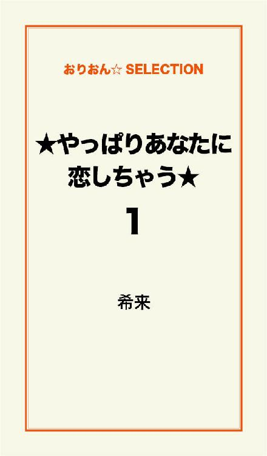
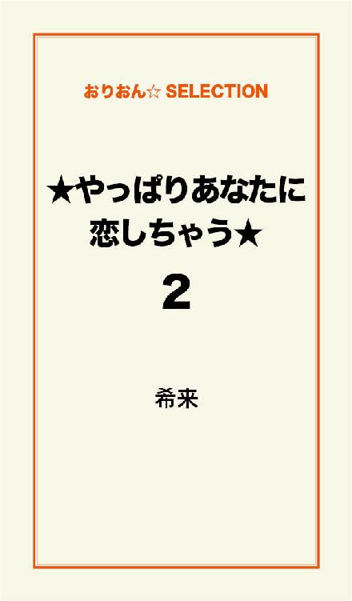
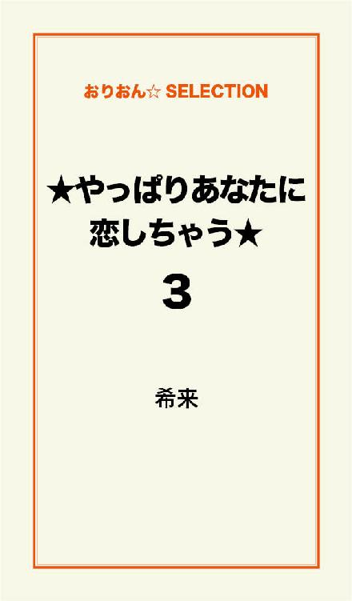

| ★やっぱりあなたに恋しちゃう★ 完全版 | |
| 希来 | |
この本は横書きでレイアウトされています。
また、ご覧になる機種により、表示の差が認められることがあります。

第一章
田代菜緒
田代菜緒
この春、高校３年生になった。
でも......見た目は高校生になりたてといってもおかしくない。
かなりの童顔みたい。
そんなわたしにも２年間付き合っている彼氏がいたんだけど......。
違う高校に通う彼氏。
同じ学校の新入生に告白されて好きになっちゃったらしい......。
やっぱり、ぴちぴちした子がいいのかな??
そんな事をボソッと言うと、親友の友美に笑われた。
「たった２コしかかわんないじゃん！」
確かに......。
でも、わたし落ち込んでたわけじゃないの。
逆に元気だった......。
「あの子」
「あの子」に出会って以来、私の心の中に生まれた罪悪感から開放されて、
ショックどころか、むしろ、ホッとしてた。
わたしがあの子に出会ったのは......。
４月。
名前も、年もわからない。
見た目からおそらく......。
わたしより年上であろう男の子。
出会い
－４月－
「あれ？ 姉ちゃん今日早くない??」
弟の健二。
高校１年生。
健二の学校は、私服ＯＫ！
それが原因なのか？
高校生になってから、いきなりオシャレをしだした。
そんな健二と洗面台でかち合った。
健二とわたしは、同じ路線の電車で高校に通っているんだけど、
健二の学校の方が遠かったから、いつもは健二の方が先に家を出ていた。
「そうなの！ 今日は、早く行かないとダメだから！
これでも姉ちゃん生徒会副会長だからね！」
今日は、いつもより30分も早く家を出た。
わたしの住んでるところの最寄駅「桜里駅」のホームでは、いつも見慣れない人の顔ばかり。
そりゃそうだよね。
いつもより30分も早く家を出たんだもん。
朝の30分なんて、すっごく貴重だもん。
わたしは一番後ろの車両に乗り込んだ。
人の多さは、変わらず超満員！
次の駅「桜町駅」で沢山の人が降り、わたしもその波に流されてた。
下を見ることが出来ずにただ流されたから、
何かに躓いて、この駅から電車に乗ろうとホームで待ってた人に思いっきりぶつかってしまった。
「痛っ!! ごめんなさい!!」
顔を上げると、私服姿の男の子が立っていた。
「大丈夫ですか？」
これが「あの子」との出会い。
私服姿の男の子、いや、男の人??
年は......多分同じぐらい??
もしくは、年上??
その男の子は、とても綺麗な顔立ちで
わたしは、しばらく「あの子」に見とれてしまっていた。
電車に乗り込もうとした人に、またぶつかってしまい、
わたしは、やっと我に返った。
「あっ大丈夫です。ごめんなさい!!」
頭を下げると、「あの子」は耳につけていたイヤフォンをはずしながら言った。
「乗るの？」
「あっ、はい！ 乗ります!!」
わたしは慌てて電車に乗り、「あの子」も乗り込む。
そして、わたしの横に立つとまたイヤフォンを付けた。
「あの子」は、何か音楽を聴きながら、さらに本を読んでいた。
でも......なんとなく、わたしの為にスペースを作ってくれている様に、
電車の壁に手をおいて、わたしの立っている場所は、そんなにギュウギュウではなかった。
気のせいかな？
わたしがチラッと「あの子」の方を見ても
全く気にせずに本を読んでいた。
やっぱり気のせい？
そんな事してくれたら、ドラマみたいでキュンってなっちゃうんだけどな～。
まぁ世の中そんなに甘くないか～。
そんな事を１人で思い、電車は進み、
わたしが降りる、７つ目の駅に付いた。
もう、ここまで来ると人は少なく、
わたしはゆっくり電車を降りる。
降りるとき、チラッと「あの子」の方を見ると、
目があった！
ドキッ!!
何？ この感じ??
自分に驚きながら、頭を下げると、
「あの子」もペコッと頭を下げてくれた。
わたしはゆっくり改札に向かって歩きだし、
電車の扉が閉まると、また電車の中の「あの子」に目をやった。
「あの子」は、壁に当てていた手を下ろし、
壁にもたれて本を読んでいた。
もしかして......本当にスペースを作ってくれてたのかな??
わたしは良いように解釈して、１人でニヤけてた。
今、誰かに会ったら、絶対変な人！
それでも、なんだか嬉しかったの♪
それからわたしは毎日この電車に乗るようになった......。
「あの子」に会うために......。
年下......
「姉ちゃん、今日も生徒会なの？」
創立記念日で休みの健二が、ソファーにごろんと寝転がって言った。
ドキッ!!
「あの子」と会いたいから......
なんて言えない！
「えっ?? そうだよ！」
少し焦って答えてしまったわたしに、健二は突っ込んできた。
「絶対ウソだよ～!! 最近おかしいもん!!
この前、彼氏に振られた～なんて言っておきながら、みょ～に明るいし!!」
「うるさいな～!!」
健二に見透かされてるような気がして、わたしはさっさと出かけた。
30分早い電車が、最近いつもの電車になってきた。
わたしは、いつもの電車に乗り込む。
この時間が嬉しかった。
忘れてたような、ドキドキがたまらない......。
わたしってば、名前も、年もわからない「あの子」に恋しちゃってる??
わたしのハズム心も乗せ、電車は「桜町駅」に付いた。
でも......「あの子」は居なかった......。
さっきまでの、わたしのテンションはどこへ行ってしまったんだろう??
ってぐらいテンションが下がった......。
がっかりした顔......。
今のわたしにぴったり......。
学校へ行っても、テンションは上がらず......。
今日は、何回「元気がないね」って言われただろう??
いつの間にか「あの子」は、わたしの元気の源になってたの......。
その日の帰り......。
「桜里駅」に着いたとたん、携帯が鳴った。
健二から。
「はい」
「あっ、姉ちゃん？」
「何？」
「あれ？ 今日、なんか暗くない??
朝良い事なかったの??」
健二の鋭い言葉に、わたしは明るい声で答えた。
「暗くなんかないよ！ 何??」
健二は、電話の向こうで笑ってるようだった。
「今どこなの？」
「駅前だけど」
「じゃあさ～なんか、飲み物買って来てよ。友達来てるんだ～」
「わかった～」
わたしは結構、健二に使われてた......。
わたしは、駅前のスーパーでジュースとおかしを買って帰った。
「ただいま～」
わたしの声に、健二は２階の自分の部屋からダダダダダーッと降りてきて、
袋を受け取ると、またすぐに階段を登り、途中で振り返った。
「あっ、姉ちゃん！ コップ４つ持ってきて～」
「も～～!!」
と、言いつつ......わたしは、健二には甘く......。
グラスを４つお盆にのせて、健二の部屋まで運んだ。
健二の部屋をノックする。
いつもは勝手に開けて
「勝手に開けるなよ～!!」って怒られてるけどね。
今日は、友達が来てるからノックしてみたの。
コンコンッ
「あけて～」
健二の声に戸を開けると、真正面に座っていた健二が、扉の横に座っていた子に言った。
「裕(ゆう)也(や)もらって～」
「うん」
返事をした子の方にお盆を差し出し、顔を上げると......。
「あの子」!?
わたしは、びっくりして、
持っていたお盆からグラスを落としそうになった。
裕也が慌てて受け取り、セーフ!!
イヤイヤ!!
セーフとか言ってる場合じゃなくって!!
わたしの頭の中は
なんで？ なんで??
なんで～～??
で、埋め尽くされた。
お盆を受け取り、顔を上げた裕也もわたしの顔を見て、声を出した。
「あっ......」
「あっ」っていう事は......
わたしの事、わかったの??
そう思ったら、チョッと嬉しかった。
裕也の声に、健二が身を乗り出した。
「２人、知り合いなの？」
「えっ？」
知り合い??
知り合いだなんて言っちゃっていいの??
ただ、朝会ってるだけ......。
いやいや......会ってるなんてずうずうしい!!
「知り合いなの？」
その言葉だけで、頭の中は又いっぱいになった。
それに......
わたしが、朝早く学校に行く理由が健二にバレちゃうじゃない......。
そんなわたしの気持ちをよそに、裕也は普通に答えた。
「毎朝、電車で一緒になるんだよ」
うきゃ～!!
言っちゃった～!!
案の定......
健二は「ふ～ん」と言いながら、わたしの方を見てニヤッと笑った。
そして、裕也の方に目線を向け
「俺の姉ちゃんの、菜緒。２つ上だけどヨロシクな!!」
なんで、裕也の方だけ向いて言うの～!!
わたしの顔は、一気に熱くなった。
でも......
裕也が気にとめたところは、そんな事ではなく......。
「２つ上」......。
裕也は驚いた様子だった。
「２つ上なの?? じゃあ、高３なんだ!!
同じ年かと思ってた......」
そんなに幼く見える??
いつもよく言われてショックだったんだけど......。
今日は、嬉しい事が大き過ぎて全く気にならなかった。
だって!!
偶然会う事が出来たし!!
しかも!! 知り合いになれた......。
わたしのテンションは一気に、最高潮に達した。
健二に感謝だね。
健二の友達
次の日、健二にニタニタ笑われながら、いつもの時間に家をでた。
30分前のいつもの時間。
裕也の乗ってくる桜町の駅に着くまで、昨日以上にドキドキしてた。
桜町のホームに電車が入ると、わたしの目は裕也を探し一気に顔がほころぶ。
裕也君発見!!
しかも、今までずっと
音楽を聴きながら、本を持って乗ってきてたのに!!
今日は、イヤフォンは首に掛かっていて
本も持ってなかったの!!
「おはよう、裕也君」
「おはよう、菜緒ちゃん」
きゃ～!!
わたしは、裕也君に言われた「菜緒ちゃん」に
ドキドキで胸がいっぱいになった。
昨日の今日で、こんな簡単に名前で呼べるなんて
一瞬２コ下なのに、若さを感じた......。
けど......冷静に考えたら
「菜緒ちゃん」が妥当なの??
ううん!!
「健二のお姉ちゃん」って呼び方もあるよね!!
わたしは、とにかく良い方に解釈したかったの。
「今日は、音楽聴いてないんだね」
「ああ、うん。菜緒ちゃんが居ると思ったから」
裕也は、そう言ってニコッと笑った。
裕也はきっと、普通に答えたんだろう......。
でも、わたしは裕也にドキドキしっぱなしだった。
桜里の駅から５つ目の駅に着くと、私服の男の子が乗って来た。
その子は、乗って来たとたん満面の笑みで
「菜緒ちゃん、おはよう～!!」
えっ!?
わたし??
わたしはびっくりして
男の子を見ると、やっぱり、わたしを見ていた。
「え～っと......」
顔も名前もわからない......。
でも......
わたしを知ってるって事は......。
頭の中で、猛スピードで考えていると
裕也が、その子に話かけた。
「大樹、今日早くない？」
大樹??
そう言えば......
昨日、健二の部屋にそんな名前の子もいたっけ??
わたしは、裕也以外の２人の記憶があんまり無かった。
あと１人も、名前なんていったかな～??
そう心の中で考えていた。
「だってさ～。菜緒ちゃんがこの電車に乗るって聞いたからね！
信吾も今日から彼女と行くって言ってたし!!」
あ～!! 思い出した～!!
もう１人は、信吾だ～!!
思い出した、って言うか......。
大樹が言ったからわかったんだけど......。
わたしは、ほっと一安心。
あ～よかった♪
と思ったわたしの頭にひとつの疑問が浮かんだ......。
健二のところにいた３人のうち、２人はここに......。
１人は彼女と......。
じゃあ、健二は誰と行ってるの??
「ねぇ......健二は、誰と学校に行ってるの??」
わたしの言葉に、裕也と大樹は顔を見合わせた。
そして、声をそろえて逆に聞いてきたの!!
「彼女とだろ？」
え～～～っ!!
知らなかった......。
健二に彼女がいるなんて......。
「え～!! そうなの?? 知らなかった～!!」
わたしは、ドサクサ紛れに聞いてみた。
「じゃあ、２人は??」
聞いたはいいけど......。
本当は、裕也君に彼女がいたらどうしょう......。
ドキドキ。
わたしの心拍数が上がっていた。
「そんなの聞くなよ～!!」
２人の反応に、ホットした。
裕也には彼女はいないんだ～。
思わず顔がほころびそうだったわたしに大樹が聞いてきた。
「菜緒ちゃんは？ 彼氏いるの??」
「えっ？ あっ、いないよ」
頼りになる弟
その日の夜。
わたしは、いつものように勝手に健二の部屋に入って行った。
「健二～!! あんた、彼女いるんだって??」
「ああ、そうだよ。何で？ 知らなかったの？
中２の時から付き合ってるんだけど」
「うそ～!?」
知らなかった......。
かわいい弟は、とっくに女の子を好きになる「男」になってたなんて......。
わたしは、ちょっぴりショックだった......。
「まぁ～俺も成長してるんだよ！ 昨日来てた信吾、覚えてる？
姉ちゃんは、誰かさんばっかり見てて覚えてないかもしれないけど......。
あいつの彼女も２コ上なんだ」
「そうなの？」
高１で、年上と付き合っちゃうのね......。
こんな、身近であるんだな～。
そう思うと、わたしはちょっぴり光を感じて、心の中で喜んでた。
健二は、わたしのボーっとした顔を見て
ほんの少し笑ながら言った。
「うん！ だから......まぁ～頑張って!!」
「あっ......ありがとう......」
ん!? なんだ??
わたし、弟に励まされてるの??
ついこの間まで、かわいい中学生だったのに......。
かわいい弟が、頼りになる弟に見えた......。
偶然
－６月－
春のさわやかな空気は、あっと言う間に無くなって
だんだん蒸し暑い日が多くなった。
学校の帰り、
わたしは親友の友美に
彼氏の誕生日プレゼントを選ぶのに付き合わされていた。
友美は、あれやこれやと迷い、
決まるまで２時間歩きっぱなし。
わたしの足は、棒のようになっていた。
やっと決まって友美が会計をしている間、
隣のアクセサリー店をブラブラ見ていたわたしの名前を誰かが呼んだ。
「あれ？ 菜緒ちゃん??」
声のする方に顔を向けると......裕也だった。
ドキッ!!
予想もしてないところで偶然会っちゃうと、
いつもよりドキドキが増しちゃう！
裕也は微笑んでわたしの側にやって来た。
「何してんの？」
「友達の買い物に付き合ってて......」
ちょっと緊張してるわたしに対して、裕也はにこやかに話しかける。
「そうなんだ。
こんな所で偶然菜緒ちゃんに会えるなんて、なんか嬉しいな～。
あっこのピアス菜緒ちゃんに似合いそう」
かかっていたピアスを手で触りながら
裕也はさらりとドキドキする事を言ってしまう。
その言葉、真に受けちゃうよ......。
裕也君、困らないの......？
わたしは心の中で思った。
「裕也君は？ どうしたの??」
照れを隠すように、わたしは慌てて聞いた
「今からバイトなんだ」
「バイトしてるの？」
「うん！ そこのファミレスでね。
菜緒ちゃん、時間あったら寄っていってよ」
裕也のそんな言葉にもドキドキしながら話をしている所に
会計を済ませた友美がやって来た。
「いたいた～!! 菜緒探しちゃった～」
にこやかに歩いて来た友美は、裕也に気付くと
裕也に「ペコッ」と頭を下げて
「誰？」と小さな声で聞いてきた。
「弟の友達の裕也君」
「こんにちは」
笑顔で言う裕也。
ホントかわいい。
この笑顔にもキュンとしてしまう。
わたし達は、裕也のバイト先でお茶することにした。
席に座ると、疲れた足が癒される......。
しばらくすると、バイトの制服に着替えた裕也が
わたし達の席に、オーダーを取りにやって来た。
２人ともアイスコーヒーを頼むと、裕也は微笑んで去っていく。
わたしは、その後ろ姿を自然と見つめていた。
ぼ～っとしているわたしに、友美は身を乗り出して聞いてきた。
「菜緒ってさぁ～。あの子の事好きなの？」
「えっ!? なんで??」
言葉と同時に、わたしは赤面する。
バレないようにしていたつもりだけど......。
こんな短時間でバレちゃうの??
「だって、目が違うもん!!
だからか～。２年も付き合ってたタケシと別れたのに、
落ち込む様子もなかったのは～」
友美の声は、少々大きかった。
「２年も付き合ってたの？」
それは、頼んだアイスコーヒーを待って来た裕也の声......。
こんな事、聞かれたくなかった......。
心の中で叫びながら、わたしは答えた。
「うっ......うん」
「俺と同じ～」
裕也は、明るく言う。
「えっ？ 裕也君もフラレちゃったの」
「う～ん......。フラレたのとは、ちょっっと違うかも？
お互い気持ちが離れちゃったって感じ？
菜緒ちゃんは、フラレちゃったの？」
あ～わたしのバカバカ!!
ボケツほっちゃった!!
わたしの心の叫びがまた出る。
「うん......」
「そうなんだ。けど、菜緒ちゃんフッちゃうなんてもったいない事するね」
裕也は、またこんなドキドキする言葉をサラリと言って、
他のお客さんの所に注文を取りに行った。
また友美は身を乗り出す。
「ねぇ！ あの子も菜緒の事好きだよね～」
「えっ!?」
そんな嬉しい事......あるわけないよ......。
「違うと思うけど......」
「そうかな～？ 好きだと思うけどなぁ～」
「もう！ その気になっちゃうから言わないで」
わたしはやっぱり......
心のどこかで、
「２つ上」
「弟の友達」が引っかかって、
気持ちにブレーキをかけていた......。
お誘い－７月－
明日から夏休み。
とうとう夏休みが始まっちゃう!!
普通なら、喜ぶんだろうな。
けど......
わたしは、毎朝電車の時間を楽しみにしてたのに......。
しばらく裕也に会えないかと思うと寂しかった......。
電車は、桜町の駅に着き、裕也が乗って来た。
「おはよう」
「おはよう、菜緒ちゃん。
明日からしばらく会えなくなっちゃうね」
わたしは、ドキッとした。
だって......それは、今わたしも思ってた事だよ～。
「うん......」
「ねぇ、メルアド交換しない？」
え～～～!!
そんな事......
そんな事、思ってたけど、
自分から言い出せなかったのぉ～。
淋しいって思った気持ちは、一気に嬉しい!!に変わって、
私達は、満員電車の中でメールアドレスと番号を交換した。
５つ目の駅について、大樹が乗って来た。
「菜緒ちゃ～ん！ 明日から夏休みだよ～!!
海に行こうよ～！ プールでもいいんだけど～」
大樹は、朝から元気いっぱいだった。
「え～？ 誰と～??」
「俺達と～菜緒ちゃん」
「俺達って??」
「俺と～裕也と信吾と信吾の彼女と、健二と健二の彼女!!」
大樹は、満面の笑みで丁寧に教えてくれた。
「え～？ いいよ～わたしなんか行ったら、健二が嫌がるよ～。
同じ年の子誰かいないの？」
こう答えたけど......
本当は......
大樹の言った「俺達」の中に、裕也の名前が入っていたから、行きたかった......。
でも......
やっぱり、年上って事と、健二が一緒ってところでチュウチョした。
それでも、大樹はめげずに言った。
「同じ年の子って......。年なんて関係ないじゃん！
菜緒ちゃん、友達連れてきてよ～」
「でも......」
わたしが戸惑っている間に電車はわたしの学校の駅に着いた。
話は途中のまま、わたしはにこやかに手を振って電車を降りた。
その日の帰り。
終了式という事もあるのか？
駅のホームには、いつもより学生の姿が多かった。
わたしは、友美と２人で電車を待つ。
しばらくしてホームに入ってきた電車に乗ると......
偶然、裕也と大樹が乗っていた。
ドキッ！
わたしは偶然に弱い。
裕也の顔を見ると、心拍数は一気にあがり
さらに目が合うと、体が熱くなっていくのを感じていた。
裕也はわたしの方を見て、ニコッと微笑む。
その可愛い笑顔にまたドキドキ。
あ～心臓に悪い～。
わたし達を見つけると、大樹も嬉しそうに側にやってきた。
「わぁ～！ 菜緒ちゃん！ 偶然って凄～い!!」
「ほんとうだね」
ホント、偶然裕也と同じ電車だったのが嬉しかった。
「菜緒ちゃん！ 丁度お友達いるじゃ～ん！
一緒に行こうよ～海～」
大樹は、今朝の話の続きをしだした。
すると......
そばに居た、裕也と同じ学校の女子生徒が話に参加してきた。
「海に行くの～？ 私達も行きた～い」
私服姿の綺麗な子と可愛らしい子。
裕也達と同じ学校らしい......。
声をかけてきたのは、綺麗な子の方。
髪は長くてストレート、色も白くて背だってわたしなんかよりもスラッとしてる。
年下だなんて思えない......。
「ほら、行きたいって子が２人もいるじゃない」
わたしは、心とはうらはらな事ばかり口にしていた。
「わたしはいいよ......。
一応受験生だし、勉強しなくっちゃ......」
大樹はがっかりした顔をしていたけど、すぐにこの女の子達と話し出した。
裕也は大樹達の輪には入らず、わたしの側に来てボソッと言った。
「菜緒ちゃんも行けばいいのに」
そんな嬉しい事をさらりと言ってくれちゃう裕也にドキドキしていた。
それを聞いていた友美も、
「そうだよ～。行けばいいのに～」
「行こうよ」
「行きなよ」
２人に交互に言われている所に、
さっきまで大樹と話をしていた可愛らしい方の子が
裕也に少しくっつくような感じで話に入ってきた。
そんなに混んでないのに......。
そんなにくっつかなくてもいいじゃない......。
心の声は、正直なの......。
「ねぇ、誰なの～？」
可愛らしい子は、声まで可愛らしくて、
背の高い裕也を見上げるように、少し上目遣いで言った。
その子の手は、裕也の腕に触れていた。
ぎゅっとにぎっている訳ではなく、自然に添えている程度。
けど、それだけでわたしの鼓動が少し乱れる。
裕也は、その子の方に目線をおろし
可愛い笑顔をつけて答えたの。
「健二の姉ちゃん」
健二の姉ちゃんか......。
ホントにそうなんだけど......。
でも、なんとなく寂しい気持ちになって
わたしは、この４人と距離を感じていたの。
可愛らしい子は、視線を裕也からわたしに向け
一瞬上から下まで目線を動かす。
そして、ニコッと微笑み、
「健二のお姉ちゃん？ じゃあ、年上なんですか？
な～んだ、同じ年かと思っちゃいました～。
よかった～。
わたし、「ユイ」っていいます。ヨロシク」
「ヨ......ヨロシク......」
なんだか意味ありげな言葉......。
いきなり自己紹介されたし......。
「な～んだ」って何？
「よかった～」って??
ユイの笑顔を見ながら、
頭の中では、それがぐるぐる回ってたの。
それから２つ目の駅で、大樹とユイ達は降りて行った。
その次の駅で友美も降り、裕也と２人......。
始めから２人の時よりも、なんだかドキドキする。
電車の扉が閉まると、すぐに裕也が口を開いた。
「菜緒ちゃん行かないの？」
本当は行きたいよ......。
心の声とは違う言葉をわたしは口にする。
「うん......」
すると、裕也はわたしの耳元に顔を近づけ、
「じゃあさ！ ２人でどこか行かない？」
「えっ!?」
またこの子は、本当にドキドキする事を簡単に言い出す～!!
わたしの心臓は、ドキドキを通り越してバクバク大きく音を立てた。
「だめ??」
わたしの顔を覗き込む、その顔がまた堪らなく可愛くて、キュンとしちゃう。
わたしの体は一気に熱くなった。
「だめじゃないけど......」
わたしは、裕也が誘ってくれた事が嬉しくて
すぐに「行く～!!」って言いたい気持ちを押さえ
一応聞いてみたの......。
「裕也くん、わたしなんかと行くより
同級生の子と行く方が楽しいんじゃない？
さっきの子とか......」
「さっきの子??」
「うん......。
さっきの可愛い子だよ～。
ユイちゃんって言ったっけ？」
裕也の腕にさりげなく手を添えていたユイちゃん......。
それに対して、自然と話していた裕也......。
それが......それが凄く気になってたの......。
「ユイ？ あ～！ 島田さんの事？」
ユイって、名前がパッとわからなかったみたい......。
ユイちゃんの事、島田さんって呼んでるの？
わたしの心の声がつぶやく......。
「なんで？ 俺、菜緒ちゃんと行きたいから誘ってるんだよ。
実はドキドキしてるし！」
そう言って裕也は、テレ笑をする。
この笑顔も堪らない～!!
本当に、ほんと～～に好きになっちゃうよ～!!
わたしは、このドキドキを気付かれないようにするのに必死だった。
桜町の駅に着くと
裕也は「メールするね」と言って降り、
扉が閉まって、電車が動き出すまで見送ってくれた。
１人になると、さっきの会話が頭をぐるぐる回ってる。
顔がにやけそうでしょうがなかった。
しかも、締めに、
「メールするね」だもの!!
どんなメールが来るのかな??
そんな事を考えてると、やっぱり、顔はにやけちゃってた。
裕也のバイト
その日の夕方......
健二がわたしの部屋にやって来た。
「なぁ～。今から俺達、裕也のバイト先にメシ喰いにいくんだけど......。一緒に行く？」
えっ??
わたしの気持ちは一瞬明るくなって
「行きた～い♪♪」
そう思わず言いたくなっちゃう気持ちを抑えた。
「......いいや。
わたしが行くとおかしいでしょ??」
わたしの答えに、なぜか健二は少し微笑んでいた。
「なんでおかしいって思うの？ 同じ年じゃないから？」
健二は図星をついてくる。
「うん......」
健二はまた少し微笑んで言った。
「信吾の彼女も来るから大丈夫だよ。
一緒に来ると、もれなく俺の彼女も見れます！
それに......裕也が姉ちゃん連れて来いってうるさいからさ」
健二から、裕也の名前が出ただけでドキドキしちゃう。
本当に、そんな事言ってくれたの??
わたしの顔が少し熱くなると、健二はまた微笑んだ。
「姉ちゃんって、ほんとわかりやすいな。
顔に「行きたい!!」って書いてあるよ。
ほんと、世話かかるんだから。
ほら、早く用意して」
そう言って、健二は部屋を出て行った。
なんだか最近、健二の方がお兄ちゃんみたいになってきたな～。
普通、男の子の方が幼くない??
健二は、しっかりしてるのかな??
彼女の前だったら、どんな健二なんだろう??
健二の彼女も見れるし、行った方がいいよね♪
そう自分に言い聞かせても、裕也に会える嬉しさでいっぱいだった。
裕也のバイト先は、桜町の駅。
裕也の家がある駅。
って、行ったことないけどね。
まず、健二の彼女と桜里の駅で待ち合わせ。
健二と２人で駅に向うと、もうすでに待っていた。
健二の彼女、リオちゃん。
小さくて、すごく可愛らしい。
健二って、こういう子が好きなんだね～。
リオは、わたし達を見つけると、
健二に向けて、満面の笑みを浮かべ
わたしの方を見ると、来る事を知っていたのか？
ペコッと頭を下げた。
健二は、リオにわたしを紹介し、
そして、わたしにリオを紹介した。
リオは、わたしに
「リオです」と言って微笑み、そのまま健二に微笑みをうつした。
なんだか、健二を頼りにしてる感じが可愛かった。
電車に乗っても、リオはわたしと会話した後は
必ずと言っていいぐらい健二の方に顔を向ける。
可愛い♪
かわいい～♪♪
かわいい～♪♪♪
わたしの心の声は叫んでた。
そして、
若いっていいな～。
なんて、おばちゃんになった気分になっちゃってた。
桜町の駅で、他のみんなと待ち合わせ
みんなそろったところで、裕也のバイト先に向った。
付き合っている２組は、それぞれ並んで歩き、
わたしは、大樹としゃべりながら歩いていた。
「なんか......やっぱり、若さを感じるな～」
前を歩く健二達を見てつぶやいた。
「なんで？ 菜緒ちゃん見た目溶け込んでるよ～」
いつも裕也にばっかり目が行っちゃって
大樹のことあんまり見てなかったけど......。
大樹もなかなか可愛い顔をしてる。
可愛いって、男の子には失礼になるのかな？
でも、かっこいい！って言うより本当に可愛い顔なの。
背はわたしよりは高いけど......。
男の子の中に入っちゃうと、小さい。
でも、みんなに気を使って元気を与えてくれるとっても優しい子。
「見た目って......。わたしそんなに幼く見えるかな～」
こう言うと、大樹は慌てると思ったけど、やっぱり慌てて言った。
「そういうんじゃ～ないよ～!!
幼いとかじゃなくて......
その～信吾の彼女の方がさ～」
最後の言葉をにごした大樹にわたしは微笑んだ。
それは、わたしも思ったよ。
会った時に、「おとな～！」って思ったもん。
背もスラッとしてて、綺麗な子だなって。
信吾の彼女に比べたら......わたしは、ほんと幼い。
「信吾君の彼女、綺麗だよね～。
ホント！ わたしも同じ年とは思えないよ～」
わたし、別に皮肉って言ったつもりはなかったんだけどね。
大樹はまた焦って頭をかいた。
「いや！ あの......菜緒ちゃんは、かわいいよ」
これも、大樹の優しさかな？
わたしは、大樹の焦る様子がおかしくって
笑って素直に「ありがと」って言った。
－ＰＭ８：００－
６人は、裕也のバイトしているファミレスに入り
１つのテーブルを囲むように椅子が並んでいる席を案内された。
座る場所が問題......。
わたしいったいどの位置に座ったらいいのかな～？
そんな事を思っていると、
信吾の彼女（リョウコ）が声をかけてくれた。
「隣に座ろう」
そう言って微笑んだ顔は、素敵なお姉さん。
こういう子に憧れちゃう。
わたしは一番端に座り、その横にリョウコ、信吾、健二、リオ、大樹の順で座った。
テーブルを囲んでいるので、通路を開けてわたしの隣には大樹が座っている。
みんなが座ったところに、メニューを持った裕也がやってきた。
裕也は、みんなを見て最後にわたしと目が合うと、ニコッと笑った。
わたしもドキドキして微笑んだ。
みんなメニューを見だすと、
裕也はわたしの横にしゃがんで、わたしの見ているメニューを一緒に見て自分が食べたことのあるお勧めメニューを教えてくれた。
いつもわたしの方が裕也を少し見上げて話しているのに
しゃがんでいる裕也の顔は、椅子に座っているわたしより少し下にあって
たまにわたしの方を見上げる裕也にドキドキしていた。
「どれが一番おいしかった？」
「これ！」
裕也は少し悩んでメニューに指を差した。
男の子なのに、スラットした手。
わたし変な子なのかな？
思わず指に触れたくなる。
「じゃあ、これにする！」
こんな会話もドキドキする。
わたしも裕也が指したところを指さして裕也の方に顔を向けると
裕也も微笑んでわたしを見上げた。
みんなのメニューを聞き終わって、裕也が去って行くと
リョウコが話しかけてきた。
「菜緒ちゃん、あっ！「菜緒ちゃん」って呼んでもいい？」
リョウコは、気の利く優しい子だった。
わたしは、すぐにリョウコの事が好きになった。
「うん！ わたしも、リョウちゃんって呼んでもいい？」
リョウコは、健二達から「リョウちゃん」って呼ばれていた。
リョウコは、笑って「うん」と答えると、
わたしの耳元に顔を寄せ、小声で聞いてきた。
「菜緒ちゃんと裕也君って、付き合ってるの？」
その声は、少し嬉しそうな声だった。
「付き合ってる」だなんて～!!
びっくりしたわたしの顔は、みるみる赤くなって
首を大きく横に振った。
「なんだ......。そうなんだ～。
わたしと同じ子がいると思ったのにな～」
さっきの声とはうらはらに、リョウコの声はとても残念そうで、
なんだか申し訳ないって思っちゃうぐらい。
わたしは、水を一口飲むと思い切って聞いてみた。
「ねぇ、リョウちゃん......。年の差とかって、感じる??」
リョウコの顔は優しい笑顔に変わる。
「初めはね、凄く感じてたけど......」
「けど？」
「好きって気持ちを抑える方が苦しくなっちゃって......。
そしたら、年なんてどうでもよくなっちゃった！
信吾の友達と会うと、「あ～そうだ～」って思い出すぐらい？
信吾と２人だと、全然感じないよ」
そうなんだ～。
わたしは頷きながら、
少し緊張していた背中を椅子の背もたれにつけた。
リョウコは微笑みをわたしに向けながら続けた。
「今は、それで前に進めないの？」
えっ!?
わたしはびっくりして、背もたれにつけていた背中もピンッとなった。
そして、初めて会った子にどうしてこんなに素直になれるんだろう？
って、自分でびっくりするぐらい今の心の内を話した。
もちろん！
ずっと耳打ち状態の会話だけどね。
「前に進めないって言うかね......。
「ドキッ」ってするたびに、その事が頭をよぎっちゃう」
「わかる！ わかるよ～!!」
リョウコと、その事について共感しあっていると料理が運ばれてきた。
誰かに心の中を話すと、不思議と楽になっちゃうもので、
裕也にドキドキする気持ちがなんだか嬉しかった。
わたしは、店内を歩いている裕也をさりげなく目で追い、
たまに水を入れにやってくる裕也にドキドキしながらご飯を食べた。
みんな食べ終わる頃、裕也のバイトの時間は終わり、着替えてやって来た。
そして、自然にわたしの横に座る。
裕也は、わたしをドキドキさせる天才。
わたし......元彼にもこんなドキドキしてたのかな？
もう、忘れちゃった......。
「裕也君、ご飯食べたの？」
「うん！ 食べたよ！ ここに来る前にパパッとね」
裕也はニコッと笑った。
約束
しばらくファミレスでしゃべって、私達７人は店を出た。
駅までの道を歩く。
行きと同様、信吾とリョウコ、健二とリオ
でも、健二が気遣ってくれたのか？
健二は、大樹を呼びつけ３人で歩き
わたしは、裕也と２人一番後ろを歩いていた。
「裕也君、駅まで行ったら家まで遠くなるんじゃないの？」
「大丈夫だよ、そんなに変わらないから」
裕也の笑顔にわたしも微笑む。
裕也と２人で歩くのがくすぐったくて嬉しかったの。
その気持ちは、裕也の言葉でどんどん増していく。
「今日さ、菜緒ちゃん来ないんじゃないかな？って思ってたから、なんか嬉しいや」
はにかんだ笑顔が可愛すぎ～!!
わたしのドキドキは治まらなくて、やっぱり本当の気持ちは出せなかった。
「わたしも、裕也君に会えて嬉しい」
そう言いたかったけど......。
わたしの口から出た言葉は......。
「来てよかったよ。リョウちゃんとも話せたし」
素直じゃないわたしとはうらはらに、裕也は嬉しそうに「う～ん」と伸びをした。
「俺もよかった！」
「何がよかったの？」
「菜緒ちゃんの私服姿が見れたこと～!!」
そう言って、わたしに微笑みかけた。
恥ずかしい～!!
裕也の言葉にも、笑顔にもドキドキが止まらなくてしょうがなかった。
でも、頑張って冷静を装ってるわたし......。
「なにそれ～」って、笑うのが精一杯だったの。
たあいも無い話をしながら歩く駅までの道。
もっともっと、駅まで遠かったらいいのに......。
桜町の駅が見えて来ると、わたしの歩くペースは自然と落ちて、
前を歩く健二達との距離が少し開いた。
「菜緒ちゃん、夏休みって塾とかあるの？」
「うん。夜はいつも通りで、朝は８月１０日まで毎日あるよ。
日曜日は無いけど......。どうして？」
「今日、学校の帰りに言った事忘れちゃった？
俺、結構ドキドキして言ったのにな～」
あっ......。
「２人でどこか行かない？」
裕也の言葉を思い出した。
本気で言ってくれてたんだ......。
顔がだんだん熱くなってきて、
わたしの声はチョッとうわずってしまった。
「おっ......覚えてるよ！」
裕也は微笑んで私の方に顔を向けた。
「俺さ、日曜日はバイト入っちゃってるから
菜緒ちゃんの塾の無い、１０日以降にどっか行こう」
「うん！」
この言葉は、素直にすぐに出てしまった。
だって......。
嬉しくてしょうがなかったんだもん！
でも、８月１０日って......。
まだ２週間以上も先の話......。
「そんなに会えないのか......」
って思っちゃうわたし。
彼女でもないくせに、贅沢だよね。
それぞれの想い
次の日、わたしは朝から夏期講習に出かけた。
講習が終わって家に帰ると、健二も出かけていて、家には誰も居なかった。
わたしは、独り言のように「ただいま......」と言って自分の部屋に向う。
今日、塾でもらったプリントをカバンから出していると、携帯が鳴り響いた。
着信は、友美から。
わたしは、元気よく出る。
「はぁい～」
「わたし～。
菜緒、塾終わった頃かな～？って思って～。
今日は、暇～??」
友美の声も明るい。
「うん！ 何にも予定ないよ～。どっか行く??」
「買い物付き合ってもらおうと思って♪
菜緒も水着買わない??」
わたしは海にもプールにも行く予定はなかったから、
水着も買う予定はなかったけど......。
友美の水着を買う為に買い物に出かけた。
友美との待ち合わせ場所は、「桜町」の駅。
裕也の家と、バイト先のある駅。
桜町の駅に向うだけで、なんだかチョッと嬉しかった。
昼ごはんを食べてなかった私たちは、まずランチ。
それから、友美の水着選びに専念した。
友美は、買い物の時だけ優柔不断というか......
慎重に選ぶからなかなか決まらない。
今日もやっぱり、２時間ほど見てまわってやっと決まった。
そして、私たちの足もいつものように棒のようになっていた。
「ごめんね、菜緒～。
今日はおごるから、お茶しに行こう！
裕也君のバイト先すぐそこだったよね。そこに行こうよ！」
明るく言う、友美の言葉に嬉しかったんだけど
わざわざ裕也君のバイト先までお茶しに行くみたいで......。
わたしが行ったらどう思うかな？とか、いろいろ考えてしまった。
そんな事を考えていたわたしの腕を友美はニコニコ笑いながら引っぱって歩きだした。
友美に手を引かれてお店に入ると、裕也が出てきて、
一瞬驚いた顔になったかと思うと、すぐにかわいい笑顔をくれた。
そしてわたし達を席に案内してくれる。
席に座ったわたし達に、裕也は水とお絞りを出しながら
２コ先のテーブルを指して言った。
「菜緒ちゃん、健二達も来てるよ」
裕也の指さす方を見ると、そこには若々しい空気が漂ってた。
健二、リオ、大樹、信吾、そして......ユイと、綺麗な子......。
信吾の彼女のリョウコは、居なかった。
「ホントだ......。なんか、空気が若い......」
思わず口に出してしまった言葉に、裕也は笑った。
「なに？ 空気が若いって??」
裕也の笑顔にドキドキしながら答える。
「え？ だって......
なんだか、若い空気があるんだもん」
「じゃあ、ここはどんな空気なの？」
「う～ん......普通の空気??」
わたしの答えに、裕也はまた微笑んで
「俺は、普通の空気の方が好きかも」
えっ!?
その瞬間、２コ先のテーブルから大樹が大きな声をかけてきた。
「菜緒ちゃ～ん!! 偶然～!!」
その大樹の姿に、裕也は「し～！」というジェスチャーをして、
わたしは、その裕也の姿を見つめながら、
自分の鼓動が早くなってるのを感じていた。
わたし達は、アイスコーヒーを頼み、
裕也が去って行くと、大樹がわたし達の席にやって来た。
「菜緒ちゃん、凄い偶然だね～」
今日もテンションの高い大樹は、わたしの横に座り
ニコニコしながら、話しかけてくる。
「そうだね～。今日は、何の集まりなの？」
「今日は、海に行く計画の話し合いだよ。
ねぇ、ここで会ったのも縁だよ！
菜緒ちゃんも一緒に行こうよ!!」
この前諦めたと思ったのに、また誘ってくれる大樹。
嬉しいけど......。
「だって、塾があるもん。それに......空気も違う......」
「えっ？ 空気??」
大樹は、不思議そうに首をかしげた。
「うんん！ こっちの話～」
そんな会話をしているところへ、裕也がアイスコーヒーを持ってやって来た。
裕也は、わたしの隣に座ってる大樹の頭をドアをノックするように
コツンとたたきながら言った。
「お前、ここで何やってんだよ！ 自分のところに座れよ!!」
こつかれた頭を抑えながら大樹は裕也の方に顔を向ける。
「いいじゃん！ 別に!!
何？ お前、俺が菜緒ちゃんの横に座ってるからやきもちやいてんのか～!!」
大樹が裕也の方を指差して言うと、裕也の顔はほんの少し赤くなった気がした。
わたしの顔も、大樹の言葉に敏感に反応して熱くなった。
「うるせ～よ!!」
照れを隠すように、大樹の肩をおすと
大樹は、わたしに寄りかかってきた。
「わぁ～！ 菜緒ちゃんごめん!!
あいつが、裕也が悪いんだからね～」
裕也は慌てて大樹の腕を持って引っぱり起こす。
「ごめん！ 菜緒ちゃん!!」
裕也の心配そうな、顔と声にキュンとなっちゃう。
「大丈夫だよ」
裕也の方に微笑んで目を向けたわたしを
大樹が少し淋しげな目で見ていた事に
わたしは気がつかなかった......。
裕也が去り、わたしはトイレに行くのに席を立った。
わたしと一緒に席を立ち、自分のテーブルに戻ろうとした大樹を友美が呼び止める。
「大樹君、ちょっといい？」
「何？」
大樹は再び席に座って、友美の方に目を向ける。
友美は、ストローでアイスコーヒーの氷をカランと鳴らした。
「大樹君って、好きな人を応援するタイプ？」
「えっ？ 何？ 急に!!」
大樹の顔が少し赤くなって、下を向いた。
そんな大樹に友美は、微笑みかける。
「菜緒ってさ～年下にもてるんだね。
かわいいもんね。わたしも、守ってあげたいもん」
大樹は顔を上げ、友美の方に目を向けると
少し声のトーンを落として言った。
「俺って......バレバレですか？」
大樹の言葉に、友美は嬉しそうに笑う。
「やっぱりそうなんだ～!!
なんか、若いっていいね♪
青春みたいじゃない??」
「友美さん......なんか面白がってません??」
「そんな事ないよ!!」
と言って、ジェスチャーで手を振る。
「でもさ～、何で頑張らないの？
まだ、わかんないでしょ？ 人の気持ちなんて」
「そんなの無理ですよ～。
だって、裕也と居るときの菜緒ちゃん凄く楽しそうでしょ？」
「うん......確かに」
友美は、アイスコーヒーを一口飲んで頷いた。
「俺は、楽しそうな菜緒ちゃん見てるのが好きなのかも」
大樹は友美の方に目を向け、ほんのり微笑んだ。
わたしがトイレの大きな鏡の前で手を洗っていると、ユイが入ってきた。
わたしは鏡越しにユイを見て軽く会釈すると
ユイは立ち止まりじっとわたしの方を見ていた。
「どうしたの？ トイレひとつ空いてるよ」
振り返ってユイの方に顔を向けると
ユイは、この前会った可愛いユイとは別人のような口調で話し出した。
「健二のお姉さん、どうしてここに来たんですか？」
あまりのギャップに驚いたわたしは、この質問の意味がわからなかった。
「えっ？ どうしてって？」
「健二の家って、この駅じゃないですよね！
わざわざお茶しにこのファミレスに来るわけないじゃないですか!!
お姉さん、裕也に気あります？」
その言い方は、かなり嫌な印象を受ける感じで、
わたしは、言葉をすぐに返す事が出来ずに黙っていた。
ユイは、裕也のことが好きなんだ......。
そう頭の中で思っただけ......。
少し怖い口調でユイは続けた。
「わたしは、裕也が好きです！
だから、お姉さんに邪魔されたくないの!!」
「邪魔って......」
「男の子って、年上にちょっと憧れちゃったりする時があると思うんです。
だからお姉さんがいるとダメなの!!
お姉さんが居なかったら、きっと私と裕也はうまくいくの!!」
「でも......」
ユイは、わたしにしゃべる隙をあたえないぐらい、
ガンガン自分の気持ちをぶつけてきた。
「年上だし!! 違う学校だし!!
わざわざ、裕也に手出さなくったっていいじゃないですか!!
同じ学校にも男子いるんでしょ？
そっちで見つけてよ!!
どうせ、２学年も違うんだから同じ時を楽しめないでしょ!!
お姉さん、高校卒業したら裕也のことなんか子供に思えてしまうんだから!!
同じ学年の方が、ずっと一緒に居られて楽しいんだから!!」
ユイの言葉はわたしに胸にグサグサと音を立てるように突き刺さった......。
だって......。
それは、いつも気にしていた事だったから......。
裕也にドキッとするたびに......。
裕也にキュンってするたびにそうどこかで思っていたの......。
そうなのかもしれないね......。
だけど......。
好きなんだもん......。
その言葉は口に出す事は出来ず、
わたしは、興奮して話すユイをただ見ているだけだった......。
ユイは言いたい事だけ言って、出て行ってしまった。
なんだ、トイレに来たんじゃなくて、わたしに言いに来たんだ......。
心の中でつぶやき、ユイが出て行った扉を眺めていた。
カチャッ。
鍵の開く音......。
そうだ......
扉の閉まったトイレがあったんだ、出るに出れない状況にしちゃったみたいで申し訳なかったな......。
外を伺うようにゆっくり開いた扉から出てきたのは、リオだった。
「リオちゃん？」
リオは、何故か泣きそうな顔をしていた。
「リオちゃん......。どうしたの？」
「だって......今の人、あんな言い方しなくても......」
リオは、わたしの事を思って、泣きそうになってたの。
本当にかわいい。
「なんだ～びっくりした～!!
健二と何かあったのかと思ったよ～!!
そんな事気にしないで。わたし、大丈夫だよ」
半べそのリオを見ていると、やっぱり甘えるような事は言えない......。
やっぱり、年上だからってどこかで思ってるんだ......。
しっかりしなくっちゃって......。
わたしは、リオに笑って答えてみせた。
でも......本当は、全然大丈夫じゃなかったんだよ。
もやもや
リオに、少し笑顔が戻ると、わたし達は、トイレを出た。
だって、かわいいリオちゃんが泣きそうになってたら健二が心配するでしょ。
何かあったって、健二に悟られたくなかったしね。
ユイにあんな事言われた時は、頭の中が「もやもや」してたんだけど......。
こうやって冷静に考えられるなんて、わたしって結構強かったりして......。
って言うより、図太かったりして......。
なんて、頭の中で考えてた。
リオ達が座っていた席が見えると
そこに私服に着替えた裕也が座っていた。
バイトの時間終わったんだ......。
心の中でそう思った瞬間、裕也がわたし達の方に顔を向けた。
そして、わたしの方を見て微笑む。
その笑顔は、やっぱり可愛くて胸がキュンとなると同時に、
なんだか安心するっていうか、暖かい気持ちになるの。
やっぱりわたし......
裕也の事好きだよ......。
裕也の笑顔に自然と微笑んだわたしの笑顔は、
裕也の横で勝ち誇ったようにわたしを見て笑っていたユイの顔が目に入った瞬間に消えてしまった。
リオは、健二の隣に座り、わたしは、その席に顔を向けることなく素通りしたの。
ユイの隣に座ってる裕也を見るのが嫌だったの。
さっきは大丈夫だって思ったのに......。
なんだか泣きそうだよ......。
「遅かったね～トイレ混んでた？」
まだ、大樹と話をしていた友美がわたしの方を見上げて言った。
「えっ......。あっ、うん......」
わたしの適当な返事に、大樹はわたしの顔を覗き込むように見てきた。
「菜緒ちゃん、どうかした？」
一瞬その言葉に驚いた、なんか変な顔してた!?
わたしはちょっと焦って、笑顔を作ったの。
でも、答えた声がうわずちゃってて逆に怪しかったかな？
「えっ!? どうもしないよ!!」
「ほんと？ それならいいんだけど......」
そう言いながら大樹は立ちあがり、わたしに席をゆずって
自分の席に戻っていった。
わたしの座った位置から丁度、裕也とユイが見える。
また胸が「ドクン!!」と音を立てた。
うぅ～ヤバイぐらいに胸がもやもやするよ～!!
わたしは、前に座っている友美で２人が見えないように座る。
そうしないと、顔も上げられなかったの。
「ねぇ!! 本当にどうかした？
なんかあったでしょ!!」
友美は、少しわたしの方に身を乗り出し
声のトーンを落として言った。
「えっ......」
身を乗り出した友美の後ろに
あの２人が見えて、わたしはすぐに下を向く。
そんなわたしを見て、友美は後ろを振りむき、すぐにわたしに目線をうつした。
「何？ わかんないよ。言ってごらん」
友美の声が優しくて、涙がでそうだった。
わたしは、溢れ出そうな涙をごまかす為に笑って返した。
「あとで。ここじゃ言えない」
「わかった！ じゃあ、出よう!!
その前に、トイレ行ってくるから待ってて。
泣くんじゃないよ!!」
友美を笑顔で見送り
前に座っている友美が居なくなったおかげで
よく見えるようになった２人を見ないように
わたしは、テーブルに顔をうずめた。
目をつむっていると、いろんな事考えちゃうんだね～。
さっきのユイの言葉が頭の中をぐるぐる回っていた。
わたしの答えは、
「でも......」とか
「だって......」とか
そして最後は......
「そうなのかも......」
で終わるの。
それがずっと頭の中でうるさくて、
わたしは、自分を呼んでる声に気付かなかった......。
「菜緒ちゃん」
「菜緒ちゃん！」
「菜緒!!」
「はい!!」
最後の「菜緒」でびっくりして顔を上げると......。
目の前に裕也の顔があった。
いきなりこんな近くで！
ドアップで～!!
わたしの顔は、みるみる赤くなったに違いない!!
そして、頭の中で
「菜緒」
って言葉がかけめぐる。
今......菜緒って言った??
心の言葉は、声にも出ちゃって、
裕也の顔も少し赤くなって、テレたように頭をかいた。
「ごめん......。
気分でも悪くなっちゃったのかと思って、焦って......」
わたしは大きく首を横に振った。
そんな、謝らないでよ～。
でも......もっとちゃんと聞きたかったかも......。
わたしは裕也によってテンションの変動が激しすぎる自分にびっくりしていた。
「気分わるくないよ、大丈夫だよ」
「そうなの？ でも、なんだか様子がおかしかったから......」
わたしはドキッとして、目線を下にむけ、
アイスコーヒーにさしたストローをぐるぐるまわした。
「えっ？ わたしおかしかった?? 全然普通だよ」
うつむいていても、裕也の視線を感じて、顔をあげれない......。
わたしは、うつむいたまま微笑んだ。
「そうなの？ でも......」
「裕也～!!」
裕也の言葉の途中で、ユイが裕也を呼んだ。
その声は、さっきのユイとは全く違ってすごく可愛らしい。
裕也が振り返ると、ユイは戻って来てといった手招きをした。
「ちょっと待って」
裕也の言葉は優しい......。
わたしの胸がまたもやもやしてきて、
さらにぐるぐるストローを回す。
裕也はまたわたしの方に体を向けた。
もやもやの原因は、それはヤキモチ......。
同じ学校で、同級生のユイにヤキモチ妬いちゃってるの。
裕也は、わたしの裕也ではないのにね。
わたしは、ユイとは正反対の可愛くない言い方で言ってしまった。
「いいの？ 戻って来てほしいんじゃない？」
「そんな事ないでしょ」
裕也は優しく返してくる。
わたしはさっきの口調を反省して、今度は普通に話をしたの。
「でも......今日は、海に行く話し合いなんでしょ？」
「そうみたいだね。けど、俺行かないから」
えっ？ 行かないの??
わたしはパッと顔を上げた。
「行かないの？」
裕也はわたしの顔を見て微笑む。
「やっと顔上げてくれた！」
「えっ？」
「菜緒ちゃんさっきからずっと下向いてるんだもん。
嫌われちゃったかと思ってドキドキしちゃったよ」
わたしの顔は熱くなる。
そして思わず言っちゃったの。
「嫌いになんかならないよ!!」
言った後に、またさらに顔が熱くなった。
思わず言っちゃって恥ずかしい......。
裕也は満面の笑みで返してくれた。
「海には行かないよ。菜緒ちゃん行かないんでしょ？」
「うん......。でも、高校の友達で行くんでしょ？
女の子２人もせっかく行く事になったんでしょ？」
なんだか裕也に海に行って欲しいみたいな言い方しちゃったんだけど。
そんな意味じゃなくて、裕也がどうして行かないのかが知りたかったの......。
「あの２人は大樹の友達だよ」
「えっ？ 大樹君の友達なの？」
「そうだよ、中学が同じだったんだって」
「そうなんだ......。
大樹君と、ユイちゃんって仲いいの？」
わたしが思い切って聞いた言葉に、裕也の顔が少し真剣な表情にかわった。
「どうして？ 大樹の事......気になる？」
えっ？ そんなんじゃないよ～!!
けど、けど......裕也君、なんだかそれって......。
その言い方って......。
ヤキモチ妬いてるように聞こえるんだけど～!!
わたしが慌てて否定すると、裕也は微笑んだ。
「あ～♪ ２人いい感じ～♪」
友美が戻ってくると、裕也は立ち上がり友美に席を譲った。
「まぁ～裕也君も座りなよ」
友美が、わたしの隣の席に手を差し出しながら言うと
裕也はすんなりわたしの隣に座る。
目の前に裕也がいるのもドキドキするけど、
隣にいるのにもドキドキしちゃう。
友美はニヤニヤしながら、わたし達を見ていた。
「なんかまだ話の続きがあったらどうぞ」
友美は頬杖を付きながらアイスコーヒーを一口飲んだ。
「えっ？」
裕也とわたしは同時に顔を見合わせた。
友美は微笑んで続ける。
「どうする？ 菜緒？ 帰る??」
「えっ？ 菜緒ちゃん帰っちゃうの？
今からさ、大樹がみんなでボーリングに行こうって言ってるんだけど、
菜緒ちゃん達も行こうよ」
わたしの方だけ見て言う裕也に、友美が微笑みながら口を挟んだ。
「ちょっと裕也君！
「達も」って、わたしの事おまけみたいに言わないでよ～」
「あっ......ごめんなさい......。
菜緒ちゃんも、友美さんも一緒に行こう」
慌てて言い直す裕也が可愛かった。
「ごめんなさい」だって。
わたしの顔は自然とほころぶ。
「どうする？ 菜緒？」
２人の視線がわたしの方に向けられると
ほころんだ顔も少し緊張になった。
みんなって......あの席にいるみんなでしょ??
そんなの絶対無理だよ......。
「えっ......今日は、やめとく......」
裕也の顔が少し淋しそうに感じて、胸がキュンとなった。
「そうか......。じゃあまた今度一緒に行こうね」
裕也の淋しそうな笑顔に、わたしも微笑んで頷いた。
わたしと友美は店を出て、近くの公園のベンチに腰をおろした。
「やっぱり、暑いね～」
そう言って友美はわたしの方を見て微笑んだ。
「ほら、言ってごらんなさい」
「うん......」
さっきのトイレでの出来事を話すと、友美は黙ってうなずきながら聞いてくれた。
「やっぱりあの子そんな感じだと思った」
「えっ？ 友美わかってたの？」
「だいたいあ～いう子ってそんな感じでしょ？
菜緒は人を疑わないからショック受けるんだよ。
あんな子のいう事なんて気にしない!!」
友美の言葉にわたしはうつむいた。
「でも......同じ学年の方が一緒の時を楽しく過ごせるのかも？って思っちゃうもん......」
「だったら、諦める??」
諦める......そうか......。
好きじゃなかったらこんな考えないよね......。
でも......。
わたしの頭の中が自分への質問でいっぱいになった時、
友美がまた口を開いた。
「でも、諦められないんでしょ？
だからそんなに悩むんだよ！
だったら気にしないの!!
大体、裕也君は菜緒の事好きだって!!」
「そんなのわかんないよ......」
ウジウジのわたしに、友美はため息を付いて微笑んだ。
「わたしから見たら、十分裕也君が菜緒の事好きなんだな～ってわかるけど？
わたしが男だったらさ～。
年上の女の人と付き合う方が勇気いるよ～。
しっかりしなくっちゃ!!って思っちゃわない？
菜緒より裕也君の方がいろいろ考えちゃうと思うけどな～。
どこか行こうって誘ってくれたんでしょ？」
わたしは黙って頷く
「裕也君、凄く頑張ってるじゃん!! 素直に喜びなさい!!」
友美がわたしの頬をつつきながら微笑み、わたしも微笑んで返すと、友美は名案を思いついたように言った。
「菜緒、健二君がいるじゃない!!
年上と付き合う事とかに抵抗あるか聞いてみたらいいんだよ～!!
しかも友達だし!!
そばにいてる弟利用しなくっちゃ!! ねっ♪」
わたしは友美と別れ家に戻った。
お父さんは、２日前から出張に出ていていない。
お母さんは、友達と朝から出かけていた。
健二は......
まだ帰って来るわけないか......。
１人で勉強!!って気分にもなれなくて、
わたしはリビングでテレビを眺めていた。
見ていたわけではなく、タダ眺めていただけ......。
いつの間にか時間は過ぎていて、外は暗くなっていた。
プルルルルル～♪
わたしはゆっくり起き上がり３コール目で電話に出た。
「はい、田代です」
電話の主は、お母さん。
「もしもし？ 菜緒？
お母さんね、友達とご飯食べて帰ってもいいかな？」
うちのお母さん、じつは若いの。
お父さんは、45歳
お母さんは、35歳
高校の時にわたしを産んだんだって。
今のわたしの年齢で、もうお母さんだったんだね。
凄いよ！ お母さん。
だから、まだ結婚してない友達とかとたまに遊んでるみたい。
「うん、いいよ♪
健二も、もしかしたら食べて帰ってくるかもしれないし......。
わたしも、適当に食べるから」
「ありがとう～」
お母さんは、嬉しそうに電話を切った。
切った瞬間、また電話が鳴る。
プルルルルル～♪
すぐそばにいたから、今度は１コールで出た。
「はい、田代です」
「早っ!! 俺」
今度は、健二だった。
「今、ちょうどお母さんから電話があって切ったところだったから。何？」
「あ～、メシ食って帰るからって、母さんも帰って来ないとか？」
「うん、食べて帰るって。
健二も食べて帰るかもって言っておいたから大丈夫だよ」
次の健二の言葉まで、少しの間があった。
お～い、聞いてる？
って思った瞬間に健二の声が聞こえてきた。
「今、桜町の駅前だけど、来るか？」
えっ......。
でも......きっと、さっきのメンバーのままだよね......。
気にしない！って、友美に言われたけど......。
やっぱり、この場は行けないよね......。
同級生の会みたいなんだもん......。
「今日は......やめとく......」
「そっか......じゃあな」
わたしは電話を切ると、自分の部屋のベットに飛び込んだ。
嫌な想像ばかりがわたしの頭に浮かんできておかしくなりそうだったから
裕也達が、楽しくご飯を食べて
楽しそうに会話して、
裕也の笑顔に、ユイが笑って......。
うわぁ～～!!
わたしは布団を頭からかぶって
寝てしまおう、寝てしまおう!!
って何度も自分の心の中で唱えていたの。
でも......
結局眠りに付いたのは、明け方だったと思う......。
「ふぁ～～」
朝からあくびが止まらなかった。
とても勉強なんて気分じゃなかったけど、
わたしは、とりあえず塾の夏期講習に行き
そして先生の話も、何も頭に入らないまま講習は終わった......。
わたしは、いつものようにまっすぐ家に向かう道でずっと考えていた。
やっぱり、友美の言う通り健二に聞いてみようかな？
こうやって、ずっと考えてるなんてやっぱり出来ないよ～。
そう思ったとたん、わたしの足は早足になって
家のドアを開け、階段を駆け上ると
いつものように、いきなり健二の部屋のドアを開けた。
「健二～!!」
そして、一瞬でドアをまた閉めた。
「ごめんっ!!」
びっくりした～!!
初めて見ちゃったよ～!!
ドラマとか映画では見たことあったんだけど......。
本物のキスなんて～!!
きゃ～!!
わたしは、健二とリオのキスシーンを見てしまったの!!
わたしは自分の頬に手を当てて、今聞きたかった事も忘れて
健二の部屋の前で立ち尽くしていたの。
すると、健二の部屋の扉が開いてわたしの頭に「ゴンッ」と当たった。
「痛っ!!」
わたしが頭を押さえて振り返ると
不機嫌そうな顔の健二が顔を出した。
「何？」
「ごめん......怒った??」
健二は黙って頷き、しょんぼりしたわたしの顔を見ると
ドアを開けたまま、部屋に戻りリオの隣に座ると
今度は、呆れたような声で言った。
「入れば」
「でも......」
「何か用事があるんだろ??」
健二の声に、リオが立ち上がりわたしの側にやってきて
微笑んでわたしの手を引っぱった。
気まずそうな空気の中、ゆっくり健二の部屋に入ると
リオはまた健二の隣に座り、わたしは２人の前に座った。
思わず苦笑いをしてしまう......。
「ゴメンね、なんか邪魔しちゃって......」
「もういいよ！ その話も終わりね！
何かあるんだろ？ 何？」
健二の言葉に、さっきまでの勢いはどこにいったの？
ってぐらい、言葉を失ってしまっていた。
「あの......あのね......」
はっきりしない、わたしの言葉に健二が口を開いた。
「なぁ、リオ。姉ちゃん２コ年上だけど、年上！って感じするか？」
へっ??
健二いきなり何言い出すの??
そう思っていると、リオが話しだした。
「わたしなんかより、しっかりしてるって思うけど、
年上！って感じじゃなくて......。
なんていうか......友達にもいたらいいのになって思う♪」
リオはわたしの方に向けていた顔を、にこやかに微笑みながら健二の方に向け、
健二は、わたしの方に顔を向けた。
「だって！ 姉ちゃん年上って感じしないよ！
すっげ～子供じゃん!!」
そ、そうかも知れないけど......。
でも......。
わたしのふに落ちない顔を見て、健二はため息をまたひとつして、
リオの耳をいきなりふさいだ。
「俺さ、こいつが年上だとしてもやっぱりリオと付き合いたいって思うよ！
年なんか関係ないんだよ！
自分が守りたい！って、好きだ！って、思うやつが
たまたま、同じ年か、年下か、年上かってだけだろ？」
健二はそう言って、リオの耳をふさいでいた手を外した。
「健二かっこいい～！」
わたしの声と同時にリオの声も重なった。
リオは、健二に抱きつき健二を見上げて微笑んだ。
「聞こえた～!!」
なんとも可愛いその姿に、わたしが微笑むと
健二は、いきなり恥ずかしくなったのか？
頭をくしゃくしゃとかいて
「裕也の方が、もっとかっこいいかもしんないじゃん！
昨日、あいつ......
俺が姉ちゃんに電話かけた後に帰ったから、元気なかったし......。
メールでもしてやって！」
お邪魔なわたしは、健二とリオにめいいっぱいの笑顔で「ありがとう」を言って部屋を出た。
やっぱり、健二に聞いてよかった♪
わたし何も言ってないけど......。
そうか......リオが昨日の事、健二に話してたのかな？
優しい２人のおかげで、ずっと胸の中にあった「もやもや」はどこかにいっちゃった。
でも......「メールしてやって！」って......。
なんて、したらいいの～？
緊張しちゃうよ～!!
どきどき
結局、２時間もかかって打ったメールは......
☆☆☆☆☆☆☆☆☆☆☆☆
昨日は、ボーリングに誘ってくれて嬉しかったよ。
今日もわたしは、塾。
全然頭に入ってないけどね♪
裕也君は、バイトかな？
無理しないように、がんばってね♪
☆☆☆☆☆☆☆☆☆☆☆☆
なんの気もきかないメール......。
すぐに返信はなくて、送ったのをちょっと後悔してしまったよ......。
けどね♪ 夜中に着信があったの!!
☆☆☆☆☆☆☆☆☆☆☆☆
バイト中で、メール見れなくて今見たんだ！
すぐに返信できなくてごめん!!
菜緒ちゃんから、メールもらえるなんて超うれしい!!
夜になって元気が出てきたよ。
菜緒ちゃんまだ勉強中かな？
菜緒ちゃんこそ無理しないように頑張って！
☆☆☆☆☆☆☆☆☆☆☆☆
メールでこんなに嬉しいなんて、初めてかも知れない!!
返信しようか？ どうしようか？
迷って、やっぱり嬉しくて返信してしまったの。
☆☆☆☆☆☆☆☆☆☆☆☆
お仕事お疲れ様～♪
ハイ♪ 無理しないように頑張りま～す♪
今日は、もうおしまいにします♪
おやすみなさ～い♪
☆☆☆☆☆☆☆☆☆☆☆☆
裕也からの返信があったら、なんだかホッとして
急にねむたくなっちゃったの......。
昨日寝れてなかったからかな？
わたしは、その後の裕也からの返信を、
次の日の朝、ベットの中で見て、朝からにやけてた。
ただ、おやすみって入ってただけなんだけどね♪
７月中は、裕也から何回かメールと電話があった。
けど、偶然会う事はなかった。
「会いたい」って思ってたのに、それをメールでも電話でも伝える事が出来ないまま、とうとう８月に入ってしまった。
今日もわたしは、塾の夏期講習に行き、
昼過ぎ、いつものようにまっすぐ家に帰った。
「ただいま～」
玄関に並んだ靴を見て、健二の友達が来てるんだって思いながら、
わたしはそのまま自分の部屋に向う。
階段を半分まで上がったところで健二の部屋の扉が開いた。
「菜緒ちゃん、お帰り～！ 久しぶり～!!」
健二の部屋から出てきたのは、裕也だったの!!
わたしは、びっくり!!
って言うよりも......
久しぶりに裕也の顔を見ることができて、思わず抱きつきたくなるぐらい嬉しかった!!
「ただいま、久しぶり～!!」
階段の一番上に微笑んで座っている裕也に、
満面の笑みで答え、ゆっくり階段を上がる。
裕也に手が届きそうな位置まで階段を上ると
裕也は、ほんの一瞬わたしを抱きしめた。
わたしの心臓がドキドキ音をたてる暇も無く裕也は手をほどき
「じゃあね」
そう言って、階段を下りて行く。
「もう帰っちゃうの??」
思わず本音が出ちゃった言葉に、裕也は笑顔で振り返った。
「菜緒ちゃんの顔見れたから。今からバイトなんだ」
裕也は急いでいる様子で靴を履き、玄関の戸を開けた。
「あっ！ 待って!!」
わたしは慌てて外に出た。
「わたしの自転車使って！」
「えっ？ いいよ、走るから。
乗っていったら、菜緒ちゃん困るでしょ？」
「いいよ！ すぐ取りに行くから、鍵もつけっぱなしで置いといて」
わたしが自転車を出して、ハンドルを裕也の方に差し向けると
裕也は、素直にハンドルに手を置いた。
「じゃあ、菜緒ちゃん後ろに乗って！」
まさか、そう返ってくるとは思わなかったからびっくりした。
「えっ？」
「そしたら、歩いて自転車取りに行かなくてもいいじゃない！」
「いいよ～！ 重いもん！」
わたしの答えなんて気にもとめず、裕也は強引にわたしの腕をつかんだ。
「早く乗って！」
わたしの心臓は、今度こそバクバク音を立てていた。
言われるがまま、裕也の乗る自転車の後ろに乗り、
裕也は、わたしの手を自分の腰に回させた。
裕也はびゅんびゅん自転車をこぎ、
わたしはドキドキしながら裕也にしがみ付いていた。
時間が止まればいいのに......。
って思う時はいつだってあっという間に過ぎ去って......。
駅に到着！
「あ～楽しかった!!
今度また、ゆっくり２人乗りしようね！
自転車ありがとう!!」
裕也は笑顔で言って、慌てて切符を買いに行き
改札をくぐると、中から大きく手を振って帰って行った。
わたしもゆっくり自転車をこいで家に帰る。
ちょっと、さっきの余韻に浸りたかったの。
思い出すだけで、顔がにやけちゃいそうで......。
もしかしたら、にやけてたかも？
今日も、変な人になってたかな??
家の中に入ると、健二はリビングのソファーに寝そべっていた。
なにか言われるかな？って思うと、ちょっと照れくさかったけど、
声は正直で、嬉しくて弾んでたみたい。
「ただいま～♪」
「おかえり～」
健二はムクッと起き上がり、予想通りニヤッと笑いながら言った。
「なんかさ～さっき、すっげ～恥ずかしいぐらい青春っぽくなかった？」
わたしの顔はミルミル熱くなって頬に手を当てた。
「あいつ、昼ぐらいにいきなりやって来てさ。
１時からバイトなんだけど、姉ちゃんの顔が見たくなって来たんだって！
なんか、かわいくない？」
わたしの心は「キュン」となった。
裕也のする事は、いつもわたしをドキドキさせて、どんどん裕也に惹かれていく。
「今日は、日曜日に入ってるシフトと変わってもらう為に
１時から９時まで入ってるんだって。
頑張るよな～あいつ！
誰の為かは、知らないけどね～」
健二は、またニヤッと笑った。
わたしは部屋に戻り、裕也にメールを送った。
☆☆☆☆☆☆☆☆☆☆☆☆
今日は、一瞬でも会えてすごく嬉しかったよ♪
また、自転車２人乗りしようね♪
☆☆☆☆☆☆☆☆☆☆☆☆
もちろんバイト中の裕也から返信はなかったけど
わたしの気分は良くって、勉強もはかどった。
夕食も済ませ、わたしは自分の部屋にいた。
机には向っているけど......。
昼間はあんなにはかどった勉強も、
健二の言葉が頭をちらついて手に付かなくなっていた。
「今日は、日曜日に入ってるシフトと変わってもらう為に
１時から９時まで入ってるんだって。
頑張るよな～あいつ！
誰の為かは、知らないけどね～」
裕也のバイトの終わる時間が近づくにつれて時計を見る回数が増えていく。
わたしは......裕也に会いに行きたかった。
８時30分......。
わたしは、部屋を出た。
階段をバタバタと駆け下りる。
「ちょっと出かけてくる～」
お母さんに「どこ行くの？」って聞かれたけど、
あいまいに答えて急いで家を出た。
家から駅までは、自転車で10分もかからない。
電車がうまく来れば、隣の駅の「桜町」までは５分。
駅から裕也のバイト先までは、歩いて10分ぐらい。
うまくいけばの話だけど、家から裕也のバイト先まで25分で行けるはず！
わたしは電車に飛び乗った。
裕也のバイト先に着いて携帯を開く。
８時55分......。
凄い!! 予想通りじゃん!!
わたしは携帯を握り締め、店の裏口の方に歩きだした。
その時、店の中にチラッと裕也の姿が見えてちょっぴり不安になった。
突然来ちゃって、嫌がられないかな～？
やっぱり、来るんじゃなかったかな～？
そんな事を思いながら、ファミレスの裏口から少し離れた通りに座った。
最後に携帯の時間を見たのは、９時15分
裏口から誰かが出てきて、携帯を閉じ止めてあった車の陰から見ていた。
なんだか、探偵みたい......。
不安と、少しワクワクする感じと半分コの気持ち。
でも、出てきたのは......裕也じゃなかった。
残念なのと、ホットしたのと半分コの気持ち。
ふぅ～と息を吐いた時、裕也の声が聞こえてきたの。
「お先に失礼します」
うわぁ～本当に出てきた～。
って、当たり前なんだけど......。
急にドキドキしてきた～!!
裕也は、イヤフォンを耳につけ携帯をいじりながら歩いて来る。
そして、立ち止まって少し微笑んだかと思うと、電話をかけながらまた歩きだした。
なに笑ってるんだろう??
そう思った瞬間、握り締めていたわたしの携帯が鳴り出した。
「わぁ!!」
あんまりびっくりして思わず声を出してしまって
慌てて携帯を見ると、着信......裕也!!
「えっ!? 裕也君!?」
着信音が止み、顔を上げると......
目の前に裕也が立っていたの!!
裕也は驚いた顔をして聞いてきた。
「菜緒ちゃん......どうしたの？」
「ごめんなさい！ 急に来ちゃって！
なんか......顔が見たくなっちゃって......」
「すっげー嬉しい!!」
裕也は微笑んで、わたしをギュッと抱きしめた。
２つ下でも、裕也はわたしをすっぽり包み込み、
わたしの心臓は、裕也に聞こえちゃうんじゃないかと思うぐらいバクバクと音を立てた。
「裕也くん......」
「あっ！ ごめん!!」
裕也はゆっくり手をほどき、満面の笑みで話しだした。
「俺、実は今日誕生日なんだ!!
だから昼、菜緒ちゃんの顔見に行ったの!!
誕生日記念に!!」
「えっ？ 今日、誕生日なの??」
「うん！ こんなサプライズ!!
最高の誕生日だよ！」
無邪気に笑う裕也がとても愛おしかった。
裕也の笑顔を見てると、わたしまで嬉しくなっちゃう。
「菜緒ちゃんは、３月でしょ？」
「うん」
「１コ、菜緒ちゃんに追い付いた♪」
裕也の笑顔に、胸が「キュン」となる。
「お誕生日おめでとう♪」
「ありがとう♪」
わたし達は、駅に向って歩きだした。
「ねぇ、菜緒ちゃん。
今度の日曜日はもう予定入れちゃった？」
「うんん、何にもないよ」
「じゃあさ、デートしない？」
「デート」って言葉に、ドキッとして顔が一気に熱くなった。
「デ、デート!?」
裕也は、少しテレを隠すように話す。
「うん！ どっか行こう！って、言ったじゃない。遊園地に行こう！」
裕也の無邪気な笑顔に、ドキドキしっぱなしのわたしは、満面の笑みで、頷いた。
どうしよう～!!
日曜日まで、あと３日だよ～!!
あ～!! ドキドキしちゃうよ～!!
日曜日の事を考えると、１人で赤面しちゃって
おかしな２日はあっと言う間に過ぎた......。
日曜日─。
とってもいい天気!!
わたしは、早起きしてお弁当を作った。
お弁当も、嫌がられるかな??って、心配して
健二に聞いてみたら、「喜ぶんじゃない？」って、なんかちょっと笑ってたけど、そう言ってくれたから、作ったの。
わたしが健二に、恋のアドバイスなんか受けるなんて思ってもみなかったよ......。
家を出るとき、健二に
「楽しんどいで～♪」って、子ども扱いされたけど、
わたしは、満面の笑みで
「行ってきま～す♪」って、言って出かけた。
裕也との待ち合わせは、「桜里」の駅。
学校へ行く方とは反対の方に向う。
裕也は、「桜町」から遊園地までの切符を買った方がいいからホームで待ち合わせしてたのに、駅に着いたら裕也は、「桜里」の駅前で待っててくれた。
わたしも、裕也もすぐにお互いを見つけて笑顔で「おはよう♪」と言った。
裕也は、わたしの分の切符も買ってくれていて、お金を払おうとしたんだけど、断られた。
その言い方も可愛かった......。
「今日は、俺に出させて。
次、出してもらうから......って、またデートする約束ね！」
「うん！」
電車に乗ると、わたしは裕也にプレゼントを渡したの。
何にしたらいいかわからなかったから、携帯のストラップを選んだ。
でもやっぱり悩んで、これまた健二に聞いた。
「男の子でも、ストラップとかもらったら嬉しい？ 嫌？ つける??」
健二はこの時も笑ってたな。
そして、こう言ったの。
「姉ちゃんがあげたもんなら、なんでも喜ぶよ」
わたし、裕也にあげるなんて言ってないのに......。
みえみえなのかな??
「これ......もらってくれる？」
わたしの差し出したストラップを見て、裕也は驚いた顔をしていた。
「誕生日プレゼント......」
少し上目遣いで、裕也の様子を伺っていると、
裕也は、笑顔で答えてくれた。
「すっげー嬉しい!!
ありがとう!!」
遊園地について、わたし達はいっぱい遊んで
お昼は広場で、わたしの作ったお弁当を食べた。
これも、健二の言ったとおり、裕也は喜んでくれた。
裕也の笑顔がわたしは嬉しかった。
一番最後に乗るのは、「観覧車にしよう!!」って、裕也が言うから
それ以外の乗り物を、昼からも次々乗った。
楽しい時間は、本当に早くって
残り観覧車だけになった時には、日も沈みかけで遊園地はネオンで輝きだしていた。
わたし達が、観覧車に向って歩いていると、誰かに呼ばれた。
「菜緒？」
わたし??
そう思って、声のした方に顔を向けると
「やっぱり、菜緒じゃん!!」
そこに立っていたのは、「タケシ」だった......。
裕也といる時に、一番会いたくなかった......。
わたしの心とはうらはらに、タケシは普通に話しかけてきた......。
今日は、友達とグループで来てるらしい......。
そんな事、どうでもいいんだけど......。
わたしが話を切ろうとすると、またタケシが話しだした。
「俺さ......結局、あの子と別れちゃったんだ......。
なんか、菜緒と比べちゃって......」
えっ!?
なんで、そんな事言うの......？
今更そんな事言われても、どう答えたらいいかわからないし......。
わたしが何も答えないでいると、タケシは少し近づいてきた。
「あのさ......」
タケシが何か言い出そうとした時、
裕也は、今までつないだ事のなかったわたしの手をギュッとにぎって、自分の側に引き寄せた。
わたしは、ドキッとして裕也の顔を見上げると、
裕也は真剣な顔で、タケシの方を見ていた。
いつもの優しい裕也じゃない真剣な表情に、
わたしはさらにドキッとして、鼓動が早くなるのを感じていた。
タケシは、裕也の方を見ると
「ごめん、何もない。じゃあな！」
そう言って、去っていった。
裕也は、笑顔はなかったけど、いつもの優しい顔に戻って、
「行こう」と言って手をつないだまま歩き出した。
観覧車の順番を並んでいる間も、裕也はあんまり元気がなくて、
わたしが心配で、裕也の顔を覗き込むように見ると、
裕也は、ほんのり微笑んだ。
順番がまわってきて、観覧車に乗るとき、
つないでいた手を離し、向かい合って座った。
つないでいた手が離れると、なんだか少し不安になった......。
裕也は、ずっと外を眺めてるし......。
会話の無い沈黙のまま、観覧車は上へと動いていた。
しばらくして、裕也が沈黙を割った。
「ここから見える夜景が綺麗なんだ。
小さい頃よく家族で来てた。
この夜景、菜緒ちゃんに見せたかったんだ......」
わたしも、裕也が見ていた方を眺めていた。
さっきよりも、あたりはだいぶ暗くなって、
まだ少ししか見えないけど、街の灯りは綺麗だった。
裕也の方に顔を向けると、裕也もわたしを見ていたの。
「裕也くん......？」
目が合うと、裕也はまた外に顔を向けてボソッと言った。
「これがヤキモチってやつかな......」
わたしは、何も言えずただ自分がドキドキしているのを感じていた。
観覧車は、上へ上へと動いていく。
裕也は、また外を眺めたまま言った。
「あの人でしょ？ ２年付き合ってたの......。
菜緒ちゃんと、同じ年？」
「......うん」
それから、また沈黙......。
この沈黙が、苦しかった......。
苦しくて、思い切って話だしたの。
「裕也君!!」
「何？」
裕也は、優しい声でわたしの方に顔を向けた。
「わたし......フラれたって言ったけど......。
その時、フッてくれてほっとしたの。
名前も、年も、どこの学校に行ってるかもわからない子が気になっちゃって、罪悪感でいっぱいだったの。ずるいの......わたし......」
裕也は、わたしをずっと見つめていた。
わたしは、その視線に耐え切れなくて顔を下に向けたの。
「そっち、座っていい？」
裕也の優しい声に顔を上げて頷いた。
裕也は、わたしの隣に座るとそっと手をにぎった。
そして、こう言ったの。
「今まで一目惚れってした事あった？」
告白
裕也の方に顔を向けると、裕也は微笑んでまた景色を眺めながら話し出した。
「俺さ......本当は、いつもあの電車に乗ってなかったんだ......。
菜緒ちゃんと初めて会ったあの日、たまたま学校に早く行かないといけなくてあの時間の電車に乗ったら、菜緒ちゃんと会ったんだ。
なんでだかわかんないんだけど......
「また会いたい!!」って、思って......。
今までそんな事思った事なかったから、自分でも「何してるんだろう？」って、思いながら、次の日もまたその電車に乗ってた......。
「菜緒ちゃんに、また会えるかな？」って、思って乗ってたんだ」
わたしは、びっくりとドキドキでいっぱいで
裕也とつないでいた手を、ギュッとにぎった。
「わ、わたしも！
あの日、学校に早く行かないといけなくて......。
あの電車に乗ったら、裕也君に会ったの。
いつもは、あの電車より30分も後の電車に乗ってたの。
だけど......だけど、また裕也君に会いたくて......」
そう言ったところで、裕也はわたしを抱きしめた。
「それ、ほんと？」
「うん」
「それって、凄くない？」
「うん！」
裕也はわたしを抱きしめたまま、観覧車は一番上へ向う。
わたしは、裕也の少し早くなった鼓動を感じながら裕也の胸に顔をうずめていた。
「菜緒ちゃん」
「うん......」
わたしは......ドキドキでいっぱいだった。
「菜緒」
「菜緒......」
わたしのドキドキは、裕也の言葉でさらに増す。
わたしが顔を上げると、裕也はわたしを見つめて優しく髪をさわり、
わたしは、何もいえないまま裕也をじっとみつめていた。
「菜緒......好きだよ......」
裕也の優しい瞳に全身の力を吸い込まれそうだった。
嬉しいのに、ドキドキしちゃって手が震えてた。
「わたしも......裕也君の事、大好きだよ」
裕也は、ニコッと微笑んで、またギュッとわたしを抱きしめた。
裕也の声が耳元で聞こえる。
「菜緒の事、これから、俺の彼女って言ってもいいかな？」
「うん！」
わたしの答えに、裕也は抱きしめていた手をゆるめ、
わたしの顔を見て微笑んだ。
「俺、すっげードキドキしてる！」
「わたしもだよ！」
裕也の顔がゆっくり近づいてきて、わたしはゆっくり瞼を閉じた。
裕也のキスは、とても優しい。
もっと、触れていたいって思っちゃう。
唇が離れて、ゆっくり瞼をあけると、
裕也は、また軽くキスをした。
わたしがびっくりした顔をすると、裕也は照れを隠すように無邪気な笑顔で言った。
「フェイントー♪」
「も～!!」
わたしも、緊張が解けたように笑って手を上げると
裕也はその手を掴んで、また唇を重ねた。
今度は、優しいけど......
情熱的なキス......。
大好きだよ......裕也......。
わたしは、裕也に夢中だった......。
観覧車はいつのまにか、てっぺんを通り過ぎて下に向っていた。
「あっ！ 菜緒！ 夜景見てた？」
「えっ？ 見てないよ～
だって......裕也くんも見てないでしょ？」
今のキスを思い出して、顔が熱くなる。
裕也は微笑んでわたしの頬に手を当てた。
「ねぇ、菜緒......。俺の事呼んで」
「えっ？ 裕也くん？」
「これからさ！ 「裕也」って呼んでくれないと返事しないから」
無邪気な笑顔がかわいい～。
けど！ けど～!!
そんなの緊張しすぎるよ～!!
「え～っ!! 緊張するよ～!!」
「ダメッ!! 言ってくれないとすねるから！ はい、言って」
うぅ～!! 緊張する～!!
わたしが黙っていたら、裕也はチョッと脹れたふりをした。
「すねるから!!」
「ゆ......ゆうや？」
「えっ？ 聞こえな～い」
「ゆうや......」
「もう一回言って」
裕也は、ニコッと笑って顔を近づけた。
「裕也......大好きだよ」
「大好き」って言うつもりはなかったんだけど......。
裕也の顔を見てたら、思わず口にしてしまったの。
裕也の顔が少し赤くなって、かわいかった。
裕也は、一瞬言葉を呑んでわたしの耳元でささやいた。
「俺も......」
〈２巻につづく〉

第二章
恋
家に帰ると、わたしは真っ先に健二の部屋に向った。
あのキスシーンを見ちゃった日から、ちゃんとドアをノックしている。
「コンッコンッ」
「何～？」
中から健二の声が聞こえて、わたしはドアをそろっと開けた。
「健二～ただいま～」
「おかえり～」
健二は、振り返りもせずに愛想のない「おかえり」をくれた。
なんだか、もっといつものように聞いてくれないかな～？
今日は、聞いて欲しいのに～!!
わたしは、もう一回言ってみたの。
「ただいま～♪」
健二は振り返り......。
「ごめん......ちょっと、あとで掛け直すわ～」
うきゃ～!!
全然気がつかなかった～!!
健二、電話中だったの～!?
また、健二にごめんなさいが増えちゃったよ～!!
「ごめん!! 健二!!
電話中って、気がつかなかったの!!」
健二は、呆れたように笑った。
「楽しかった？」
「うん!!」
満面の笑みで頷くわたしに、健二は微笑み、
「何？ 凄く嬉しそうなんだけど？ 彼氏でも出来た？」
うわぁ～!!
顔が一気に熱くなってきた～!!
わたしは、頬に両手を当てて頷いた。
「よかったじゃん！」
微笑む健二に、チョッとまた気になることがあったから聞いてみたの。
「健二......嫌じゃない？」
「何が？ また、しょうもない事考えてるの？」
「しょうもない事って......。
あの......自分の友達と、その～お姉ちゃんが......」
わたしの言葉の途中で、健二が話しだした。
「やっぱり、しょうもない事じゃん！ 全然気にしない!!
そんな事、いちいち考えるなよ!!
全力で裕也に恋して下さい!!」
次の日、夏期講習から帰ってくると玄関に健二の友達の靴が並んでた。
ひとつは......裕也の。
もうひとつは......大樹くんのかな？
「ただいま～」
玄関で言って、階段をゆっくり登ると、健二の部屋の扉が開いた。
「菜緒ちゃん、おかえり～」
出てきたのは......大樹。
裕也じゃなくて、ちょっと残念......。
なんて、大樹に失礼？
「ただいま～」
笑顔で答えると、大樹は「おいで、おいで」の手招きをした。
健二の部屋にはいると、裕也が扉の横に座っていた。
初めてこの部屋で裕也を見たときに座っていた場所。
裕也は、わたしを見上げてちょっと照れくさそうに笑った。
「おかえり♪」
自然と顔が笑ってるわたし......。
「ただいま♪」
そんなわたし達を見て、大樹がからかうように言った。
「うわぁ～!! 何？ この空気～!! 熱いよ～!!」
裕也は恥ずかしそうに、大樹をたたいた。
大樹はその手を掴んで、わたしの方に顔を向ける。
「暴力反対!! 菜緒ちゃん、裕也がバイトばっかで会えない日は、俺と遊ぼうね♪」
「何言ってるんだよ！ バカ！
菜緒！ 会えない日も俺の事考えてたらいいからね！」
うきゃ～!! 恥ずかしい～!!
でも......そう言う裕也が可愛くて、素直に「うん♪」って頷いてた。
「聞いた？ 健二!! 菜緒ちゃん、「うん」だって!!」
健二も大樹も笑ってた。
しばらく健二の部屋で笑ってしゃべって過ごす。
その時間も、裕也が彼氏って思うだけで嬉しかった。
「俺、そろそろ行くわ」
裕也が立ち上がりながら言った。
「バイトなの？」
「うん」
わたしも一緒に立ち上がって、裕也と一緒に健二の部屋を出た。
階段を一緒に下りて、裕也が先に玄関を出ると、
裕也は振り返って、わたしの方に大きく手を広げた。
恥ずかしいけど、嬉しくて、
わたしが裕也の手の中に飛び込むと
裕也は一瞬ギュッと抱きしめてくれた。
「じゃあね！」
わたしは、１人で帰ろうとする裕也の手をにぎる。
「駅まで一緒に行きたい......いい？」
裕也は満面の笑みをくれる。
「今日は、わたしが前に乗るからね♪
裕也くん、後ろね♪」
「あ～!! 菜緒今「くん」って言った～!!」
「あっ！ ごめん!! 裕也、後ろね」
慌てて言い直すと、裕也は微笑んで自転車の後ろから
わたしをギュッと抱きしめた。
わたしの運転の自転車はふらふらで、
すぐに裕也と交代して、わたしは、裕也の後ろに乗った。
裕也とわたしが健二の部屋を出てから、
ちょうど玄関の上にある健二の部屋の窓から大樹が外を見ていた。
「うわ～あの２人抱き合っちゃったよ～!!
でも......菜緒ちゃんホント嬉しそうだったな......」
大樹がボソッと言った言葉に健二は少し声のトーンを落として言った。
「お前......平気？」
大樹は、窓の外に向けていた顔を健二の方に向ける。
「えっ？ 何が？」
「ごめんな......お前に協力できなくて......」
大樹は微笑んでしゃがみこんだ。
「な～んだ......バレバレ？」
「わかるだろ？ 普通」
「そっか......。でも、俺大丈夫だよ！
裕也と一緒にいる楽しそうな菜緒ちゃん見てるのが好きだから」
「だったらいいんだけど......。あいつも気にしてたからな......」
大樹は少し真剣な表情に変わって、健二のほうを見た。
「あいつって？ 裕也？」
「ああ、そうだよ。でも、「気にするぐらいの想いなら、諦めろ」って言ったら、
「他はなんでも大樹に譲るけど、菜緒ちゃんだけは譲れないって」言ってたわ」
「そっか......。ちくしょ～!! 裕也かっこいいな～」
大樹は、ニコッと健二に笑って見せた。
最後の夏期講習の日
バイトが休みだった裕也は、わたしの塾まで迎えにきてくれた。
裕也と２人で、家に向う。
裕也と付き合うようになって、裕也が健二のお客さんじゃなくて
わたしのお客さんになるのは初めて。
なんだかドキドキしていたの。
「ただいま～」
いつものように玄関で言うと
リビングから健二の声がした。
「おかえり～」
健二は１人で、リビングでテレビを見ていた。
「おじゃまします」
わたしと裕也は、そのままリビングに入った。
普通にしゃべって、普通にテレビを見ていたら
健二が思い出したように言ったの。
「なぁ、いつまでここにいんの？」
「えっ？」
どういう意味？ 心の中の疑問よりも早く健二が続けた。
「なんで、姉ちゃんの部屋に行かないの？」
あっ、そうか......。
たしかに変だよね......。
なんだか急に緊張してきちゃった。
「あっ、暑いと思うから、エアコン入れてくるね！」
わたしは急いで階段を駆け上り、自分の部屋に向った。
締め切ってた部屋はやっぱり暑い。
今日、裕也が来るってわかってたから
一応部屋は、ちゃんと掃除してあったの。
けど......なんか、変じゃないかな？ とかいろいろ考えちゃって......。
リビングにいてる健二を呼んだの。
「健二～!!」
大きな声で言うわたしに、健二も大きな声で答える。
「何～？」
「ちょっと来て～!!」
「ったく！ なんだよ～!!
どうせ、しょうもない事言うんだろ～!!」
健二は、少し面倒くさそうに言ってあがって来てくれた。
「ねぇ、なんか部屋変じゃない？」
伺うように聞くわたしに、健二はため息をついて、じっとわたしの部屋を見る。
「別に......」
そう言って、すぐに階段のほうを見て叫んだ。
「裕也～！ あがって来～い！」
そして、あがって来た裕也をわたしの部屋に押し込むと、
「まだ、涼しくないけどごゆっくり!!」
そう言って健二は、ドアを閉めて階段を下りて行った。
２人っきりなると、やっぱりまだドキドキしちゃう。
だって......わたしの部屋に２人っきりだよ！
密室だし......。
観覧車もドキドキしたけど、あのときのドキドキとまた違うドキドキがわたしの胸を襲う。
裕也はまっすぐわたしの机の方に向う。
「俺、女の子の部屋って始めて入った！」
「えっ？ そうなの？」
「うん！」
そう言って、裕也はわたしの机の上の参考書を手にとってぺらぺらとページをめくり、椅子に座った。
「３年生って、やっぱり難しいな～。
菜緒、いっぱい勉強して俺に教えてね！
俺の家庭教師!! 会う口実もできるしね♪」
かわいい笑顔で言う裕也を見ると、さっきまでのドキドキが少し治まった。
「裕也、ちゃんと勉強するの～？」
「勉強以外、何すんの？」
「えっ？ 何って......」
さっき少し治まったドキドキがまた復活!!
何すんの？ って聞かれたら、
何か変な事想像してるみたいで、なんだか恥ずかしくなってきた。
言葉につまったわたしに裕也は微笑み
「キスはしちゃうと思うけどね！」
そう言って、わたしの手を掴みギュッと自分の方に引っぱって
わたしは、裕也のひざの上にちょこんと座ってしまった。
「キャッ！」
思わずびっくりして出ちゃった声に裕也は微笑んだ。
そして、わたしの腰に両手をまわす。
恥ずかしい～!!
わたしは、チラッと裕也の方を見てすぐに目をそらしてしまった。
「裕也、重いでしょ？」
「うん！」
笑って答える裕也に、わたしも笑って「も～!!」と手を上げると、
裕也は体制を崩して、わたしは思わず裕也の首に手をまわしてしがみついた。
「びっくりした～。あっ！ ごめん!!」
わたしが思わず裕也に抱きついてしまった手を離そうとすると裕也は、
「離さないで、わざとだから」
「えっ？ わざと？」
「うん！ あ～したら、菜緒が抱きついてくれるかな？ って思って！」
ニカッと笑う裕也が可愛くてキュンとなって、
あまりにも近い顔にドキドキしていた。
「重くない？」
「全然!!」
無邪気に言う裕也は、さらに腰に回していた手をギュッと自分の方に引き寄せた。
そして、ゆっくり顔を近づけて真剣な顔で言うの。
「菜緒......キスしよう」
いつまでわたしは裕也にこんなにドキドキするんだろう......。
「うん......」
答えと同時に唇がふれあう......。
こんな体制でキスするのも初めてだし......。
わたしは夢中で裕也に抱きついて、自分の携帯がなってるのに気がつかなかった。
もっと......って思っちゃうキスの途中で裕也が言った。
「菜緒？ 携帯なってる」
やっと、自分の携帯の着信音が耳に入った。
着信─友美─
電話は、友美からだった。
「はい」
「......」
「もしもし？ 友美??」
「うぅ～」
「もしもし？ 友美？ 泣いてるの？」
「菜緒～わたし......わたしね......」
友美は、泣きながら話し出した。
いつも、わたしに元気をくれる友美が泣くなんてよっぽどの事だった。
わたしは驚いて、ドキドキしながら聞いたの。
「どうしたの？」
「わたし......リュウと別れちゃったよ......」
そう言って、友美は「わぁ～」と泣き出してしまった。
リュウは、友美の彼氏２コ年上の大学生。
「友美！ 泣かないで、今どこにいるの？」
「桜里の駅......」
ヒックヒックしながら話す友美に、わたしは家に来るように言った。
久しぶりにバイトが休みだった裕也と一緒にいたかったけど、
でも、わたしが裕也を想う気持ちに素直になれたのも友美のおかげだし......。
電話を切って、わたしは裕也の方に顔を向けた。
「裕也......あの......」
裕也は、微笑んでわたしの頭をなでた。
「いいよ......友美さんどうかしたの？」
「彼氏と......別れちゃったんだって......。
泣いてるから、ちゃんとした事わからないけど......。
ごめんね......久しぶりのお休みなのに......」
「そんなの気にするなよ、いつだって会えるし。
菜緒の大事な友達だろ？
だったら、俺にも大事だよ」
裕也の優しい言葉が嬉しかった。
裕也、大好きだよ......。
わたしが裕也に抱きつくと、裕也はそっと抱きしめてくれた。
ピンポーン。
玄関のチャイムの音で、裕也とわたしは一緒に部屋を出た。
裕也は、健二のいるリビングに行き、
「健二～遊んで～」
健二は、寝そべってテレビを見ていた体を起こし
わたしの方を見て、また裕也に目をうつした。
「何？ ふられちゃったの？」
「ちっ、違うよ～!!」
わたしは、そう言って玄関の扉を開けた。
扉の向こうでは、友美がうつむいて立っていた。
もう、泣いてなかったけど今にも泣き出しそうな顔......。
わたしは、友美の手をとって家の中に入れた。
友美は、玄関の靴を見て顔を上げる。
「菜緒......もしかして、裕也くん来てるの？」
「えっ？」
友美がこんなときに、裕也といたなんて
さらに友美にショックを与えちゃうんじゃないかって
ちょっと、ドキッとした。
でも......友美の言葉は......
「ごめん......菜緒......。
わたし......自分の事ばっかりで、菜緒の予定も考えてなかった......」
「いいよ～!! そんなの気にしないで!!
ほら！ 上がって!!」
友美は申し訳なさそうに、家に上がりわたしの部屋に２人で向った。
「裕也くんは？」
「下だよ、健二と一緒にいるから心配しないで」
わたしが友美の座っているソファーの横に座ると
友美は、頑張って作った笑顔で声を詰まらせながら話しだした。
「わたしね......見ちゃったんだ......。
リュウが......知らない女の人と......歩いてる所。
タダの友達かも知れないし......
聞くのも......迷ったんだけど......。
もやもやしてるのも嫌だし......思い切って聞いたらね......」
そこまで言ったところで、友美の目からは、涙が次々こぼれ落ちてた。
わたしが友美を抱き寄せると、友美は、わたしにしがみついて涙声で話した。
「わたしにね......いつ言おうかって......思ってたんだって......。
もう......好きじゃないんだって......。
かわいそうで......言えなかったんだって......」
友美は、声を殺して泣いていた......。
わたしは......どう言ってあげたらいいのか。
うまく言葉を思いつけなくて。
ただ......友美の頭をなでてただけだった......。
しばらくすると、友美は顔をあげて
泣きはらした顔でわたしの方をみて微笑んだ。
「えへへっ」
「友美......」
「なんか、泣いたらチョッとスッキリした......」
「......ごめんね......。なんか......わたし、何も言ってあげれなくて......」
友美は、また微笑んで首を横に振った。
「わたしは、菜緒に聞いてもらうだけでいいんだよ。
いつもそうなの......。菜緒に話しただけで、楽になるから......」
「ほんとうに......？」
「うん！ 菜緒は、わたしの癒しだからね！」
泣いた顔で微笑む友美が痛々しくて......
わたしが泣きそうになってた......。
「いつでも、話聞くからね！」
友美は、嬉しそうに微笑んだ。
夕方になって、わたしの部屋の扉を誰かがノックした。
「はい！」
「菜緒ちゃん？ 大樹だけど......」
いつのまにか、健二のところに大樹も遊びに来ていた。
扉を開けると、いつも元気いっぱいの大樹がちいさな声で話す。
「菜緒ちゃん、みんなで花火しよう！ って、話してたんだけど......。
友美さん、誘っても大丈夫かな？」
大樹は優しい......。
きっと、裕也から話を聞いて、
友美に元気を出してもらおうと楽しい事を考えたんだと思う。
いつも大樹は、そうだった......。
「うん！ 大丈夫だと思う！
ありがとうね！ 大樹くん!!」
大樹は嬉しそうに笑い
「じゃあさ！ 今からみんなで、花火屋まで買いに行こう！ って、言ってるんだけど、それも、誘っても大丈夫？
出かけたほうが、楽しくない？」
大樹の話す声が聞こえたみたいで、部屋の奥から、友美が返事をした。
「うん！ 楽しそう!! 行く～!!」
リビングに行くと、リオも遊びに来ていて
わたし達は、６人で花火を買いに行った。
みんなと一緒のときは、友美も元気で、
その晩は、みんなで花火をして楽しんだ。
１人で家に帰すのも、ちょっと心配だったから、
その日は、わたしの家に泊まらせた。
それから、夏休みの間何回か大樹の提案で
遊びに行ったりして、友美はだんだん元気をとりもどしていた。
はじめて......
夏休み最後の日─。
この日は、裕也のバイトも休みで、わたしの塾も休み！
たっぷり、時間があったこの日。
久しぶりに裕也と２人で映画に行く約束をした。
朝から裕也の駅「桜町」で待ち合わせ。
久しぶりの２人に、ちょっとドキドキしていた。
「おはよう♪」
わたし達は、会った瞬間に手をつないだ。
これも久しぶり......。
みんなと一緒のときは、なかなか手なんてつなげない。
裕也の手のぬくもりにドキドキが増していく......。
映画を見た後は、２人でランチ。
「菜緒、この後どこ行きたい？」
「ん？ どこでも！」
裕也は微笑んでわたしを見てる。
「どこでもいいの？」
「うん♪ 裕也と一緒だったらどこでも楽しいもん！」
久しぶりだからかな？
素直な気持ちが勝手に口から出てきちゃう。
言った後は、ちょっと恥ずかしいんだけど......。
でも、裕也は嬉しそうに笑ってくれる。
「じゃあ......俺んち行く？」
裕也がさらっと言った言葉に、ちょっとドキッとしたけど、
これも素直に「うん♪」って、言った。
裕也の家は、大きなマンションだった。
オートロックの１階の大きな扉を入り
エレベーターで、15階まで上がった。
エレベーターから見える景色がだんだん高くなっていく。
「凄いね～たか～い!!」
「そうだね。けどさ、15階なんて、面倒くさいよ」
「なにが？」
「うん......忘れ物とか......」
「あっ、そうか。面倒くさいね♪」
エレベーターが15階に着くと、ドキドキしてきた。
だって、裕也の家に初めて入っちゃうんだもん！
健二も、行った事ないって言ってたし！
裕也に近づく感じがして、嬉しかったけど、
今は、ドキドキの方が勝っちゃってるよ～!!
鍵を開けるときに、裕也が言った言葉にまたちょっとドキッとした。
「誰もいないけど......」
誰もいないんだ......。
こころの中でつぶやいて、わたしは裕也の後ろについて家の中に入った。
凄く広い部屋......。
思わずあたりを見回してしまう。
裕也は、キッチンの冷蔵庫からミネラルウォーターのペットボトルを出した。
そして、一口飲んでわたしの方に「いる？」って可愛く聞いてきたの。
わたしが受け取って、一口飲むと裕也は笑って
「間接キスー♪」
可愛い裕也の笑顔に顔がゆるんじゃう。
そう言えば......。
わたしって、裕也の事あんまり知らなかった......。
こんな大きな家に、裕也は何人で住んでるんだろう？
「ねぇ、裕也って兄弟いるの？」
「いるけど......今は１人」
「えっ？ １人って？ どこかにいっちゃったの？」
裕也はわたしの顔をみて、クスッと笑った。
「兄貴がいるけどね、父親の方についていったから。
うちの親、俺が中学の時に離婚したんだ」
なんか、聞いちゃいけなかったかな？
「そうなんだ......ごめんね......」
「何あやまってるの？
そんなの気にしてないから」
裕也は微笑み、わたしの手を引いて自分の部屋に向った。
少しドキドキしながら裕也の部屋に入る。
裕也の部屋は広くて、ドキドキよりもびっくりが先だった。
入ってすぐに大きな本棚が目に入った、本が沢山並んでる。
そう言えば、初めて会った時も本読んでたな～。
裕也は、本が好きなんだ......。
わたしは、本棚に並んだ本を眺めていた。
そして、ずらりと並んだ本の端にアルバムを見つけた。
アルバムだ～。
中学生の裕也が、制服の裕也が見たい!!
「ねぇ、裕也、これ見たらダメ？」
わたしがアルバムを指差すと
裕也は、ソファーに座りながら答えた。
「いいよ」
でも、そう言ってすぐに立ち上がって
アルバムを取ろうとしたわたしの手を止めたの。
「やっぱ、ダメ......」
「どうして？」
裕也の方を見上げるわたしに、裕也は微笑みながら言ったの。
「ん～変な顔してるから!!
制服の写真だったら、ここにあるよ」
変な顔なんて......そんなのウソだよ......。
きっと......彼女の写真が入ってるんだね......。
わたしは、裕也が手渡したアルバムに入ってない写真を握り締めてソファーに座った。
裕也もわたしの横に座って、側に置いてあった雑誌をめくっていた。
なんだかいろんな事考えちゃって、写真に集中できなかった......。
だって、アルバムに入ってない写真と入ってる写真......
入ってる方は、彼女が入れたのかな？ とか......
思っちゃうじゃない？
だんだん、胸がもやもやしてきてしょうがなかったの。
わたしってば、いつからこんなにヤキモチ妬きになちゃったんだろう......。
「菜緒？ どうした？」
写真を持ったままのわたしに、
裕也が心配そうに言って、わたしの顔をのぞきこんだ。
「裕也......」
「ん？」
「"ぎゅっ"って、してもらってもいい？」
わたしの言葉に少し驚いた表情をして、わたしの持っていた写真をテーブルの上に置くと
裕也は優しくわたしを抱きしめてくれた。
「菜緒......すきだよ......」
裕也の優しい言葉と、裕也の胸のぬくもりで、心のもやもやは治まってきた。
裕也......不思議だね......。
大好きだよ......裕也......。
わたし達は、唇を重ねる。
優しいけど、情熱的な裕也のキスに呼吸をするのも忘れてしまうぐらい。
「ンッ......」
思わずもれてしまう声に、裕也の唇はわたしの耳元へ......
そして首すじに移動する。
「アンッ......」
恥ずかしいぐらいに勝手に声がでてきちゃう......
「かわいい......」
耳元でささやく裕也の声に、ドキドキする。
裕也の首に手をまわすと、裕也はいきなりお姫様抱っこでわたしを抱き上げた。
わたしは裕也のベットに移動し、裕也はわたしの上になって優しくキスをする。
裕也の優しい愛撫に意識を失いそうだった......。
─裕也サイド─
「"ぎゅっ"って、してもらってもいい？」
菜緒の言葉にドキッとして、ヤキモチを妬いてくれてるんだと思うと、
菜緒が愛おしくてたまらなかった......。
抱きしめて、キスして......。
菜緒の表情がいつもの可愛い菜緒から、うっとりした顔にかわると、
かわいい菜緒に、色気を感じる。
この色っぽい菜緒に、ドキドキする自分がいたんだ......。
そして......菜緒が、あいつにもこの顔を見せたのかと思うと、
感じた事のない、嫉妬までわきあがってくる。
俺っていう証を、菜緒の白い肌に吸い付ける。
後から思えば、子供っぽい？
そんな事を考える隙もなく、俺は、夢中で菜緒を抱いた......。
裕也とひとつになって、
自分でも信じられないぐらいのわたしを思い出すと
嬉しさと、恥ずかしさでいっぱいだった......。
だって......
比べちゃいけないけど......
タケシとは、全然違ってた。
感じるって、こういう事なのかな？ って......。
あ～っ!!
考えただけでも恥ずかしいよ～!!
裕也の胸に顔をうずめると、優しく髪をなでてくれる。
わたし達は、何度も軽く唇を重ねるキスをし、
抱き合ったまま眠ってしまってた。
「菜緒......」
「菜緒!!」
誰かがわたしを呼んでる......。
うっすら目を開けると、目の前に裕也の顔があった。
んっ!? 裕也??
本当に寝入ってしまってて、頭が働いてなかった。
あっ！ そうだ......。
夢じゃなかったんだ......。
まだ何も着てない自分が少し恥ずかしかった。
「今、携帯鳴ってた」
わたし達は、お互い後ろ向きで服を着た。
先に着替えて、ソファーに座っていた裕也の横に携帯を持って座ると
裕也は、わたしの首筋に手をあてた。
ドキッ!!
びっくりして裕也の方に顔を向けると
裕也は、指でわたしの首をなぞった。
「ごめんっ、菜緒！」
「どうしたの？」
「これ、俺だよな～」
裕也が指でなぞったところを鏡で見ると、赤くなってた......。
キスマーク......。
裕也が付けた、裕也の証......。
わたしも指でそれをなぞる、嫌って感じじゃなくて
どっちかと言うと......なんだか嬉しかった。
「ごめんな......。服着ても、見えちゃうな」
申し訳なさそうな裕也の顔。
この顔も好き！
だって、かわいいんだもん！
わたしは笑顔で安心をあげたいの。
「大丈夫だよ！ ファンデーションで隠せるから」
「そうなの？」
「うん！ みんなしてるよ」
一瞬ホッとした顔をした裕也。
でも、すぐにその表情は変わって
なんだか怒ってるみたいな言い方になった。
「菜緒も？」
「えっ？」
「みんなって、菜緒もしてたの？」
裕也？
もしかして、ヤキモチなの？
本当は......
本当は、一度だけ隠したことがあったの......。
裕也が付けた跡みたいに、目立たなかったけど、
友美に教えてもらって、友美に隠してもらったの。
けど、裕也にはもちろん言えなくて。
「ないよ」って、言ったの。
裕也は、安心したように笑ってた。
裕也も、ヤキモチ妬いてくれるんだね。
なんだか嬉しかった......。
携帯を開くと、メールが入ってた。
裕也が気付いた着信音は、メールだったみたいで
その前に、電話の着信もあった。
両方、健二から。
☆☆☆☆☆☆☆☆☆☆☆☆☆
姉ちゃんにも、裕也にも電話したけど
出ないし!!
母さんが、夜出かけるから
俺は、リオと大樹達とメシ食いに行ってくる。
桜里の駅前にいるから、
来たかったら、２人もどうぞ!!
☆☆☆☆☆☆☆☆☆☆☆☆☆
「健二、裕也にも電話したみたいだよ」
裕也は、自分の携帯を開いた。
「桜里の駅前でご飯食べてるんだって。
行く？
でも、桜里の駅だったら裕也またこっちに帰ってこなくっちゃダメだもんね～」
「それは別にいいよ。菜緒送って行こうと思ってたし！」
「えっ？ いいよ～。
裕也が、大変になっちゃうじゃない！」
別に嫌で言った訳じゃないのに、裕也は少し淋しそうな顔をする。
「なんで？ 俺は、少しでも菜緒と一緒に居たいんだけどな～」
恥ずかしい～!!
わたしは、高鳴る鼓動を感じながら裕也を見上げた。
「わたしも......。わたしも一緒に居たいよ」
裕也は、わたしに満面の笑みをくれて
そして、わたしの手をにぎって立ち上がった。
「じゃあ行こう！ 自転車で!!」
「本当に？」
「うん！ 本当に!!
多分、自転車も電車も一緒だよ」
久しぶりの自転車の２人乗りにドキドキしながら、
わたし達は健二たちが居る店に向った。
店に着くと、信吾とリョウコも一緒だった。
リョウコは、わたしの方を見て
満面の笑みを浮かべて手を振った。
わたしも、久しぶりにリョウコに会えたのが嬉しくて手を振り返す。
「菜緒ちゃん、久しぶりだね」
「うん！ リョウちゃんも元気だった？」
そんな会話をして、わたしと裕也は
健二たちが座っている隣のテーブルに座った。
リョウコは、わたしに小声で話しかける。
「菜緒ちゃん、裕也君と付き合うことになったんだ、よかったね」
自分の事のように嬉しそうに話すリョウコに
わたしは、照れ笑いをして頷いた。
リョウコはニコニコして話す。
「今度、一緒にデートしない？」
「えっ？ デート??」
わたしの顔は、一気に熱くなった。
「だってね、ダブルデートってなかなか出来ないでしょ？
わたし、一度やってみたかったの！
菜緒ちゃんとだったら、信吾と裕也君も友達だし!!」
「うん♪ 後で聞いてみるね」
わたしは、後でって言ったんだけど、
リョウコは、凄く楽しそうにしてて、
すぐに、隣に座っていた信吾に聞いていた。
信吾は、健二にその話をして、
結局、２カップルじゃなくて......。
健二とリオ、信吾とリョウコ、裕也とわたし......。
そして、１人ぼっちになっちゃう大樹の為に、友美を誘って行こう!!
って事になったの。
明日から、新学期が始まるから日程はまだ未定だけどね。
帰りは、店の前でみんな別れた。
健二はリオを送って行き、電車組の信吾とリョウコ、そして大樹も一緒に駅へ。
裕也とわたしは、２人でわたしの家に向かって歩く。
自転車があるのに、なんで歩くのかって？
自転車に乗ると早く家についちゃうからね。
２人で歩きたかったの。
でも、あっと言う間に家に到着。
今日ずっと一緒に居たのに......。
まだずっと一緒に居たいよ......。
わたしは、裕也の手をにぎってなかなか離せないでいたの。
「じゃあ......また明日ね......」
裕也の言葉に返事をしないわたしに、裕也はクスッと笑った。
そして、まわりをキョロキョロっと見て、
わたしに微笑み、キスをした。
「おやすみのキス!! また、明日な！ 菜緒」
裕也は、自転車に乗って最後にわたしを抱きしめて帰って行った。
わたしが裕也が見えなくなるまで見ていると
いきなり後ろから声が。
「そんなに、なごり惜しくされるとなかなか帰れないじゃん!!」
びっくりして振り返ると健二だった。
なごり惜しくって......。
いつから居たの??
もしかして......見てたの??
わたしがドキドキしていると
健二は、すれ違いざまにニヤッと笑って言った。
「あいこだな！」
あいこ？
あいこって......??
うきゃ～!!
やっぱり見てたんじゃ～ん!!
一気に真っ赤になったわたしを健二はからかう。
「照れてんの～姉ちゃんかわいい～!!」
「も～～!!」
でも......嬉しくって顔はやっぱりニヤけてた。
嫉妬
新学期─
長かったようで......あっという間に終わった夏休み。
今日から新学期が始まる。
受験生のわたしは、ちょっと勉強のことを考えると憂鬱だったけど
これから、平日は毎日裕也と会えるかと思うと嬉しくて、朝からウキウキしてた。
いつもの電車に乗ると、桜町の駅で裕也が乗って来た。
「おはよう！ 裕也！」
ついこの間まで、ここで会うときは「裕也君」だったのに、
今は「裕也」って呼んでる。
そんな事も嬉しかった。
「おはよう！ 菜緒！ なんか嬉しそうじゃない？」
わたしと裕也は自然と手をつないだ。
「うん♪ だって、学校のある日は毎日会えるんだもん」
裕也は少し照れたように笑った。
裕也のかわいい笑顔にキュンとなって、わたしも微笑むの。
５つ目の駅で、大樹が乗ってくると
わたし達は、つないでいた手をそっと離した。
「おはよう～お２人さん！」
「おはよう大樹君！」
わたしが大樹に声をかけた時、
大樹の後ろから、ユイがひょこっと出てきた。
「おはよう～♪ 裕也～♪」
ユイの声を聞いてわたしのテンションは少し下がった。
忘れていた事を今思い出したの。
ユイが、裕也を好きだって事......。
朝、ユイと同じ電車になるのは初めてだった。
あの日、わたしがユイから裕也が好きだから邪魔しないで！ って言われた日に、
何時の電車に乗っていたのか聞いたらしい。
ユイは、満面の笑みを浮かべて裕也の側に立った。
車内は満員で、４人の間にほとんど隙間はなかった。
ユイはわたしの方には見向きもせずに、学校の話をしだした。
目線はもちろん裕也に向けて。
わたしのついていけない話......。
黙って聞いているわたしを大樹が気遣う。
「菜緒ちゃん、どこの大学受験するか決めたの？」
「うん......一応......」
元気の無いわたしの返事と共に電車は次の駅に到着。
そして、また沢山の人が乗ってきて
わたしは、裕也と離れてしまった。
わたしの側には大樹が。
裕也の側には、ユイが。
さっきより人が増えて、ユイは裕也にぴったりとくっついていた。
少し離れたところから見える２人の姿に、
胸がもやもやして、しょうがなかった。
どうして、向き合って立ってるの？
裕也のばか......。
裕也は悪くないのに、そんな事を思っちゃう......。
わたしは２人から目をそらして、
ボソッと、こんな事を言ってしまったの......。
「あの２人の方が付き合ってるみたいだね......」
「何言ってるの！ 菜緒ちゃん!!」
いつも優しい大樹の声がチョッと怖かった。
わたしはビクッとして、大樹に顔を向ける。
わたしの今にも泣き出しそうな顔を見ると、大樹はいつもの優しい口調に戻って言った。
「菜緒ちゃんがそんな事言ったら、あいつ悲しむよ」
「うん......。ごめんなさい......」
それしか言葉が出なかった。
話すと涙がこぼれそうだったから。
大樹は、微笑んでわたしを見てた。
「菜緒ちゃんって、やきもち妬きなんだね。
安心して菜緒ちゃん！ 裕也も今、妬いてるからさ！」
「えっ？ どうして？」
「裕也だって、菜緒ちゃんが他の男といたら嫌でしょ？」
「でも......。大樹君は、裕也の友達だもん！」
うつむくわたしに大樹は微笑んで続けた。
「わかってないな～菜緒ちゃん！ ちょっと耳かして」
わたしが、大樹の方に耳を傾けると大樹はわたしの耳の側で
「裕也の方見てみ......」
大樹にそう言われて、２人でいる姿なんて見たくなかったけど、
ゆっくり裕也の方に顔を向けると裕也と目が合った。
ドキッ!!
裕也の真剣な眼差しに、胸の鼓動が早くなるのを感じていた。
電車は駅に到着。
わたしの学校のある駅。
ここから、またユイと話をするのかと思っただけで、顔を上げれなかった。
人の流れに乗ってわたしは、電車を降りようと裕也の側まで来ると
裕也は、ギュッとわたしの手首を掴んで、一緒に電車を降りた。
えっ？
どうして？
びっくりしているわたしの手首を掴んだまま、
裕也は振り返り、車内にいる大樹に向って言った。
「先行っといて！」
大樹は、わたしの方に顔を向けて、ニヤッと笑ってた。
裕也は、また歩き出す
「待って、裕也！ どうしたの？」
「わかんねぇ......」
「えっ？」
裕也は足を止め、わたし達はホームのベンチに腰を下ろした。
「菜緒が......。
菜緒と大樹があんまり近くで話すもんだから......」
わたしの方を見て、目線をしたに向けた裕也の横顔に、キュンとなる。
思わず抱きしめたくなるぐらい愛おしい......。
大樹くん、本当に裕也はヤキモチ妬いてくれてたよ......。
でもね......裕也。
わたしも、裕也が他の女の子と一緒にいる所なんて見たくないよ......。
いっぱいヤキモチ妬いちゃうよ......。
大樹たちが乗った電車が行って２つ目の電車がやって来ると
裕也はわたしの手をギュッとにぎって言った。
「今日、一緒に帰ろう。
学校が終わったら、メールして」
「うん！」
わたしが微笑むと、裕也も微笑んで電車に乗った。
わたしは、裕也の乗った電車を見送る。
「菜緒～!! おはよう～!!」
振り返ると、友美と、同じクラスのミキだった。
「おはよう」
「菜緒、今まで裕也君と一緒だった？」
「うん。どうして？」
「ミキがね......」
友美の言葉の後に、少し興奮気味でミキが続けた。
「この電車の前の電車でついて、菜緒見つけたんだけど
チョーかっこいい人といたから、声かけづらくて見てたの！
あの人、菜緒の彼氏？」
「彼氏？」って聞かれて顔が一気に熱くなった。
わたしが頷くと、ミキはまだ興奮気味で
「きゃ～!! 菜緒かわいい～!!
いいな～あんなかっこいい人とどこで知り合っちゃうの～??」
ミキは、学校に行ってもその話をしていて
他の友達にも、「写真ないの？」とか、「プリクラないの？」とか聞かれた。
写真はあるけど......。
裕也にもらった、中学生の時の裕也の写真。
でも、わたしの知らなかった頃の写真......。
「うん、無いのごめんね」
「撮ったら見せてね」ってミキがあんまり絶賛するもんだから、
みんな裕也に興味深々だった。
始業式が始まる。
わたしは、友美と２人で体育館に向かった。
「ねぇ、菜緒なんか元気なくない？」
友美はやっぱり鋭かった。
今朝の事を話すと、友美はわたしの肩を抱いて
「気にしない!!」って励ましてくれた。
ついこの間まで、元気のなかった友美は
すっかり元気になっていて、今度は、わたしが友美に聞いたの。
「友美は、元気になったの？ なんだか楽しそうだよね」
友美は含み笑いをする。
「あっ！ 何～？ 今の笑い～!!」
「なんか......なんかね！ 気になる子がいるの......」
少し恥ずかしそうに話す友美は可愛らしかった。
「えっ？ 誰？」
「ん～菜緒の知ってる子！」
「えっ!? 裕也は、ダメだよ!!」
友美は、笑ってわたしの肩を押した。
「バッカ！ 違うよ～!!」
「じゃあ、誰～？」
「菜緒の鈍感！ ずっと考えてな！」
友美はそう言って、満面の笑みを見せた。
式の間も、わたしはずっと考えてた。
ホント、わたしって鈍感なんだな～。
わたしの知ってる人で、友美も知ってる人......。
??????
頭の中が「？」でいっぱいのまま、学校は終わり
わたしは、友美と駅に向って歩きながら裕也にメールした。
☆☆☆☆☆☆☆☆☆☆☆
今、終わったよ。
１１時には、ホームにいるよ♪
☆☆☆☆☆☆☆☆☆☆☆
裕也からすぐに返信があった。
☆☆☆☆☆☆☆☆☆☆☆
俺の方が遅いな。
電車に乗る前に電話するから待ってて。
☆☆☆☆☆☆☆☆☆☆☆
「うん♪ 待ってるよ♪」って声に出して言いたいぐらい嬉しい。
「なに、ニヤニヤしてるの～？」
友美がヒヤカシテくる。
「ニヤニヤなんかしてないよ～！」
「してたよ～」
「してたかも～？」
駅に着くと、わたしは友美に連れられてトイレに入った。
友美は、鏡の前で化粧を直し、そして、わたしの首元に......。
ドキッとするわたしの顔を見て友美は笑った。
「菜緒、隠すのへたくそ～」
そう言って、昨日裕也が付けた跡にファンデーション塗る。
昨日の事が、頭の中にいっぱいよみがえってきて、
体中が熱くなった。
恥ずかしくって、顔まで赤くなる。
「菜緒かわいい♪ ほっぺがまっかだよ。
こりゃ裕也君惚れちゃうのもわかるね～」
「も～う!!」
昨日の事で、思い出した!!
みんなで遊びに行く！って話。
大樹君が彼女いないから友美に行ってもらうんだった！
わたしは、恥ずかしくて話をそらすのに急いで話した。
「そうだ！ みんなで遊びに行こう！ って話が出たの。
健二の彼女と、その友達カップルと、大樹君と、裕也とわたし。
でも、大樹君に彼女がいないからね。
１人になっちゃったらかわいそうだから、友美も行ってくれる？」
わたしの言葉に、友美は凄く嬉しそうに可愛らしく頷いた。
なんだか......
友美かわいいんだけど......。
もしかして、もしかして？
わたしの知ってる人って、大樹君の事なの？
「友美の気になる人って......大樹君なの？」
友美の顔を覗き込むように言うと、
友美は恥ずかしそうに顔に手をあてた。
「菜緒、今までわからなかったの？
やっぱり、鈍感なんだから～」
「そうなんだ～！
友美と大樹君も付き合うようになったらいいのにな～♪」
友美はほんのり微笑んだ。
「人の気持ちって、簡単に変わらないからね～」
友美の言う意味がわからなかったんだけど
大樹君には、好きな人がいるのかな？
そんな事を考えながら、ホームに向った。
わたしの携帯が鳴る。
着信─裕也
携帯のディスプレイに「裕也」って出るだけで、
なんだか嬉しくなっちゃう。
「はい！」
「俺！ 裕也」
かわいい♪
裕也って名乗らなくてもわかってるよ～！
声が聞けて嬉しくって、わたしの声も弾む。
「うん♪」
「今から乗るから、10分後ぐらいかな？」
「うん♪」
明るく答えたわたしの言葉の後に
携帯の向こうから、ユイの声が聞こえたの。
「裕也～♪ 電車来たよ～♪」
わたしのテンションは少し下がる。
みんな一緒に帰って来るんだ......。
「じゃあ、あとでな」
携帯を閉じたわたしを友美が心配そうに覗き込んだ。
「菜緒？ 裕也君からでしょ？ どうかした？」
「うん、今から電車に乗るんだって！
でも、みんな一緒だから......。
友美一緒に待っててもらってもいい？」
「いいに決まってるじゃん！
奈緒！ あんたが彼女なんだって忘れないでよ！」
10分も経たないうちに、裕也たちを乗せた電車がやって来た。
扉のすぐそばに、裕也と大樹。
裕也のそばには......やっぱりユイがいた......。
でも、わたしが救われたのは、
健二、リオ、信吾も一緒だったって事。
リオの学校は、ここから健二たちの学校の駅よりもひとつむこう。
信吾の彼女リョウコの学校は、次の駅だから、次乗ってくるのかな？
扉が開くと、大樹がすぐに友美に声をかけた。
「友美ちゃん久しぶりだね～。元気にしてた？」
大樹が、友美の事を
「友美さん」ではなくて「友美ちゃん」って呼ぼう！
って、健二たちに声をかけて、
今はみんな「友美ちゃん」って呼んでる。
「さん」より「ちゃん」の方が仲間！ って感じがするからなんだって。
「うん♪ 久しぶり～。元気にしてたよ～♪」
友美は、嬉しそうに答えた。
さっき、友美としてた話を思い出して
わたしもなんだか嬉しかった。
「ねぇ、今から「桜町」に新しく出来たゲーセンに行かない？」
大樹の声に、珍しくリオが参加した。
「あ～!! 行きたいって思ってたの～♪
いろんなプリクラがあるって言ってたも～ん♪」
リオは素直でとてもかわいらしい。
目線をそのまま健二の方に向けるリオに思わず微笑んでしまう。
そんなわたしの腕を肘でつつきながら友美が小声でささやいた。
「奈緒！ ちょうどよかったじゃん！ 一緒にプリクラとれるよ♪」
一緒に撮れるって......。
そんな事想像しただけで、顔が熱くなってきたよ～!!
そして、裕也の言葉にもまた緊張!!
「ちょうど良かったって何？」
「今朝ね、裕也君と菜緒が一緒にいてる所を学校の友達が見てて、
裕也君が見たい!! ってみんな言ってたの!!」
友美が答えると、裕也はわたしの方に顔を向けて、微笑んで話し出した。
「俺も今朝、言われたんだ～。菜緒の写真見せろ！ って！
けど、もったいなくて見せられない!! って言ったけどね」
う～！ 恥ずかしい～!!
汗かいてきちゃうよ～!!
でも......プリクラは撮ってもいいよね......。
わたしの心の声が届いたのか？
裕也はうつむいたわたしの顔を覗き込んで、
「俺のは見せてもいいからね」
そう言って、ニコッと笑った。
「うん♪」
裕也大好き♪
心の中でそう思った瞬間に、ユイの声が......。
「わたしも一緒にとりた～い♪」
かわいい声で入ってきた。
裕也はなんて答えるんだろう??
わたしの心はドキドキしていた。
裕也、一緒にプリクラ撮っちゃうの??
裕也は、ユイの方に顔を向けると、
何にも気にしてないようにさらっと答えたの。
「じゃあ、みんなで撮ろうよ」
裕也は優しい......。
わたしは意地悪なのかな？
裕也は知らないんだね......。
裕也とユイが話をしてるだけでやきもち妬いちゃうって事......。
頭の中が、もやもやしてきた～～!!
あ～!!
嫌なわたしになっちゃいそうだよ～!!
そう思った瞬間に......。
裕也は、みんなに気付かれないように
わたしの手をそっと握ったの。
つないだ手は裕也の持っていたカバンで隠されてた。
秘密みたいで、ドキドキする。
裕也を見上げると、裕也もわたしの方を見てニコッと微笑んだ。
裕也......わかってたんだね。
わたしは、嬉しくて裕也の手をギュッと握り返した。
次の駅で、リョウコも乗ってきて、
みんなで「桜町」ゲームセンターに向った。
歩くときは、わたしは友美とリョウコと一緒で
裕也は、大樹と信吾と一緒。
その中に、ユイもいた。
ユイがそこに居るのは嫌なんだけど......。
この場合しょうがないよね......。
わたし達の中には入れないだろうし......。
健二とリオは一番前を歩いていた。
ゲームセンターに着くと、リオは真っ先にプリクラの方に向った。
裕也達は、ＵＦＯキャッチャー。
わたし達、年上組みは......ただ、ブラブラしてたの。
「菜緒ちゃんと裕也君って、なんかいいよね～」
リョウコの言葉にドキッとした、いったい何がいいの？
「あ～！ いい！ いい!!」
友美も嬉しそうに答える。
友美とリョウコは、今日初めて出合ったんだけど
すぐに仲良しになったみたいでよかった。
「えっ？ 何がいいの？
リョウちゃんと、信吾君も仲良くていい感じだよ」
「ううん!! 違う！ 違う!!
だって、さっき電車の中で......」
リョウコがそこまで言った後、すぐに友美が話しだした。
「あ～!! 気付いてた～??」
友美とリョウコは、顔を見合わせて笑ってる。
もしかして？ 手つないだの気がついてたの??
「みんなにわからないように手つないでたでしょ？」
２人に声を合わせて言われて、
わたしは、恥ずかしくて体が熱くなった。
「菜緒が、あの子にヤキモチやいてるのわかってたんだね～。裕也君かっこいい～」
「うん♪ うん♪ かっこいいよね～」
こんな恥ずかしい会話をしてる前を、ユイがスッと通っていった。
トイレにでも行くのかな？
そんな事を思っていると......。
「菜緒～!!」
裕也がわたし達のところへやって来た。
なんだか、友美もリョウコもニヤニヤしてる。
裕也はそんな事は気にも留めず
２人に向って言ったの。
「ちょっと菜緒かりていい？」
かりていい？ だなんて！
またドキドキしちゃうよ～!!
友美とリョウコは、ニヤニヤしながら
「どうぞ！ どうぞ!!」
といった風にわたしを前に差し出した。
裕也はわたしの手を握り歩き出す。
わたしはこんなにドキドキしてるのに、
裕也は、平気なのかな？
裕也が向ったところはプリクラ。
「一緒に撮ろう！」
わたしに向けた笑顔が可愛すぎ！
思わず「うん♪」って抱きついた。
ドキドキするけど、嬉しい方がいつも勝っちゃう。
カーテンの中に入ると、裕也はわたしをギュッと抱きしめた。
「どうしたの？」
ドキドキしながら、裕也を見上げると、
目をつむった裕也にさらにドキッとした。
「ん？ 癒されてるの」
「えっ？」
わたしが微笑むと、裕也も目を開けて微笑んだ。
「朝からずっと、菜緒を抱きしめたいって思ってたから。
ちょっとだけ抱きしめさせて」
裕也の顔が近くてドキドキがとまらない......。
裕也の顔がまたゆっくり近づいて......。
ここでキスしちゃうの？
わたしがゆっくり瞼をとじると
バァッ!!
いきなりカーテンが開いた。
びっくりして目を開けると......。
そこには、ユイが立っていたの。
「何？」
裕也の声は、いつもよりチョッとだけ恐かった。
「プリクラ撮るなら一緒に撮ろうよ～」
何事も無かったように、普通に話すユイ。
裕也は、呆れたように答えた。
「後でいいじゃん！
ちょっと俺達先に撮らしてよ」
「撮ってなかったじゃん！ 一緒に撮ろうよ～!!」
ユイは、駄々っ子のように裕也の腕にしがみついた。
やめてよ～!!って思ってる間に
ユイはさっさとお金を入れて、「ハイチーズ！」
３ポーズ、あっと言う間に撮ってしまった。
カメラを見てるのは、ユイだけ......。
もしかして、わたしも端っこに入っちゃてるのかな？
こんなプリクラいらないよ......。
ユイは嬉しそうに外に出て、
わたしも、もうプリクラ撮る気分なんてどっかにいちゃって外に出た。
「菜緒！」
裕也が呼ぶ声に、わたしはメイいっぱい微笑んで答えた。
「ちょっと、トイレに行ってくるね」
わたしの暗い空気を察知したのか？
友美とリョウコが後を追ってきた。
「どうした？ 菜緒？ 何かあったの??」
心配そうにわたしを覗き込む友美に
半べそで話すと、友美はユイに対して怒ってた。
「なんて子なの～!?
たった２コしかかわんないけど
今の子って、そんな事平気なのかな～!!」
リョウコは、優しく慰めてくれる。
しばらくしてトイレから出ると、ユイがトイレの前で待っていた。
わたしの顔を見ると、ユイは裕也の前とはまた別人の顔でニヤッと笑った。
「健二のお姉さん。これ、さっき撮ったやつあげます！ 裕也の分！」
そう言って差し出したさっき強引に撮ったプリクラ。
真ん中にカメラ目線のユイと、
ユイに腕を握られてる裕也。
端っこに、なんだか惨めなわたし......。
わたしよりも先に、友美が口を開いた。
「こんなのいらないよ!! あんた、どういう神経してるの？」
興奮している友美に、ユイは「フッ」と笑った。
「どういう神経って......だって、好きなんだもの。
しょうがないじゃないですか！」
当たり前のように答えるユイに、友美はさらに怒ってた。
「裕也君が優しいからって、調子に乗るんじゃないよ！」
友美が言い切ったところで、裕也がやって来た。
「どうした？」
ユイは裕也の方に振り返ると
いきなり泣き出して裕也に抱きついた。
はたから見たら、年上３人対年下１人......。
わたし達の方が悪者だよね......。
いきなりユイに抱きつかれた裕也は驚いてユイの手をほどいた。
「どうしたの？ 島田さん？」
ユイの顔を覗き込む裕也にドキッとする。
こんなの見たくないよ......。
わたしは零れ落ちそうな涙をこらえて声を振り絞ったの。
「わたし......気分悪くなっちゃったから帰るね......」
震える声で言って、思いっきり走った。
ゲームセンターを出て、駅までの５分
思いっきり走ったのに......。
駅に着くまでに腕をつかまれた。
その手は、振り返らなくても裕也の手だってすぐにわかった。
「菜緒......」
裕也の声に顔を上げることが出来ないわたし。
何か話すと涙がでそうだったんだもん。
「ごめんね......。なんか、楽しい空気こわしちゃって......」
「菜緒......こっち向いてよ」
裕也はわたしの腕をギュッとつかんだまま
わたしは、裕也の方に顔を向けずにいた。
「ユイちゃんも泣かしちゃって......ごめんね......」
「なんだよ......それ」
裕也の声のトーンと、空気で裕也が怒ったって感じた。
裕也のわたしの腕を握る手に力が入る。
「痛いよ......裕也......」
「ごめん......」
裕也は握っていた手を離すことなく緩めて、
重たい空気の沈黙がしばらく続いた。
顔を上げないわたしに裕也が口を開く。
「家まで送る」
わたしは裕也に手を引かれて歩く。
駅の自転車置き場まで行くと、
裕也は、わたしを自転車の後ろに乗せて
一言も会話することなく
家まで送ってくれた。
家まで送ってくれたのに、裕也の顔を見ることが出来なかった......。
「ありがとう......」
「うん......また明日な」
「うん......」
次の日も、憂鬱な気分と一緒にいつもの電車に乗った。
昨日あんな別れ方したから、裕也も怒ってるかもしれない......。
不安と裕也に会える嬉しさとが入り混じってた。
「桜町」の駅につくと、いつものように裕也が乗って来た。
ドキドキ......。
笑わなくっちゃ......。
「おはよう、菜緒」
裕也は微笑んでわたしの頭に手を「ポンッ」とのせた。
「おっ......おはよう！ 昨日は......ごめんなさい......」
裕也は微笑んでわたしの頬を軽くつまみ、
昨日と同じように手をつなぐ。
裕也と普通に話すことができてよかった。
でも、それはユイが乗ってくるまでの間だけ......。
５つ目の駅で大樹が乗ってくると、
今日もヒョコッと後ろからユイが出てきた。
昨日と違うのは、裕也がつないでいた手を離さなかった事......。
「おはよう～」
大樹の声に、わたし達は挨拶を返す。
その後に、裕也だけにユイが「おはよう」を言う。
とても可愛らしく......
ふられる以外会話に入ることなく、あっと言う間に、わたしの降りる駅。
名残惜しく裕也とつないでいた手を離し
電車を降りて、裕也と大樹のほうだけ見て手を振った。
帰りの電車もやっぱり一緒で、また少しテンションが下がる。
裕也がバイトの日は、電車でしか会うことが出来ないのに......。
そんな日が、３日続いた朝......
いつものように家を出て、わたしは「桜里」の駅のホームにいた。
足と気持ちが重たくて、いつもの電車に乗れなかった......。
きっと裕也は心配するだろうな......。
心の中でそう思ってるのに、次の電車も、その次の電車も見送った。
─裕也サイド─
いつもの電車に菜緒が乗ってなかった......。
どうしたんだろう？
乗り遅れたのか？
そう思って、俺も、その電車には乗らずに次の電車を待った。
けど......
次の電車にも菜緒はいなかった。
菜緒の携帯にかけても、コール音は鳴っているのに、つながらない。
すぐに健二に電話をかけた。
「おはよう、朝からどうした？」
「菜緒って、家出たかな？」
「えっ？ そっち行ってない？
家はいつもの時間に出たけど......」
「そっか......」
「携帯は？ かけたのか？」
「ああ......つながらないから......」
「俺、もうすぐ駅につくから。
姉ちゃんいないか見てみるわ」
「ありがとう、じゃあな......」
電話をきって、また電車を見送る。
次の電車にも菜緒の姿はなく、
俺は、とりあえず菜緒の学校の駅まで行こうと思った。
菜緒の学校のある駅に着くと、すぐに携帯が鳴った。
慌てて出ると、健二だった。
「あっ、俺。駅に姉ちゃんいなかったから
もう乗ったんじゃないかな？
家に電話したけど、いないみたいだったし
あっ！ 携帯は玄関に置いてあるらしいぞ」
「わかった、ありがとう......」
─菜緒サイド─
いつもの電車が行ってから何本見送ったかな？
今何時かも気にせずに、わたしは電車に乗った。
「桜町」の駅についても、
当たり前だけど......裕也の姿はなかった......。
１人で見るいつもの景色なんてつまらなかった......。
扉にもたれたままただボーっと景色を眺めてた。
何個目の駅かわからないけど、扉が開く。
「菜緒ちゃん？」
声のする方を見ると、大樹だった。
「どうしたの？ 菜緒ちゃん。こんな時間に、１人？」
「うん......乗り遅れちゃって......。大樹君は？」
「俺はただの寝坊だけど」
大樹はそう言って頭をかいた。
「そっか......。
じゃあ、今日は裕也とユイちゃん、２人だったのかな～」
ボソッと言ったわたしの言葉に大樹は優しく話してくれた。
「それは無いんじゃない？
菜緒ちゃんが乗ってこなかったら
裕也、心配で待ってると思うよ。
この電車に乗ってるって、裕也知ってるの？」
わたしが首を横に振ると
「なんで？ 携帯にかけなかったの？」
「うん......携帯忘れちゃったみたいで......」
大樹は「フー」っとため息をついた。
「菜緒ちゃん、もっと裕也に甘えたら？
菜緒ちゃん裕也といる時楽しそうだったのに、
そんな顔ダメだよ」
甘える？
甘えるって、どうしたらいいの？
わたしの頭の中の疑問がわかったのか？
大樹がさらに続けた。
「いや～とかさ！
わがまま言えばいいじゃん！
年上は、わがまま言っちゃいけないって思ってない？」
うん......。
ちょっとだけ、そう思ってたよ......。
大樹の言葉にちょっと救われて、わたしは笑って答えたの。
「わかった。
大樹君いつもありがとう！」
「へっ？ いつもって？ 俺、何にもしてないよ」
「ううん！ いつも救われてるよ！」
電車は、わたしの学校の駅に着き、
わたしは笑顔で大樹君に手を振った。
朝のテンションより気分よく改札に向って歩く。
そうだ！ 裕也に電話しなくっちゃ!!
そう思った瞬間に私を呼ぶ声。
「菜緒!!」
裕也だった......。
謝らなくっちゃ!!
「裕也、ごめんなさ......」
わたしの言葉は裕也の言葉にさえぎられる。
「なんで？ なんで、大樹といるの？」
裕也の顔も声も少し怒ってた。
当たり前だよね、何にも連絡しないで行かなかったんだもん。
でも......
大樹君とは偶然会ったんだよ......。
「今......電車の中で偶然会って......」
「なんで、大樹なんだよ......」
裕也はボソッと言葉を吐き
イライラしている自分を抑えるように
自分の髪をクシャクシャっとした。
そして、今度は落ち着いた声で
「朝から心配させるな」
そう言ってわたしの頬をつまんだ。
少し淋しそうな裕也の顔に、涙がでそうだった......。
わたしは頬にある裕也の手を両手で握りしめた。
「ごめんね、裕也......」
「菜緒、これ持ってて」
裕也が差し出したのは、裕也の携帯。
「えっ？」
「俺、菜緒と連絡取れないの嫌だから。
携帯忘れてるだろ？」
そう言って、裕也はわたしの手に握らせる。
「うん......でも、裕也は？」
「大丈夫！ 学校終わったら菜緒の知ってるやつから借りて電話するから出て」
「うん」
わたしが頷くと、裕也はほんのり笑ってわたしの頭に「ポンッ」と手を置いた。
裕也の顔が和らぐと、わたしもホッとして微笑む。
裕也は次の電車で学校へ向い、
わたしは、裕也の携帯を握り締めて見送った。
裕也の携帯を預かるなんてなんだかドキドキする。
裕也は、わたしがメール見ちゃうかも？
とか......
着信履歴見ちゃうかも？
とか......
そんな心配ないのかな～？
もちろんそんな事しないけど、裕也が近くに感じられて嬉かったの。
学校が終わって、わたしはいつものように友美と駅までの道を歩いていた。
裕也の携帯に何件かメールは入ったけど、電話はまだ無かった......。
ホームについてしばらくして、裕也の携帯が震えた。
─着信─「大樹」
わたしは慌ててでる。
「はい！」
ちょっと声がうわずっちゃった！
だって、初めて裕也の携帯にでるんだもん。
ドキドキして、相手の声を待つ。
「俺！」
わかってたけど、裕也だった！
自分の携帯で話すよりもドキドキしてた。
「うん！」
「菜緒、今どこ？」
「わたし、もう駅にいるよ」
「早いな～。俺そっち着くの、30分後ぐらいかな？ 待てる？」
「うん！ 待ってる♪」
電話を切っても裕也の携帯をずっと握り締めてた。
早く裕也に会いたかったの。
そんなわたしを見て、友美は笑ってた。
「菜緒って、かわいいね♪」
えっ??
「わかりやすすぎ～!!」
そう言って、わたしの肩を押した。
友美は裕也が来るまで一緒に待っててくれた。
何本電車が行ったかな？
いつもと同じように、裕也は電車に乗る前に電話をくれて
わたし達は、電車の扉が開く位置で待っていた。
今日は、ユイの声は聞こえなかったけど......。
居ないのかな？
裕也を乗せた電車が到着し、
わたしの期待とはうらはらにユイは乗っていた。
どうしよう......乗りたくないな......。
友美はすぐに電車に乗り、わたしは、重たい足を運ぶ。
でも......扉が閉まる瞬間に降りちゃった。
「菜緒!!」
扉の向こうで裕也の声。
わたしは、大きな声で、
「わすれもの～!!」
と言って、電車に背を向けて改札の方に走ったの。
忘れ物なんてしてないけど......。
でも、一緒の電車にはやっぱり無理......。
でも、でも......
あの電車に裕也とユイが一緒に乗ってるのも嫌だよ～!!
この気持ちを裕也に言った方がいいの？ 大樹君......。
頭の中が「もやもや」でいっぱいになった頃、
わたしの手の中で裕也の携帯が震えた。
やっぱり、大樹の携帯から。
「はい......」
「菜緒？ いきなり降りるなよ！」
「ごめん......」
電話の向こうで、裕也は呆れたようにため息をついた。
「今どこ？」
「駅にいるよ......」
「忘れ物は？」
「......」
忘れ物なんてウソだもん......。
わたしが黙っていると、電話の向こうの裕也は「フッ」と笑った様に感じた。
「迎えに行くから」
「えっ？」
「迎えに行くから、待ってて」
迎えにって......誰が来るの？
またみんなで帰って来るの？
ユイちゃんも一緒だったら嫌だよ～!!
そんな想いが一瞬で頭をかけめぐって出てきた言葉は......
「誰が来るの？」
あっ......
なんか、変な言い方しちゃったかな......。
一瞬の沈黙があって、ぶっきらぼうな裕也の声が......
「誰に来て欲しいんだよ！」
誰に来て欲しいって......そんなの決まってるよ!!
「裕也に来て欲しいよ！ 裕也１人で来て!!」
「はじめっからそのつもりだよ......」
〈３巻につづく〉

第二章
深まる想い
─裕也サイド─
「裕也１人で来て欲しい......」
菜緒の言葉がさっきから頭に残ってる。
言葉には出さなかったけど、悲しい想いをさせていたのだろうか？
俺は、まだまだ菜緒の事をわかってないな......。
そんな事を思いながら、菜緒が待っている駅に向う。
駅に着くと反対のホームで待っている。
菜緒の姿がすぐ目に入った。
俺が上がって来ると思ってか？
階段の側で、じっと階段の下の方を眺めていた。
その姿が愛おしくて、胸が熱くなった。
こんな俺を、必要として待っててくれる菜緒が、愛おしくてたまらない......。
俺は電車の扉が開くと急いで階段を下り
そして、菜緒が待っているホームへ向う階段を駆け上がった。
俺と目が合うと、菜緒は階段を駆け下り
階段の途中で、俺はほんの一瞬、菜緒を抱きしめた。
─菜緒サイド─
裕也を待っている間、ずっとドキドキしてた。
「裕也１人で来て欲しい......」
なんて言っちゃったから......。
でも、それは本当の気持ち。
「はじめっからそのつもりだった......」
その言葉が胸に響いた。
嬉しくて、ドキドキして体中で裕也が好きだって叫んでる。
階段の下に裕也の姿が見えると、
わたしの足は、勝手に階段を駆け下りてた。
裕也は、ほんの一瞬だけどギュッと抱きしめてくれた。
大好きだよ......。
心の中でつぶやく......。
「ごめんね......裕也......」
わたし達は、手をつないで階段を上がった。
すぐに来た電車は、意外と空いていて、２人並んで座った。
「はい、携帯ありがとう。メールが何件か入ってきてたよ」
裕也は、携帯を受け取るとメールの確認をしていた。
そして、携帯をいじりながら話し出す。
「なぁ、菜緒」
「ん？」
「俺の好きな子、誰か知ってる？」
「えっ??」
それって......どう答えたらいいの??
裕也は、わたしの顔をチラッと見ると
ニコッと笑って、携帯をわたしの方に向けた。
「ラブリー菜緒ちゃん!!」
裕也の携帯には......
えっ!?
これ、わたし??
携帯には、わたしの寝顔......
「いや～!! 裕也、いつ撮ったの～??」
「ごめん......盗撮!!
あんまり寝顔がかわいかったから、つい撮っちゃったんだ」
恥ずかしい～!!
でも......裕也の携帯の中に、わたしがいたなんて......。
恥ずかしいけど、嬉しくてたまらなかった。
「桜町」の駅で降り裕也と手をつなぎながら歩く。
わたし達は、何回も顔を見合わせて微笑みあった。
「菜緒に会わせたい人がいるんだけど......会ってくれる？」
「えっ？ 会わせたい人？」
「うん！」
「会わせたい人って？ 誰なの？」
「昔からの友達......」
裕也は満面の笑みをわたしに向ける。
会わせたい人って......誰なんだろう??
ドキドキしながら、裕也に手を引かれ向ったところは......。
古い......図書館？
図書館に友達がいるの??
ちいさなアンティークな扉を開けると、
外観からは、わからなかったけど中は割と広かった。
本が沢山並んでいて、受付らしいところにおじいさんが１人座っていた。
「じいちゃん、久しぶり！」
裕也の声に、おじいさんが顔を上げた。
裕也の友達って？
このおじいさんなの??
「お～裕也か～。久しぶりじゃのぉ～。元気にしておったか？」
「うん！ じいちゃんは？」
「まぁまぁじゃ」
おじいさんは、ニカッと笑った。
そして、わたしに気付くと裕也の方に目をうつし......。
「もう、見つけたのか？」
おじいさんの言葉に、裕也は少し照れたように笑って頭をかいた。
「菜緒、よろしくな！」
「あっ！ こんにちは田代菜緒です」
裕也の後に、わたしが慌てて挨拶をすると、おじいさんは微笑んでわたしをじっと見ていた。
「なるほど、いい子じゃなぁ～。まぁ～ばあさんには負けるけどな」
おじいさんは、「カッカッカッ」と高笑いをして
「裕也が初めて連れてきたお嬢さん、菜緒ちゃんと言ったかな？
末永いお付合いをよろしくお願いします」
そう言って、手を差し出した。
握手？
わたしも、手を出そうとすると......。
裕也がおじいさんの手を握って握手した。
「よろしく！」
わたしもおじいさんも裕也に目を向けると、おじいさんは
「裕也は、やきもち妬きじゃのぉ～」
そして、また高笑いをした。
図書館を後にし、今度は裕也の家に向かった。
さっきの図書館での会話が、なんだか嬉しくて、
わたしは何度も裕也の事を見ていたの。
裕也のお家は２回目。
でも、やっぱりちょっとドキドキしてた。
裕也の部屋のソファーに２人並んでテレビを見ていた。
でも......わたしは、テレビには集中できず......
裕也ばっかり見ていたの......。
頭の中が、裕也でいっぱいだったの......。
そんなわたしに気付いたのか？
裕也はテレビの方に顔を向けたまま、
「そんなにじっと見られちゃ緊張しちゃうじゃん!!」
そう言いながら、わたしの方に振り向いて微笑んだ。
わたしは......振り向いた裕也の唇にキスをした。
ほんの一瞬で離れた唇だけど、裕也は、驚いた顔をしていた。
「ごめんなさい......」
「何あやまってるの？」
一瞬固まってた裕也は、ニコッと笑ってわたしの頭をなでた。
─裕也サイド─
本当は、部屋に入った時から......
いや......菜緒を迎えにいって菜緒を一瞬抱きしめた時から、もっと抱きしめてキスしたかったんだ......。
けど......
家に来るたびに......って、菜緒が嫌がるんじゃないかと思ったら出来なかった。
菜緒の顔が近づいてくるのが、まるでスローモーションのように頭の中に繰り返される。
こんなシーン何度かあった......。
けど......こんな気持ちは初めてだった......。
キスされるってこんなにドキドキするもんなんだ......。
─菜緒サイド─
勝手に体が動いちゃって、振り返った裕也にキスしてた。
自分から男の子にキスするのは初めてだった。
裕也は一瞬驚いた顔をしてたけど、わたしも自分に驚いてた。
ニコッと笑って頭をなでてくれた裕也は、体ごとわたしの方にむけ、
「今、一瞬だったからもう一回して」
そう言って、目を閉じるの。
うきゃ～!!
そんなのドキドキするよ～!!
目を閉じて、キスを待っている裕也の顔は可愛らしくって胸がキュンとなる。
「してって言われたら、緊張しちゃうよ......」
わたしの言葉には、返事せずに裕也は子供のようにせかす。
「はやく～!!」
わたしは、またほんの一瞬キスをした。
唇が離れると、裕也は目を開けて少しすねたように口をとんがらせた。
「菜緒、俺とそんなキスしかしなくていいの？」
「えっ？」
「もう一回!!」
裕也はまた目を閉じて、わたしのキスを待つ。
わたしは、うるさいほどのドキドキを感じながら裕也の首に手をまわし、
ゆっくり唇を重ねた......。
そして......
初めてわたしから舌を入れたの......。
裕也はわたしを受け入れて優しく舌をからませ、わたしの腰に手をまわしてギュッと引き寄せた。
わたしの髪にふれる裕也の手にドキドキが止まない。
熱いキスをかわして、そのまま裕也はわたしの上になった......。
その日の帰り、裕也はまた自転車で送ってくれた。
でも、まっすぐわたしの家には向かわずに、駅に向っていた。
「どうしたの？」
わたしの問いに、裕也は振り返って笑っただけ。
駅について、裕也がわたしの手を引いて向ったところは......
ゲームセンター。
「まだプリクラ撮ってなかったから」
裕也大好き♪
わたしは満面の笑みを裕也に向ける。
２人並んで箱の中に。
プリクラのシャッターを押すと、裕也は急にわたしの方に顔を向け頬にキスをした。
びっくりして裕也の方に顔を向けると、子供のような笑顔でわたしを見てた。
わたしも笑って、
「も～！」と、裕也の肩を押したけど
２ポーズ目は、わたしが裕也の頬にキスをした。
「何～？ 奈緒だってしてるじゃん！」
「おかえしだよ～。
次は、ちゃんと撮ろうね♪」
そして......最後のプリクラは、シャッターを押す瞬間に２人とも顔を見合わせた。
「同じ事考えてんじゃん！」
裕也は笑って、軽くキスをする。
結局、全部で６ポーズ撮って普通に見せられるのは１つだけ。
後は、恥ずかしくって見せれないよ。
わたした達は、携帯のバッテリーパックの蓋の裏にチュウプリクラと、普通に見えるところには、普通に撮ったプリクラを貼った。
嬉しくって、なんだかくすぐったかった。
今撮ったばかりのプリクラを見て、笑いながら歩く。
裕也は、駅に着くと時刻表を眺めていた
「どうしたの？」
「菜緒、月曜から電車の時間変えようか？」
「えっ？ どうして......？」
少し上目遣いで裕也を見上げると、裕也はニコッと微笑んだ。
「俺の彼女がさ～すっごくヤキモチ妬きだから！」
いたずらな笑みを見せる裕也に
「裕也も、そんな彼女がいて大変だね～」
笑って答えると、裕也は時刻表を眺めたまま答えた。
「いいや、そうでもないよ......嬉しいから」
なんか、テレてるのかな？
裕也がテレると、こっちまでテレちゃうよ。
この日から、塾がなくて裕也がバイトの日はあの図書館に行くようになった。
裕也が昔から行ってた図書館にわたしも通いたかったのもあるし......
裕也の事をよく知ってそうな、あのおじいさんに会いたかったの。
裕也も賛成してくれて、バイトが始まる時間まで一緒に図書館にいた。
本の大好きな裕也は、目を輝かせて本を選び、いつも決まった席で本を読む。
わたしは、本を読んでいる時の裕也が大好きだった。
本を持つ手も、ページをめくる指も、真剣な目も大好き。
裕也がバイトに行くまでは、勉強もしないでじっと裕也を見てる事が多かった。
そして、そのたびに裕也に注意されるの。
「こら！ よそ見しない!!」
でも、一緒に優しい笑顔もくれるの。
日曜日─
裕也は、午前中バイト。
わたし達は、図書館で待ち合わせをしていた。
昼前に着いたわたしは、いつものようにおじいさんに挨拶をする。
「おじいさん、こんにちは～」
おじいさんは、顔を上げてニコッと微笑む。
「お～菜緒ちゃんか～。今日も、裕也と待ち合わせかい？」
「はい！ 今日は、裕也昼までバイトだから」
「そうかい、じゃあ裕也が来るまで一緒にコーヒーでもどうじゃ？」
おじいさんは、わたしが１人で勉強していると、よくコーヒーを入れてくれた。
今日は、おじいさんの側で一緒にコーヒーを飲んで裕也を待つことにした。
ずっと、おじいさんに聞きたい事があったから......。
「おじいさん、初めてわたしを見たとき、裕也に「もう見つけたのか？」って、聞いたでしょ？ あれってどういう事なの？」
おじいさんの話
少しドキドキしながら聞いたわたしに、おじいさんは微笑んだ。
「知りたいかい？」
「はい」
「では、まず菜緒ちゃんに教えてもらいたい事があるんじゃ」
「なんですか？」
「菜緒ちゃんは、なぜいつもあの席に座るのかね？
裕也の反対側の席も、向かいの席もあるじゃろう？」
おじいさんがどうしてそんな事を聞くのかわからないけど......
自分でもどうしてかわからないけど......
あの席に......
「あの席に呼ばれてるような気がして......」
わたしの答えにおじいさんは、微笑みながら頷いた。
そして......
「それじゃあ、まずこの話をしてやろうかな？」
そう言って、コーヒーをわたしの前に置き話し出した。
昔、まだ出来たての新しい図書館にある若者がやって来たんじゃ。
その若者は、あるひとつの席に座り本を読んでいた。
その若者はなぜか、その図書館に引かれるように
暇さえあればやってきて、いつも同じ席に座って本を読んでたんじゃ。
他にも空いている席があるのに、いつも同じ席で......。
ある日、その若者が図書館にやってくるといつもの席に誰かが座っておった。
その若者は、他の席に座ってみたがなぜか落ち着かなくて
すぐに図書館を出てしまうほど、その席に何かを感じておったんじゃ。
そしてまた別の日、いつものようにその若者が図書館にやってくると、
いつもの席の隣の席に、女性が座っておった。
その若者は、他にも席が空いているのに隣に座るのを少しためらったが、
やっぱり、いつもの席に座ったんじゃ。
隣に座っていた女性は、その若者を見ると軽く会釈してまた本を読み始めた。
それが偶然かどうか？
その若者が来るたびにその女性は現れていつも隣の席に座ったんじゃ。
そしていつしか２人は恋に落ち結婚したんじゃよ。
若者は結婚してから、その女性に聞いたんじゃ。
なぜ、いつもあの席に座っていたのかを......。
するとその女性は、「あの席に呼ばれてた」と答えたんじゃ。
若者はびっくりした、その若者もその席に呼ばれてた気がしてたからの。
そして、何年も経ってまたその席に座る少年が現れたんじゃ。
まだ小学生だった少年は、ふらっとその図書館に入ってきて、
スタスタとその席に向っていったんじゃ。
その少年は、本が大好きなようでよくその図書館にやってくるようになった。
そしてその少年も、また同じ席にばかり座っておったんじゃよ。
ある日、その少年がやって来たときいつもの席は誰かに座られておったんじゃ。
するとその少年は、すぐに図書館を出て行ってしまった。
図書館の管理人は気になって、次にその少年がその図書館にやって来た時にきいたんじゃ。
どうしてこの前は帰ってしまったのかを......。
すると少年は......
「この席が空いてなかったから」と答えたんじゃ。
では、なぜこの席に座るのかを聞くと......。
少年は、昔その席によく座っていた若者と同じ事を思っておった。
「この席に呼ばれてるような気がして......」と。
その少年は図書館によく来ていたが、隣に女性が座る事は無かったんじゃ。
まだ小学生だったからの。
その少年は中学生になってからも、よく図書館に来ていたんじゃ。
顔立ちはよくて、モテそうな少年なのに......。
図書館の管理人は、その少年と仲良くなっていたからの。
聞いたんじゃよ。
「いまどきの子は、中学生でも彼女とかおるんじゃろ？ お前はいないのか？」
するとその少年は、あっけらかんと答えた。
「いるよ！」
「ここに連れこようとは思わないのか？」
管理人の言葉に少年は微笑んで首を横に振ったんじゃ。
「ここは、俺の秘密の場所だから......」
「では、その彼女は運命の人ではないのかもしれないのぉ」
その少年は首をかしげて聞いてきた。
「運命の人？」
「そうじゃ、運命の人ならばお前はここに連れてくるはずじゃよ」
それから３年後......。
少年は、パタリとその図書館に現れなくなったんじゃが、
ある日突然女の子を連れてやって来たんじゃ。
そして、その女の子は少年の隣に座った。
その席に呼ばれてる気がしてな......。
わたしはなんだかドキドキしてた......。
「おじいさん......若者っておじいさんの事なの？
少年って......裕也？」
おじいさんは、微笑んで冷めたコーヒーをすすった。
「お～すっかり冷めてしまったのぉ～。いれかえよう」
わたしの問いには答えずに、おじいさんはコーヒーを入れ替えに行った。
わたしは、裕也のいつも座っている席をみつめていた......。
平穏な日々
おじいさんの話を聞いて以来ずっと思ってた。
わたしの運命の人が裕也だったらいいのに。
裕也の運命の人がわたしでありますように......って。
夏はあっと言う間に過ぎて、秋になり、
お互いの文化祭に行ったりした。
初めてのクリスマスイブは、裕也の家で過ごした。
ケーキを買って、プレゼントの交換。
わたしは裕也に、シルバーのブレスレット。
裕也にはクロスとハートのネックレスをもらった。
次の日のクリスマスには、健二達とクリスマスパーティーをわたしの家でした。
そうしたら、友美も大樹君と一緒に過ごせると思って。
友美と大樹君は仲良くなったけど......付き合ってはいなかった。
その日、バイトが入っていた裕也の帰りを待ってみんなでプレゼント交換をした。
プレゼントに番号をつけて、くじ引きで選んで。
みんな手元にプレゼントが行き渡ると一斉に開けた。
わたしが開けたプレゼントの中身はびっくり箱で。
開けたとたんにびっくりして大きな声を出すと、隣にいた裕也も大きな声を出した。
「びっくりした～!!」
わたし達は顔を見合わせて笑ってた。
だって、裕也の開けたプレゼントもびっくり箱で、
それは、わたしのプレゼントだったから。
裕也が笑ってたのは、わたしが開けたプレゼントが裕也のプレゼントだったから。
お互い別々に選んだのに、同じ物を選んでたんだね。
それは、オルゴールになっていて飛び出てきたものは違ったけど、
メロディーも同じだった。
初詣もみんなで行ったの。
わたしも友美も、同じ大学が決まってたから、お願い事は......
「ずっと、裕也と一緒にいれますように......」
それを長い間願っていて顔を上げたら裕也が笑ってた。
「菜緒、よくばりだな～」
そう言って、わたしの手を握り自分のポケットに入れたの。
暖かくって、ドキドキしちゃう......。
ずっと一緒にいようね......
裕也......。
薬指
だんだんわたしの高校生活も終わりに近づいてきた。
裕也と一緒に学校に通う電車に乗れるのも、終わりに近づくかと思ったら淋しくてしょうがなかった......。
今までよりも、わたしは欲張りで、
もっと裕也と一緒にいたい！ って思っていたの。
でも......最近、裕也のバイトの回数が増えてて、ほんの少し図書館で会うだけだった。
卒業式間近の日曜日......。
裕也は朝からずっとバイトだって言ってた。
わたしは、友美と買い物に出かけていた。
「最近、菜緒元気ないんじゃない？」
やっぱりするどい友美......
だって......裕也になかなか会えないんだもん......。
でも、わたしは笑って答えた。
「え～そんな事ないよ～。元気だよ～」
「うそうそ！ わたしにはわかるんだから～！
菜緒、最近裕也君に会えなくて淋しいんでしょ～」
友美の笑顔に苦笑する。
だって......贅沢だなって思ったの......。
友美だって、大樹君に会いたいだろうし......。
そんな事を思っていると、友美はわたしの手を引いて歩きだした。
「ちょっ！ どこに行くの？」
「会いたかったら、会いに行けばいいんだよ～。
すぐそこなんだからさ！ ご飯食べに行こう!!」
そう言って、友美はスタスタ裕也のバイト先まで歩く。
わたしは、友美に手を引っぱられながら
久しぶりに裕也のバイト先に行くのにドキドキしてた。
でも、そのドキドキも不安に変わる。
店に入ってテーブルに案内され、店内を見てもどこにも裕也の姿はなかった......。
友美は「休憩中じゃないの？」って言ったけど、
わたし達が帰るまで、姿が見えなかった。
裕也はこの日、バイトじゃなかった......。
裕也......うそついたの？
わたしは、不安で押しつぶされそうだった......。
その日の夜......。
裕也から電話があったけど、わたしは何も聞く事ができないまま眠れない夜を過ごした。
裕也はいつものように「桜町」の駅で待っていて、いつものように優しい笑顔をわたしにくれた。
そして、わたしの手を握る......。
「菜緒？ 昨日から元気がないんだけど......何かあった？」
心配そうにわたしの顔を覗き込む裕也の目は、ウソをついてるなんて思えなかった。
わたしは首を横に振り、裕也に微笑んで満員電車の人にまぎれて裕也に寄り添った。
「菜緒......俺さ、今週バイトに早く行かないといけなくて図書館に寄れないんだ......」
わたしは裕也の顔を見上げる。
バイトって......。
「菜緒？ ごめんな......」
「今週って......ずっとなの？ 金曜日も？」
今週の金曜日は、卒業式だった......。
２月28日......その日は、わたしと友美とリョウコの卒業祝いと、
次の日のわたしの誕生日祝いをわたしの家でしよう！ って事になった。
もちろん、大樹の提案だけど。
「金曜日と土曜日は、菜緒の側にいるから......」
申し訳なさそうに言う裕也にわたしは頷いた。
本当は、もうすぐ終わる高校生活をもっと裕也と一緒に過ごしたかった......。
学校帰りに裕也と一緒に図書館に行く事は、もう無いんだ......って思うと、淋しくてしょうがないよ......。
５日なんてあっと言う間に過ぎ去って、卒業式の朝を迎えた。
もう、今日で高校卒業しちゃうんだ......。
なんて思ったら、朝から泣きそうだった。
卒業式には、在校生として２年生が出席で１年生は休み。
裕也の学校もそうだった。
だから、今日は１人で学校に行く。
裕也と一緒に学校に行くのも、昨日が最後だった。
裕也と会わない朝はいつぶりだろう？
そんな事を考えている間に「桜町」の駅に着き、
ボーっと外を眺めていたわたしは、一気に目が覚めた。
「おはよう菜緒！」
「どうして？ 裕也、今日休みでしょ？」
「そうだけど......来ちゃダメだった？」
わたしが大きく首を横に振ると、裕也はニコッと笑った。
「卒業おめでとう！」
「あっ、ありがとう！」
わたしは朝から嬉しくて、それでも泣きそうだった。
裕也は、わたしの学校まで一緒に来てくれて
「いってらっしゃい」って見送ってくれた。
卒業式では、やっぱりいっぱい泣いちゃって
友達とも、先生とも沢山写真を撮った。
帰りは、友美と一緒に門をくぐる。
ばいばい......学校......。
友美と２人、駅に向かいホームで電車をまっているとわたしの携帯が鳴った。
着信─裕也
携帯に「裕也」の文字が出るだけで顔がゆるんじゃう。
わたしは、元気よく出た。
「はい」
「菜緒、ごめん！ 迎えに行こうと思ってたんだけど......」
わたしは裕也の言葉を最後まで聞かずに答えた。
「いいよ、そんなの～。裕也今どこにいるの？」
明るく言うわたしに、裕也は申し訳なさそうな声。
「......今、バイトに行く途中なんだ......」
えっ!? バイト？
今日は、行かないって言ってたのに......。
わたしの声は一気に沈む。
「今日も、バイトなの？ 今日は、行かないって言ってたのに......」
「ごめん......。急に、休む子がいるらしくって......。
人が足りないみたいなんだ......」
「......」
わたしは、どう答えたらいいかわからなくて黙っていたの。
「菜緒？ ごめん......。聞いてる？」
「うん......」
「夜は、ちょっと遅れるけど絶対行くから......」
「......」
「菜緒？」
わたしは......今まで胸にしまっていた想いが一気にこみ上げてきて、最低な事を言ってしまった......。
「裕也......どこでバイトしてるの？ 本当に、バイトなの？」
「......本当にバイトだよ」
すぐに答えなかった裕也に、わたしは大きな声をだした。
「うそ！ 今、すぐに答えなかったもん！」
「本当だって！」
わたしは、周りに人がいるのも友美が側にいるのも忘れるほど興奮していた。
「うそ！ うそ!!
だって......この前、裕也いなかったもん！」
「この前？ この前って......菜緒ファミレスに行ったの？」
わたしの目からいつの間にか涙があふれ出ていた。
何も答えないわたしに、裕也は困ってるみたいだった。
「菜緒......ごめん......。
帰ったら、ちゃんと話すから......。ごめんな......」
電話を切って、興奮していたわたしを友美は落ち着くまでホームのベンチに座らせてくれた。
しばらくすると、後悔して来た。
どうしてあんな言い方しちゃったんだろう......。
裕也の事うそつきみたいに......。
わたしは、いったん友美の家によって、それから２人でわたしの家に向かった。
みんながお祝いしてくれるっていうのに......。
気分はちっとも楽しくなくて......。
鍋パーティーにしよう！って事でお鍋の用意をしていても、
やっぱり楽しい気分にはなれなかった......。
裕也を傷つけるような事言っちゃったし......。
裕也は......いないし......。
そんな暗い気分のわたしのところに大樹がやってきた。
「菜緒ちゃん！ 友美ちゃん！ 卒業おめでとう～♪」
大樹はテンションが高かったけど......。
わたしはうまく笑えずに、「ありがとう......」って答えた。
「どうしたの？ 菜緒ちゃん元気ないじゃん！」
黙っているわたしに代わって、友美が答えた。
「裕也君と、ケンカしちゃったみたいで......」
「ケンカじゃないよ！」
わたしは、友美にも八つ当たり......。
最低だよ......。
我に帰ったわたしは、「ごめん......」って小さな声で言って、また黙々と野菜を切り始めた。
友美は、大樹に詳しく話したみたいで、
しばらくして、大樹がわたしの側にまたやってきた。
「菜緒ちゃん、裕也さ～本当にバイトだよ。
俺さ裕也に口止めされてたんだけど、菜緒ちゃんのそんな顔みたくないし......。
俺は、菜緒ちゃんが知った方がいいと思うから言っちゃうね！」
わたしは、野菜を切る手を止めて大樹の方に顔を向けた。
大樹によると、裕也はお母さんの知り合いのお店を手伝ってるんだって。
お店って言うのは......夜のお店なんだけど......。
裕也のお母さんのお店とは違って、そのお店は若い子が多い......。
いわゆる......キャバクラ。
そのお店の子がバイクで事故って、怪我が治るまでの間だけ手伝いに行ってるらしい......。
わたしが心配すると思って黙っておく事にしたんだって......。
大樹は話し終わると、わたしの顔を覗き込んだ。
「どう？ 落ち着いた？」
「うん......でも......」
「でも？ 何??」
「わたし......裕也にひどい言い方しちゃって......」
大樹はニコッと微笑んだ。
「そんなの大丈夫だよ！
裕也が来たら、何もなかったみたいな態度で居ればいいんだよ！
ほら！ 笑って!!」
大樹の笑顔に、わたしは少し救われてほんのちょっぴり微笑んだ。
裕也が来ないまま、鍋パーティーを始める。
大樹が乾杯の音頭をとって
「菜緒ちゃん、友美ちゃん、リョウちゃん卒業おめでとう～!!」
かんぱ～い!!
みんなカチンカチンとグラスをならした。
みんな笑顔の中、わたしは......時計ばっかり気にしてた。
裕也はいったい何時までバイトなんだろう？
そんなわたしに、隣に座っていた大樹が声をかけてきた。
「菜緒ちゃん、裕也の事気にしてる？
電話かけてみればいいじゃん！」
そっ、そんなの無理だよ......。
わたしが首を横に振ると、大樹は微笑んだ。
「じゃあ、俺が掛けてやるよ！」
大樹は、携帯を出すと迷いもなく裕也にかけた。
わたしは、自分がかけてるわけでもないのにドキドキしてた......。
「あっ、俺！ お前、今どこに居るの？」
大樹は、「うん、うん」と裕也の話を聞いて
「じゃあ」
そう言って、すぐに電話を切った。
そして、わたしに微笑みかける。
「もうすぐ着くって！」
それからわたしは、なんだかソワソワしていた。
大樹は何にもなかったみたいにしたらいい！ って言ったけど......。
そんな風にできないよ......。
だって......わたし何も知らないで......。
そんな事ばっかり考えていたら、玄関のチャイムが鳴った。
「ほら！ 裕也だよきっと！」
大樹に声をかけられても、動けずにいたわたしを見て健二が玄関に向かった。
「ほんと！ 困った姉ちゃんだよ！」
健二の後ろに続いて、裕也がリビングに入ってきた。
裕也の顔を見て、嬉しいドキドキと、不安のドキドキ。
大樹はすぐに裕也を呼んだ。
「裕也！ ここに座れ！」
大樹が手を示しているのは、大樹とわたしの間。
裕也は、そこに座るとわたしの方に顔を向けたの。
「ただいま......」
「おかえり......」
わたしはなんだか気まずくて......
裕也から目をそらしてしまった......。
「ほら！ 菜緒！ 裕也君に入れてあげなくっちゃ！」
大樹の隣に座っていた友美がわたしに取り皿を差し出した。
わたしは、裕也の後ろから受け取って裕也の好きな具を入れる。
「裕也が来たからさ！ また、乾杯しようぜ!!」
大樹の声にみんなグラスを持った。
「卒業おめでと～♪
そして、明日誕生日の菜緒ちゃんお誕生日おめでと～♪」
カチンカチンとグラスを鳴らす。
裕也は、友美とリョウコに
「おめでとう」って言いながらグラスを合わせて
最後にわたしの方に振り向いてグラスを合わせた。
「おめでとう」
「ありがとう」
それ以来会話なく、わたしは裕也が食べているのを見ていた。
「菜緒ちゃん！」
大樹が裕也の後ろからではなく、前からわたしに声をかける。
まるで、わざと裕也に聞こえるように言うみたいに......。
「俺に勉強教えてよ！」
裕也は一瞬動きが止まったかと思うと、また黙々と食べ始めた。
「えっ？」
なんで？
急に......わたしなの？
「毎日くるからさ！ 俺に勉強教えてくれない？」
「でも......わたしそんなに賢くないよ......」
「俺より賢いじゃん！ ね！ 約束!!」
大樹はそう言って、わたしに向かって裕也の前に手を差し出した。
指きりするの？
わたしが戸惑いながら手を出そうとすると......。
裕也は箸を置き、わたしの手を握った。
そして、大樹の方に顔を向け
「俺が教えてやるよ！」
大樹は裕也の顔を見て、ニヤッと笑った。
「ねえ、友美ちゃん、甘いもの食べたくない？
ブラッと散歩がてら何か買いに行こう！」
「えっ？ あっ、うん！」
友美が大樹に合わせて返事すると、健二も......。
「あっ、俺たちも自分で選びたいから行くわ！」
すると、信吾も......。
「じゃあ、俺達飲みもん買い出しに行ってくるわ！」
そう言って、全員出て行ってしまったの。
リビングには、わたしと裕也だけが取り残された。
「なんか......俺まんまと、はまっちゃった感じ......」
裕也はボソッと言って、わたしの手を右手で握ったまま左手でご飯を食べ始めた。
右利きの裕也は、食べにくそうに左手で箸を握ってる。
「裕也......食べにくくないの？」
裕也はぎこちなく口にご飯を運ぶ。
「食べにくい。でも......この手は、離したくない......」
そう言ってわたしの手をギュッと握る裕也にドキドキする。
わたしの方を向かずに話す裕也の横顔にもドキドキする。
「じゃあ......食べさせてあげようか？」
「うん」
裕也はわたしの方に顔を向けると、自分の箸を差し出してわたしの目をじっとみつめてた。
わたしはドキドキしながら、裕也の口に箸を運ぶ。
お皿が空っぽになるまでずっとドキドキしてた。
「もっといる？」
裕也は首を横に振って、水をゴクッと飲んだ。
「裕也......今日はごめんね......」
「なんで菜緒が謝るの？ 悪いの俺だから......」
「ううん......。裕也は悪くないよ、大樹君に聞いたの......」
「そっか......。
でも、やっぱり俺が菜緒に言わなかったからだよ......。
ごめんな、いやな思いさせて」
裕也の優しい目に涙がでそうだった。
裕也を信じてなかった自分が嫌だったの。
裕也は、つないだ手と反対の手でわたしの髪をなでた。
「明日は、本当に菜緒とずっと一緒に居るから」
「うん！」
「どこに行きたい？
菜緒の行きたいところに行こう！
映画？ 遊園地？」
「う～ん......」
わたしが考えている間、裕也はずっとわたしの髪を優しくなでていた。
わたしは、裕也の胸に顔をうずめる。
「わたし......裕也の家に行きたい......」
「えっ？ 俺ん家でいいの？」
「うん......だって......裕也とずっと......」
ずっと......くっついていたいんだもん......。
もう、１ヶ月近く裕也と愛し合ってないよ......。
わたしって、いやらしいのかな......？
でも......わたしの心も体も裕也を求めているの。
そんなわたしの気持ちを察したのか？
裕也はいたずらな笑みを浮かべてわたしの顔を覗き込んだ。
「ずっと......何？」
「ずっと......ね......」
「うん」
「ずっと、くっついていたいの......」
裕也は嬉しそうに微笑んだ、そしてわたしをギュッと抱きしめる。
「裕也......」
「ん？」
「キスしたい......」
裕也は微笑んで、優しいキスをしてくれた。
唇が離れて、すぐにまたキスをねだる。
「もっと......」
わたしが裕也の唇に唇を近づけると、裕也は情熱的なキスをくれる。
大好きだよ......裕也。
─友美サイド─
外に出て行った私達は、それぞれ別々で歩いていた。
一番後ろに大樹と私。
「大樹君って、ホント菜緒に優しいね......」
「そう？」
「うん！ 菜緒の事になったら、よく気が利くもん！」
「菜緒ちゃんって......なんかほっとけなくない？」
大樹は私の方に顔を向け微笑み、
私は、その大樹の笑顔に戸惑いの笑顔で答える。
「うん......ほっとけないよね......」
大樹は私の顔をじっと見て、また前を向いて歩きながら話しだした。
「前に言ったと思うけど......。
俺、菜緒ちゃんの楽しそうな顔が好きだから......。
ずっと、笑ってて欲しいんだ......。
だから、ずっと応援したいって思ってる」
私は、大樹の顔をじっとみつめて聞いていたの。
「そっか......。なんか......菜緒が羨ましいなぁ～。
わたしの恋も、応援してもらいたいなぁ」
私の言葉のあと、大樹はしばらく黙っていた。
そして、前を向いたまま答えたの。
「友美ちゃんの恋も応援したいけど......」
私は、ドキドキしながら大樹の答えを待っていた。
応援したいけど......
その先の言葉までが凄く長く感じる。
「応援したいけど......何？」
「うん......。応援したいけど......。
友達の事想ってる奴なんて、ダメでしょ！」
大樹は明るく笑って見せた。
その言葉にどんな意味が込められているのかわからなかったけど。
やっぱり、大樹は......
まだ、菜緒の事が好きなんだ！ って現実が私の胸にドーンと押付けられたの。
私は、溢れでそうな涙をこらえて笑顔で答えた。
「あははっ......大樹君、わかってたんだ、私の気持ち......」
「うん......」
大樹は、静かに頷いた。
そっか......わかってても、やっぱり菜緒なんだ......。
けど......応援したいけど......ってどういう事なの？
疑問の言葉をすぐにぶつける。
「応援したいけど......ってどういう意味なの？
ダメじゃない！ って言ったら......私の側にいてくれる？」
大樹は悲しそうな顔をして答えた。
「俺、友美ちゃんの事好きだよ......。
けど......こんな気持ちの俺はダメなんだよ！」
「ダメじゃないよ！
私は、大樹君の側に居れたら幸せを感じる事が出来るの......」
「俺、友美ちゃんの笑顔より菜緒ちゃんの笑顔を望むかもしれないよ......。
それでも、幸せなの？」
大樹の言葉に胸が痛んだ......。
本当なら、そんなの幸せじゃないって思う。
けど......けど今は、それでも一緒に居たいって思うほうが勝ってたの。
「......うん。私は、大樹君と一緒に居れたら、それで幸せ感じるよ。
大樹君は、私に新しい恋をくれたの。
私も、大樹君に新しい恋をあげたい......。
大樹君の側に居てもいいかな？」
大樹は頷いて、名前だけの彼氏になった......。
─菜緒サイド─
この日の友美と大樹の出来事を知ったのは、だいぶ経ってからだった。
わたしは、自分の事で頭がいっぱいだった......。
誕生日の朝─
裕也は、朝早く迎えに来てくれた。
電車で「桜町」まで行くって言ったんだけど......。
裕也に、迎えに行きたいから待っててと言われて。
ソワソワしながら、待ってた。
待ってる時間もこんなに嬉しいなんて......。
こんな事を、嬉しいって感じられるのにも嬉しかった。
わたしは、裕也の自転車の後ろに乗ってギュッとしがみついた。
裕也は振り返ってニコッと笑う。
２人乗りも久しぶり♪
２人で朝ごはんを食べて、ＤＶＤを借りに行った。
「まだ、母さんがいるから......」
「そっか......。
いいの？ こんな時間に行っても？
まだ、寝てるんじゃないの？」
裕也のお母さんは、夜のお店で働いてるから朝はゆっくりだった。
何回か、仕事に出かけるお母さんに会ったことがあるけど
とっても綺麗で、とっても優しい。
「大丈夫だよ、母さんも菜緒に会いたいって言ってた」
裕也は嬉しそうに微笑んだ。
裕也のお母さんは、女の子が欲しかったんだって。
友達みたいに仲良し親子になるのが夢だったらしい......。
だからかな？ わたしにとってもよくしてくれるの。
裕也の家の中はまだシーンとしてた。
わたしは小声で裕也に話す。
「まだ寝てるみたいだね」
「うん」
わたし達はまっすぐ裕也の部屋にむかった。
扉を静かに閉めてソファーに座ると、裕也はギュッとわたしを抱きしめた。
「裕也？」
「菜緒......」
耳元で聞こえる裕也の声にドキドキする。
裕也は少し手を緩めて、わたしのおでこと自分のおでこをくっつけた。
「誕生日おめでとう......」
「ありがとう......」
わたしが微笑むと、裕也も微笑み唇を重ねた。
「一つ目のプレゼント♪」
裕也のはにかんだ笑顔に胸がキュンとなって裕也に抱きついた。
わたし達は、借りてきたＤＶＤを見ていた。
裕也は、わたしの肩に手をまわし、
わたしは裕也にぴったり寄り添って
そして、途中で何回も顔を見合わせてキスをした。
ＤＶＤが終わる頃、裕也の部屋をノックする音が聞こえたの。
コンコンッ！
「ん～」
裕也が答えると、扉の向こうでお母さんの声。
「裕也～、菜緒ちゃん来てるの～？」
「うん」
「じゃあ、ご飯食べに行こう！」
気がつけば、もうお昼をまわっていたの。
裕也はわたしの顔を見て、クチパクで
「行く？」って聞いてきた。
わたしも声には出さずに頷いた。
「行く～」
裕也の返事に、扉の向こうでお母さんは喜んで
「じゃあ、急いで用意するからね～♪」
わたし達は、裕也のお母さんのよく行くお勧めの店に連れて行ってもらった。
裕也のお母さんは、とても楽しそうに話す。
「わたしね、夢だったの♪
こうして、娘と出かけてご飯たべたりするの」
お母さんは、さりげなくさらっと言ったけど......。
わたしは、「娘」って言葉にドキドキしてた。
裕也も何も言わなかったけど、裕也のお母さんに「娘」って言われたら、
裕也のお嫁さんみたいじゃない？
考えすぎかな？ わたし......。
お母さんは、わたしが今日誕生日だって知って、
帰りにケーキを買ってくれた。
「早くに知ってたら、プレゼント用意してたのに......」
残念そうに言うお母さんに、裕也は笑っていた。
「じゃあ、これからずっと祝ってあげればいいじゃん！」
「そうだよね♪
じゃあ、そのまま仕事に行くから、
菜緒ちゃん、またね！」
わたしが裕也のお母さんの後姿を眺めていると、裕也はわたしの手をそっと握った。
「帰ろっか！」
「うん！」
わたし達は、裕也のマンションに向かった。
裕也の部屋で、お母さんの買ってくれたケーキにろうそくを立てて火をつける。
裕也が部屋の灯りを消して、ＨＡＰＰＹＢＩＲＴＨＤＡＹを歌ってくれた。
ろうそくの火を吹き消すと、裕也はダウンライトをひとつだけつけた。
部屋の中は、少し暗くてちょっとドキドキしてた。
裕也はわたしの隣に座ると、わたしの髪をなでて顔を近づけた。
わたしがゆっくり目を閉じると、裕也は唇を重ねそして一瞬で唇を離した。
えっ？ もうおしまい？
もっと......って思いながら目を開けようとすると、
裕也はわたしの瞼にキスをした。
「菜緒、まだ目開けないで......」
そう言ってわたしの右手を取ると
薬指に......。
「あけていいよ......」
目を開けると、目の前に裕也のテレくさそうな笑顔と、
わたしの薬指には......
指輪があった......。
わたしは自分の手を広げて指輪を見てた。
嬉しくて、ドキドキして、
すぐに裕也に「ありがとう」を言うのを忘れてしまってたぐらいに指輪を見つめてた。
「裕也......ありがとう......」
指輪から裕也に目を向けると
裕也はテレくさそうに笑って、自分の右手を握って差し出した。
「実は......ペアリング」
裕也の薬指にも、わたしと同じ指輪......。
嬉しくって、くすぐったくて
わたしも手を握って裕也の指輪と重ね合わせた。
わたし達は、しばらく２つの指輪を見つめてた。
そして、裕也はわたしの左手を手にとって
「こっちの薬指にも、いつか俺があげるから......」
そう言って、わたしの左の薬指にキスをしたの。
薬指から電気が走ったみたいに体中をドキドキがかけめぐって
わたしは裕也の胸に顔をうずめた。
裕也のドキドキが聞こえる......。
「すごくドキドキしてる......」
「俺？」
「うん......わたしも......。だって......」
「何？」
わたしはゆっくり裕也を見上げた。
「だって......プロポーズみたいだったんだもん......」
「......そのつもりだったんだけど......」
裕也......。
裕也は本当に、わたしをドキドキさせる天才だよ......。
裕也の言葉に嬉しくて、ドキドキして、言葉も出ないぐらいだよ......。
わたし達は、見つめ合って何度も唇を重ねベットに移動した。
裕也......裕也の誕生日に最高の誕生日って言ってくれたけど、
わたしの方こそ、本当に最高の誕生日だよ。
第三章
先輩
わたしは大学生になった......。
裕也は高校２年生
裕也と一緒に学校には行けなくなったけど......
わたしの大学が「桜町」で乗り換えだったから、
時間の合う日は、あの図書館で待ち合わせをした。
授業が終わって急いで図書館に向う。
図書館の扉を開けると、裕也はいつもの席で本を読んでいた。
わたしはおじいさんに挨拶をして、裕也の隣に座る。
「ただいま」
「おかえり」
「おかえり」と一緒にくれる裕也の笑顔に癒される。
裕也は読んでいた本にしおりを挟んで閉じた。
「今日、学校で聞いたんだけど......。
菜緒、大樹と友美ちゃん付き合ってるって知ってる？」
「えっ？ 知らない！」
びっくりした......。
だって、今日もって言うか、毎日のように友美と会っているのに、
そんな事言ってなかった......。
「菜緒の家で、鍋パーティーした日かららしいよ」
うそ～！ もう１ヶ月以上も知らなかったなんて......。
わたしは少し寂しい気持ちになった......。
「嬉しいけど......なんだかちょっと寂しいな......。
なんで、言ってくれなかったんだろう......」
うつむいたわたしの頭を裕也は優しくなでた。
「うん......。
けど......なんとなくわかる気がする......」
「えっ？ どうして？」
「どうしてって......なんとなくだもん。
でも......菜緒にはわからないだろうな」
そう言って裕也は微笑んだ。
裕也の言ってる意味がわからなかった。
「どうしてわたしにはわからないの？」
「菜緒が子供だから！」
裕也はわたしの頭にポンッと手を乗せて立ち上がった。
そしてわたしの手を握り図書館を出た。
なんだか腑に落ちなかったけど、もうその話にはふれなかった。
次の日、わたしは早速友美に聞いた。
「おはよう菜緒！」
「おはよう......。ねえ、友美......」
「何？」
「友美......大樹君と付き合ってるの？」
わたしの直球に友美は一瞬驚いた顔をして、テレくさそうに笑った。
「うん......。ごめんね、黙ってて......」
「どうして言ってくれなかったの？」
「なんか、テレくさくって......」
友美は笑ってたけど、本当はそうじゃないような気がした。
でも、それ以上は聞かなかったの。
昼からは、友美と一緒に入ったサークルに行った。
なにか入っておいたほうがいいって言われてただ入っただけの、
「文学同好会」みんなで本読んでるだけ。
このサークルに入ろうと思ったのも、たぶん裕也の影響。
「やあ、菜緒ちゃん！ 友美ちゃん！」
声をかけてきたのは、２つ先輩の黒田さん。
サークルに入った初日から、わたし達によくしてくれてた。
「あっ、こんにちは」
わたし達は笑顔で挨拶して、２人だけで座った。
「ねぇ、菜緒」
友美が小声で言う。
「何？」
「黒田さんって、なんだか裕也君に似てない？」
裕也に？
あんまり、じっと黒田さんの事見たことなかったんだけど、
言われて見れば、似てるかな？
けど......裕也のほうが、ずっとかっこいいよ！
そう思っただけで、なんだか顔がニヤけてきちゃった。
「あ～！ 今、裕也君の方がかっこいい！とか、思わなかった～??」
友美はやっぱりするどい！
「えっ？ そんな事～思ってた！」
わたしが笑顔で答えると、友美も嬉しそうに笑ってた。
「友美だって、大樹君が一番かっこいい！って思ってるでしょ～？」
「うん！」
友美のテレ笑いがかわいかった。
夏が近づいてきた─
裕也たちは私服登校だけど、電車の中は衣替えをした夏服の高校生でいっぱいだった......。
裕也と出合って１年が過ぎ、付き合い出して10ヶ月。
もっとずっと一緒にいる気がしてたけど......。
まだ、１年経ってなかった。
今日は裕也のバイトは休みで、学校帰りにいつもの図書館で待ち合わせをして裕也の家に向かった。
裕也が玄関の鍵を開けると......。
「誰かいる......」
裕也の目線の先をみると......お母さんの靴じゃない、男の人の靴？
裕也はまっすぐリビングに向い、そして、扉を開けて立ち止まった。
「なんでいんの？」
いきなり愛想の無い言い方をした裕也に少しビクッとして、
裕也の顔をチラッと見ると真剣な表情をしていた......。
裕也のトーンとはうらはらに、リビングに居た男の人は普通に答えたの。
「なんだよその言い方～。
久しぶりに兄貴に会ったってのに～」
えっ？ 裕也のお兄さん？
お兄さんなのに、どうして裕也はこんな話し方をするんだろう？
「なんで居んの！ って聞いてるんだよ！」
聞いたことのない裕也の張り上げる声にびっくりして、わたしは裕也の服のすそを握った。
それに気付いて裕也は振り返る、少し恐い表情は優しい顔に変わった。
「何？ 誰か居るのか？」
裕也のお兄さんはリビングの椅子から立ち上がり扉の外を覗き込んだ。
そこから見えた顔は、なんとなく裕也に似てる......。
黒田さんだった......。
「菜緒ちゃん！」
「あっ......」
わたしは、すぐに黒田さんって名前が出てこなかったの......。
けど、顔はわかってた。
サークルに入った間無しに、友美が裕也と似てない？って聞いてきたから。
黒田さんがわたしの名前を呼んだ時、裕也は驚いた顔をしてわたしを見たの。
「菜緒、知ってるの？」
「大学のサークルの先輩......」
わたしの言葉を聞いて、裕也はわたしを黒田さんから隠すようにわたしの前に立ちふさがったの。
「そんな恐い顔すんなよ、裕ちゃん！」
黒田さんはニヤッと笑ってリビングに戻り、また椅子に腰掛け、
裕也は黒田さんを冷たい目で見ていた。
「だから、何でここに居るんだよ！」
「佐和子さんに待っててって言われたから待ってるだけだよ。すぐに帰るよ」
そう言ってまたニヤッと笑った。
佐和子さんとは、裕也のお母さんの事だけど......。
どうして、黒田さんはお母さんの事を「佐和子さん」って名前で呼ぶんだろう？
わたしが不思議に思っていると、黒田さんはまた笑って続けた。
「けどさ～。やっぱり、裕ちゃんと俺似てるわ～タイプが！」
裕也は何も言わずに、リビングの扉を音を立てて閉めた。
そして、わたしの手を握り自分の部屋へスタスタと歩きだしたの。
裕也のイライラした空気が伝わってくる。
部屋に入ると、カバンを机の上に投げるように置いて、
ソファーに勢いよく座った。
わたしも静かに裕也の横に座ったの。
「裕也......お兄さんの事、嫌いなの？」
「菜緒は？」
「えっ？」
「菜緒は、好きか？」
裕也は少し悲しそうな目でわたしを見つめる。
「えっ？ どうして？」
裕也がどうしてそんな事を聞くのかわからなかった......。
そんな、好きとか嫌いとか思う仲でもないのに......。
「兄貴の事、好き？」
「どうしてそんな事聞くの？」
「いいから答えて！ 俺と兄貴とどっちが好きか!!」
そう言って、わたしの腕をギュッとつかんだ。
「そんなの、裕也に決まってるよ!!」
わたしの言葉に、裕也はホッとしたように笑顔を見せて唇を重ねた。
今日のキスはいつもと違う......。
いつもの優しいキスじゃなくて......
優しさよりも、激しさの方が勝ってた。
わたしは裕也の勢いに押されて、ソファーに倒れた。
裕也はそのままわたしの耳元から首筋を愛撫し、胸のボタンをはずす。
今からしちゃうの？ お兄さんが居るのに？
わたしは吐息混じりの声をだした。
「裕也......待って......」
裕也はわたしの耳元で答えた。
「何？」
「お兄さん居るのに、しちゃうの？」
裕也はわたしの上になってわたしを見つめた。
「俺とこんな事してるって、兄貴にわかっちゃうの嫌？」
わたしは、少し悲しくなって強い口調で言ったの。
「どうしてそんな事言うの！」
すると、裕也は我に返ったように、
いつもの優しい顔になった......。
そして、わたしの体を抱き起こして胸のボタンをはめると、
わたしを軽く抱きしめて「ごめん......」とひとこと言って立ち上がり、
ベットに横になった。
部屋には、少し重たい空気が流れてたけど、わたしも裕也の側に行ってベットに座った。
裕也は仰向けに寝転がって目をつむっていた。
わたしは、裕也の髪に触れる。
「裕也......」
裕也はゆっくりと目を開けてわたしを見つめて、優しく髪に触れる。
「菜緒......何もしないから横に寝て......」
何もしないからなんて......そんな事言わないで......。
わたし、嫌で言ったんじゃないよ......。
わたしが裕也の横に寝ると、裕也は微笑んでまた目を閉じた。
胸のもやもやが堪らなくて、わたしは裕也の唇にキスをしたの。
裕也は驚いた顔をして目を開けた。
「裕也......何もしないからなんて言わないで......。
わたし、嫌じゃないよ......。
裕也とくっついていたいもん......。
裕也......しよう......」
黙ってわたしを見つめてた裕也に、また唇を重ねて舌を入れた。
裕也と舌を絡ませて、裕也はわたしの上になった。
「菜緒、ごめんな......。こんな事言わせちゃって......」
わたしは首を横に振り、裕也の首に手をまわして裕也を自分の方に引き寄せた。
熱いキスをかわして、裕也はＣＤの音を大きくして鳴らした。
裕也に夢中で思わずもれる声は、裕也の唇で閉ざされる。
そのたびに裕也は優しく微笑んでた。
裕也はあんまりわたしと黒田さんが会うのを好んでなかったから、
サークルに出る回数も少し減った。
けど、全くでない訳にもいかなくて、
サークルに行った日は、少し裕也の機嫌は悪かった。
前に、みんなで居る時にサークルの話になって
友美が裕也と黒田さんが似てるって言ったら
裕也は不機嫌になってみんな驚いてた。
わたし達は、今日も図書館で会っていた。
「裕也......」
「ん？」
「どうして、お兄さんの事好きじゃないの？」
黒田さんの話が出ても、裕也は不機嫌な顔になる。
それでもどうしてか、気になってしょうがなかったの......。
裕也は読んでいた本をパタンと閉じた。
「いろいろ......」
「いろいろ......何？」
「あいつは、軽いから......。
俺の常識と合わないんだよ......」
あんまり細かく言いたくなさそうな裕也に、質問を変えた。
もうひとつ気になった事......。
「お兄さんって、どうしてお母さんの事名前で呼んでるの？」
「血がつながってないって知ってから......。
あいつは、父さんの連れ子だから。
でも、俺とはつながってる」
「そうなんだ......。
ごめんね......いろいろ聞いて......」
「いいよ......。
俺さ、最近イライラしてる......。
ごめんな......」
裕也のイライラの理由はわかってた......。
わたしは、裕也の悲しい顔も不機嫌な顔も見たくなかった。
わたしは、なによりも裕也中心に考えるようになってたの......。
「裕也......わたし、サークル辞めるね」
裕也はわたしの頬に手をあてて「ごめん......」って言ってわたしの唇に触れた。
今日は最後のサークルにするつもりで大学に向った。
朝はいい天気だったのに、昼から雲が広がって今にも雨が降りそうだった。
「菜緒、傘持ってきた？」
「ううん......今日、降るなんて天気予報でも言ってなかったよね」
「うん......サークル出たら、帰りは完璧降られるね！」
わたし達は、窓から空を見上げた。
「でも......今日で最後だから......」
「菜緒って、ホントかわいい。
好きな男の為に、辞めちゃうなんて！」
友美がニヤッと笑って、肘でわたしをつついた。
「もう！ 友美だって同じでしょ？」
「わたし？ そんなのわからないよ～。
今回は、菜緒がいないサークルなんてつまんないから一緒に辞めるけどね。
あっ！ じゃあ、わたしは菜緒の為に尽くすんだ！」
わたし達は、ふざけて笑いながら
サークルに向った。
最悪の日
部屋に入ってわたし達は２人で座った。
本を読む訳でもなく、ただ友美と２人で話していただけ。
解散するときに、わたし達はサークルの部長さんに話をしに行った。
部長さんは残念そうにしてたけど、すんなり受け入れてくれて、特別なんの手続きもせず、わたし達は、部屋を出た。
「菜緒～何か他のサークルに入る？」
「ん～今は、まだいいかな～？」
「そうだね～」
わたしと友美が、そんな会話をしていると後ろから誰かに呼び止められた。
「菜緒ちゃん！」
立ち止まって振り返ると......黒田さんだった......。
「菜緒ちゃん、サークル辞めちゃうの？」
「はい、今日で終わりです。お世話になりました」
わたしと友美が頭を少し下げると、黒田さんはがっかりした声で聞いてきたの。
「どうして？ どうして辞めちゃうの？
裕也に辞めろって言われたの？」
「そんな事、裕也は言いませんよ」
ホントに裕也は、「辞めろ」なんて一言も言わなかったもん......。
「じゃあ、どうして？」
どうしてって......。
わたしと友美は、顔を見合わせた。
だって......どうしてそんなにわたし達が辞める理由を聞きたいの？
って、思うでしょ？
わたし達が言葉に迷っていると、黒田さんは思いつめたような顔をして話しだしたの......。
「本当は、裕也に言われたんじゃないの？
俺の側に寄るなとか......。
裕也まだあの事、怒ってるのかな？
俺が裕也の彼女と......」
そこまで言ったところで、黒田さんは窓の外を見て話をそらしたの。
「あっ、雨だ......」
裕也の彼女と......って何？
そんな気になるところで話を止めないで......。
わたしのこころの叫びを、友美が代弁したの。
「黒田さん！ 裕也君の彼女と何ですか？」
「えっ？ ああ......２人とも傘持ってる？」
黒田さんは、もったいぶっているのか？
また、話をそらした。
「持ってないですけど......続きを言って下さいよ！」
友美が少しイライラしたように言うのに対して、黒田さんはまたのんびりと違う答えを出したの。
「じゃあ、車で送ってあげるよ！ 続きは、車の中で」
黒田さんの話の続きが凄く気になったけど......。
けど、黒田さんの車で送ってもらうなんて裕也が知ったら......
って考えたら、素直に「ハイ」なんて言えなかった。
戸惑うわたしに、友美は小声で言った。
「菜緒、気になるでしょ？
裕也君もどうして黒田さんの事が嫌いなのか、はっきり言ってくれないし。
理由がわかるよきっと！」
わたしは友美に手を引かれて、黒田さんの車で送ってもらう為に、黒田さんの後ろをついて歩いた。
そして、わたし達は２人並んで黒田さんの車の後ろに乗った......。
黒田さんは、何も話さないまま車を走らせる。
そして、のんきに言うの。
「菜緒ちゃん、どこ曲がるか道教えてくれる？」
今日は、裕也も大樹も健二のところに来る事になってて
友美も、わたしの家に行くことになってた。
わたしの代わりに、友美が家までの道を教えた。
家じゃなくて、駅の方がよかったんじゃないかな？
そんな事を頭の片隅で思いながらも、わたしはさっきの黒田さんの言葉が気になって黙っていた......。
「黒田さん、さっきの話の続きをして下さいよ！」
友美は、わたしの代弁者......。
「ああ......どこまで言ったかな？」
そう言って、黒田さんはバックミラーでわたし達の方を見たの。
黒田さんと目が合って、思わず下を向いてしまった......。
「裕也君の彼女と......の続きですよ！」
「ああ......俺の彼女、裕也の元カノだから......」
「えっ？」
わたしは心の中で、友美は声に出して聞いた。
「サキ、あっ俺の彼女の名前だけど......。
サキと付き合った時、まだ裕也と付き合ってたみたいでさ。
裕也は、俺がサキにちょっかい出したと思ってるんだよ......」
わたしは......胸が痛くてしょうがなかった......。
こんな話は、聞かないほうがいい話だったよ......。
裕也の元カノの名前なんて、知らないほうが幸せ......。
裕也がその「サキ」って人を好きだったって事実だって、
昔の事でも、そうだってわかってても......。
知らないほうがよかった......。
わたしは、複雑な気持ちを胸にうつむいていた......。
「でもさ......裕也だって、まだサキと会ってるだろ？」
えっ？ わたしは驚いて、顔を上げたの。
そして、バックミラーで後ろを見ていた黒田さんと目が合った。
わたしの驚いた顔を見ると、黒田さんはまた淡々と話出した。
「あっ......菜緒ちゃん知らなかった？
俺、まずい事言っちゃったかな～？
また裕也に嫌われるな......」
「会ってるって......どういう事ですか？
そんな普通に......黒田さんは平気なんですか！」
わたしは少し興奮していたのかもしれない......。
あまりに淡々と話す黒田さんがわからなかった。
それに......それに、裕也の事悪く言われてるみたいで......。
「サキ、バイト始めたんだよ......。
それが偶然、裕也のバイト先だったみたいで......。
１週間ぐらい前だったかな？」
黒田さんは、また淡々と話して
わたしは顔を上げることができないまま、車はわたしの家の前についた......。
家の前に止まった車に、健二の部屋の窓から見ていた大樹が気付いた。
「あっ、誰か来たぞ。車が前に止まった......」
その声に、裕也と健二が窓の外を覗き、裕也は車を見るといきなり外に飛び出した。
雨がまだ降ってるなか、車から降りたとたんに裕也がものすごい勢いで玄関から出てきた。
そして、いきなりわたしの腕を掴んで大きな声を出した。
「なんで、乗ってるんだよ！」
裕也の真剣な顔が恐くて、すぐに何も言い返せなかった......。
裕也の勢いにびっくりして、友美が慌てて答えてた。
「ごめん！ 裕也君、雨振ってたから送ってもらっただけだよ！」
友美の声に、黒田さんは運転席の窓を開けた。
「せっかく濡れずに帰って来たのに、菜緒ちゃん濡れちゃうじゃん！」
裕也の目線は黒田さん移された。
そして、掴んでいたわたしの腕を放し、
「入ってろ......」
そう言って、わたしの背中を軽く押した。
裕也は運転席の窓に手を付いて、わたし達には聞こえないような声で黒田さんに何か話していた。
「お前、何考えてるんだよ！」
「別に、何も考えてないよ。
ただ......この前言っただろ、お前と俺はタイプが一緒だって！」
「ふざけるなよ！ お前、菜緒に手だしたら......」
裕也の言葉を最後まで聞かずに、黒田さんは話だした。
「お～恐い！ 裕ちゃんって、怒ったらそんな恐い顔するんだ。
サキの時はそんなに怒らなかったのに、菜緒ちゃんの事になったらそんなに変わっちゃうんだ！」
黒田さんは、ニヤッと笑い裕也の気を荒立てる。
裕也が黒田さんの胸ぐらを掴むと
「おっと、暴力反対！ すぐムキになるなんて、若いね～」
そう言って、車を走らせた。
家の中には入らずに玄関で裕也を見ていたわたしには、声は聞こえなかったけど......。
裕也が怒ってるのはわかった......。
車が去ると、もうずぶ濡れになった裕也が玄関の前で立っていたわたしの側にやって来た。
「ごめん......菜緒、濡れちゃったな......」
わたしは大きく首を横に振った。
「ごめんなさい......裕也......」
裕也は、しばらく何も言わずにわたしをじっと見ていた。
裕也の髪から雨のしずくが落ちて、わたしは持っていたハンドタオルで裕也の髪を拭いた。
「俺、今日バイトだから......行くわ......」
バイト......バイトって言葉にさっきの黒田さんの話を思い出して、
「行かないで......」って心の中で叫んでた。
「こんなに濡れてるのに、乾かしてから行ったら？」
「家に帰って着替えてから行くよ」
わたしは一歩裕也に近づいて、裕也の胸に顔をうずめた。
「どうした？」
「裕也......」
「ん？」
「裕也のバイト先に......
裕也の元カノが入って来たって......ホント......？」
少し裕也の方に顔を上げると、裕也は真剣な表情に変わったのがわかった。
「あいつに聞いたのか？」
わたしが、頷くと、裕也はギュッとわたしを抱きしめた。
「心配するな......。バイト辞めるつもりだから......」
辞めるつもりって聞いても、わたしはやっぱり落ち着かなかった......。
今日も、バイト先に「サキ」って人が居るのかと思ったら、胸がもやもやしてしょうがなかった......。
家にはまだ友美も大樹も居たけど、わたしは裕也のバイトの時間が終わる頃に家を出た。
裕也に会いたくて......。
裕也と一緒じゃないときは、電車で「桜町」まで行く。
自転車で行くと、「危ない！」って裕也に怒られるから......。
バイト先の裏口で、裕也がで来るのを待ってたの。
一緒に出てきたらどうしよう......って不安を抱きながら......。
しばらくして、裕也が１人で出てきた。
わたしは安心して、「裕也」って声をかけようとした時に
わたしよりも先に、誰かが裕也を呼んだの......。
「裕也～待って～」
ファミレスの裏口から出てきたその子は、嬉しそうに裕也に駆け寄った。
もしかして......。
この子が「サキ」さん......？
わたしは、声をかける事もできずにただ、ドキドキしていた......。
サキは駆け寄って、裕也の腕にしがみついた。
「ちょっと、やめろよ！」
裕也はその手を振り払った。
「いいじゃん！ ここには彼女いないんだよ～!!」
「お前、おかしいよ！」
「もう！ お前なんて名前じゃないから！
前みたいに、サキって呼んでよ～!!」
スタスタ歩く裕也の後ろで、サキはダダをこねるようにギャーギャー騒いでた。
あんまりうるさいサキに裕也は
「うるさいな～、夜なんだから静かにしろよ！」
そう言って振り返った瞬間に......
サキの唇が、裕也の唇に......
「も～らった！」
満面の笑みのサキに、裕也は唇をぬぐってた。
わたしは......あふれ出そうな涙を抑えて駅に向って歩きだした。
その場にいたら、裕也と会ってしまうから......。
ここにわたしは居なかった事にしよう......。
見なかった事にしよう......って心の中でずっと自分に言ってた......。
けど......けど......
どんなに心の中で叫んでも、涙は止めることが出来なかった......。
駅のホームまでなんとか歩いて、わたしはホームのベンチにへたりこんだ......。
－友美サイド－
菜緒が出て行ったあと、大樹の元気は無かった......。
きっと、菜緒の事が心配なんだ......。
そう思ってても、なかなか口にそのことは出せなかった。
わたし達は、あまり会話することなく電車に乗り込んだ。
「菜緒......」
わたしの言葉に、大樹がピクッと反応した。
「菜緒、会えたかな？ 裕也君に......」
「うん......」
会話はそれっきりで、電車は「桜町」に到着した。
すると、今まで窓の外をじっと見ていた大樹がいきなり声を出したの。
「あれ、菜緒ちゃんじゃない？」
「えっ？」
大樹の声に、目線を追う。
けど、わたしが菜緒を見つけた時には、もう大樹は電車を降りようとしていた。
「友美ちゃん！ 早く！」
大樹の後をわたしも急いで追いかけた。
だって、菜緒が泣いてるように見えたから......。
－菜緒サイド－
何本電車を見送っただろうか......。
わたしは、立つことが出来ないまま溢れてくる涙をおさえていた......。
「菜緒ちゃん！」
声のする方に顔を向けると......大樹だった......。
こんな時に知ってる人に会うと、なぜかさらに涙が溢れてくる。
思わず大樹にすがりつきそうになった......。
「菜緒ちゃん！ どうしたの？ 裕也に会えなかったの？」
大樹の質問に答える事が出来なくて、ただ大樹を見つめていた。
「菜緒ちゃん......」
気が付くと、大樹の横に知美の姿もあった。
心配してわざわざ２人とも降りてきてくれたの？
そう思うとさらに涙が溢れてくる。
しばらくの間、大樹も友美もなにも言わずにただわたしの側に居てくれた。
「もう、大丈夫......。ごめんね......心配させて......」
ヒックヒックしながら言ったわたしに、大樹は優しい言葉をくれる。
「大丈夫なの？ 菜緒ちゃん......何かあったんなら言ってごらん」
「本当に大丈夫だよ......。
ごめんね......２人で帰るところだったんでしょ？
もう行って......」
大樹はわたしが話すのを悲しそうな目でじっと見つめていた。
「行けるわけないじゃん......」
「ホントに大丈夫......」
わたしの言葉の途中で大樹はわたしを抱きしめた。
「大丈夫なわけ無いじゃん！
俺、泣いてる菜緒ちゃんほっとけないよ！」
大樹の胸は温かかった......。
大樹の優しさが伝わって、また涙が溢れ出てくるの......。
けど......涙の向こうに、友美の悲しそうな姿が目に飛び込んできた。
わたしは、ここにすがってはいけないね......。
そっと大樹の胸から離れて、わたしは笑顔を作ったの。
「ありがとう......。本当に大丈夫だから......。
わたし、次の電車に乗るね」
２人は、わたしが電車に乗るまで見送ってくれた。
大樹君......ありがとう。
友美......ごめんね......
わたしは心の中でつぶやいた。
「桜里」の駅に着いてわたしは１人、とぼとぼ歩いていた。
「桜町」に比べると田舎だけど、ここにも何人かの若い男の子たちがたまっていた。
「ねぇ、彼女！ どうしたの？」
うつむいて歩くわたしに声をかけてきた。
わたしが何も答えずに歩いていると、まわりに男の子達が増えてきて話しかけてくる。
「ねぇ、なんで何にもしゃべらないの～」
「もしかして、泣いてたの？ ふられちゃったとか？」
「だったら、俺達と遊ぼうよ～」
そして、わたしの手をギュッと握った。
「やだっ！ 離して！」
わたしが振り払おうとしても、その手は離れなくて
手を掴んだ男の子は、ニヤッと笑いながら言った。
「な～んだ、話せるじゃん！ 俺達と楽しい事しよ～」
「嫌っ！」
わたしが手を振り払おうとしてると、誰かがその男の子の手を掴んだ。
「嫌がってるだろ！」
男の子達は、「チェッ」と舌打ちして去って行き、ゆっくり顔を上げると......
そこに居たのは、黒田さんだった......。
「どうしたの？ 菜緒ちゃん。こんな時間に」
わたしが黙っていると、黒田さんは微笑んで言った。
「送るよ、乗って」
黒田さんは、すぐ近くに停めてあった車に向ってわたしの背中を押すように手をあてた。
わたしが何も言わずに首を横に振ると、黒田さんはさっきよりも強引にわたしの背中を押した。
「また、ナンパされちゃうよ。危ないから、乗って」
そう言って助手席の扉を開けて、わたしを乗せる。
わたしも、そんなに抵抗することなく黒田さんの車の助手席に座った。
今は......抵抗する元気も無かった......。
けど......後悔はすぐにやってきた......。
もう、わたしを取り戻せない後悔が......
黒田さんは車に乗ると、助手席に座っているわたしのシートベルトを締めた。
そして、ゆっくり車を走らせる。
「菜緒ちゃん、元気ないけど何かあったの？」
無言のわたしをチラッと横目で見て、また黒田さんは話し出した。
「裕也、サキとキスでもしてた？」
わたしはびっくりして黒田さんの方に顔を向けた。
どうして......どうしてそんな事言うの？
見てたの？
わたしの表情が変わったのを見て、黒田さんは含み笑いをした。
「そうなんだ......」
「黒田さん、どうしてそんな事言うんですか？」
黒田さんは、またゾクッとするような笑みを浮かべて前を向いたまま話し出した。
「サキがさ～偶然バイト先で、裕也見つけてから別れたいって言い出したんだよね～。
やっぱり裕也の方がいいみたいな事言ってさ！
だから言ってやったんだよ！
裕也とキスでも出来たら別れてやるって！
ホントにやっちゃうとは思わなかったけど......。
そんなに裕也の方がいいのかね～」
わたしは恐くなって震える声で言ったの......。
「黒田さん、わたしもう大丈夫ですから......。降ります......」
黒田さんはニヤッと笑って車のスピードを上げた。
その黒田さんの笑みが恐くて、わたしの体は震えてきた。
「降ろして下さい！」
大きな声を出すわたしに、黒田さんは淡々と言う。
「もうちょっと一緒にいてよ」
車はわたしの家に向かわず、方向を変えて工事現場の隅に停められた。
壁ギリギリに停められた車の助手席は開けることが出来なかった。
あたりは人通りも無くて......。
ただ、街頭の明かりが寂しく灯っていた。
車から降りないと！
わたしの頭にそれが真っ先によぎって、シートベルトを外そうとした手を黒田さんに押さえられた。
恐い！
恐くて、叫び声もでなかった......。
「菜緒ちゃん......。こんな簡単に車に乗っちゃダメだよ
世の中、裕也みたいに優しい男ばっかりじゃないんだから」
そう言って、助手席のシートをいきなり全部下げて黒田さんはわたしの上に馬乗りになった。
「いやぁ─!!」
「菜緒ちゃん、裕也もサキと今頃何してるかわからないよ。
菜緒ちゃんも、俺でいいじゃん！」
わたしは泣きながら首を横に振った。
「どうして？ どうしてみんな裕也なんだよ！
いつも、愛されるのは裕也なんだ！
おやじも、佐和子さんも!!
昔っからそうだよ......。
だから......だから俺は、裕也の大事なものは全部壊したいんだ......。
しょうがないよ、菜緒ちゃん......」
「裕也が今一番悲しむのは、こうする事でしょ？」
黒田さんはわたしの胸元をバッと開くと、抵抗するわたしの両腕を握ってわたしの胸に顔をうずめた。
そして、わたしの胸を舐めまわす。
「いやぁ～!!!!」
わたしの声は誰にも届かない......。
掴まれた腕も離れない......。
身動きがとれないまま、わたしは......黒田さんにされるがままだった......。
「菜緒ちゃん、あの時、裕也の家でセックスしてたでしょ。
菜緒ちゃんの声聞こえてたよ......。
かわいい顔して、感じやすいんだね......。
ねぇ、あの声だしてよ」
暗闇に見える黒田さんは、まるで悪魔だった......。
わたしは、言い返す声も出す事が出来なくて、
すべての言葉に首を振った。
「じゃあ、こうしたら出してくれるかな？」
黒田さんはわたしのスカートの中に手を入れる。
「やだぁ～!! やめてぇ～～!!」
そして......抵抗するわたしの中に無理やり......。
裕也─!!
届かない声と共に、わたしは抜け殻になった......。
わたしは、家の前で降ろされフラフラと歩き......そこで意識を失った......。
〈４巻につづく〉

記憶
目が覚めると......
そこは、病院のベットの上だった......。
天井が、ぼんやりと目に映った。
誰かがわたしを呼んでる......。
お母さん？
「菜緒！ 菜緒!!」
いつも綺麗なお母さんが、泣きはらした顔をしてわたしの手を握っていた。
夢じゃなかったの......。
「お母さん......本当なの......わたし......」
さっきの出来事が頭の中にフラッシュバックされて気がおかしくなりそうだった。
わたしは、泣き叫んでお母さんにしがみついた。
「菜緒落ち着いて......」
お母さんはわたしを暖かく抱きしめてくれる。
「お母さん！ わたし......裕也に嫌われちゃうよ!!」
「大丈夫よ！ 菜緒！ 裕也君は大丈夫！」
「そんなのわからないよ!!
だって......だって......わたし......裕也のお兄さんと......わぁ～っ」
わたしはお母さんの手に形が残るほど握り締めていた。
そして、そのまま泣き崩れ安定剤を打たれてまた眠りについた......。
お母さんは、わたしが眠りに着いたのを確認すると家に電話を掛けに行った。
お父さんは出張中で、家には健二が１人。
「もしもし......」
今起きたてがまるわかりの声で健二が電話にでた。
「健二？ お母さん」
「何？ どこにいんの？」
「菜緒が、ちょっと入院することになって......」
「えっ？」
健二は一気に目が覚めた。
そして、真剣な声で聞く。
「なんでだよ、どうかしたのか？」
お母さんは、わざと明るく振舞っていた。
「たいしたことないのよ！
ただの貧血だから、疲れが出たのね。
だから、大学も休むからね健二、友美ちゃんに言っといてくれる？
菜緒の携帯が見当たらなくて......
あと......裕也君にも......
今、ちょっと面会出来ないから......」
お母さんの言葉がトギレトギレになると、健二が突っ込んだ。
「なんでたいしたこと無いのに、面会出来ないんだよ！」
「いろいろ検査とかあるみたいだから......。
また、面会できるようになったら連絡するからって、言っといて」
お母さんはそう言ってさっさと電話を切ってしまった。
健二は腑に落ちない様子だったが、友美に電話をかけ、学校向った。
─裕也サイド─
昨日から、スッキリしない......。
サキにいきなりキスされて、自分の本意じゃないとはいえ、
菜緒の事が頭から離れなかった......。
こんな事、わかっていれば......。
昨日に戻れないだろうか......。
そんな事ばかり考えていた。
そんな事は出来っこないのに......。
教室に入ると、２年も同じクラスになった健二が俺を待っていた。
健二にも後ろめたい気持ちになる......。
「裕也！」
「お～おはよう......」
自分の席に向かい、カバンを下ろしながら答えた。
健二は、俺の側にやってきて静かに言った。
「姉ちゃんが入院した」
"えっ？"
「なんで？」
「貧血って言ってたけど......。
今朝、母さんから電話が掛かってきて、いきなり言われたんだ。
姉ちゃんの携帯が見当たらなくて、裕也に言っといてくれって......。
昨日......何かあったのか？」
「昨日？」
昨日って、昨日のいつの話かわからなかった......。
昨日、健二の家の前での事なら知ってるはずなのに......。
「昨日だよ！
お前のバイト先に、姉ちゃん行っただろ？」
"えっ！"
来てないけど......。
もしかして......
菜緒が来たんなら......
サキが俺にキスしたところを見たんじゃ......。
俺の頭にそれがサッとよぎった。
俺が何も答えないでいると、健二は少し首をかしげて聞いてきた。
「会ってないのか？」
「ああ......」
「さっき、友美ちゃんに電話かけたんだけど......。
姉ちゃん昨日、桜町の駅に居たって言ってたけど......
その時も、様子がおかしかったって......」
菜緒は、昨日見てしまったんだ......。
「健二！ 菜緒が入院したのどこの病院！」
「桜町中央病院......。
面会できないからって、お前に伝えといてって言われてるんだよ」
「俺、体調不良で帰ったって言っといて！」
俺は、カバンを持って教室を飛び出した。
面会が出来ないなんて言われても、じっとなんてしていられなかった。
早く菜緒に会わないと！
学校の門の辺りで、大樹に会って何か言ってたみたいだけど......。
大樹の言葉にも立ち止まらずに、駅に向った。
俺の頭の中は、菜緒でいっぱいだった......。
10時前、病院に着いた......。
まだ面会時間ではなかったが、俺は受付に向った。
菜緒の病室を知らなかったから......。
「裕也君？」
受付の前で、誰かに呼び止められた。
振り返ると、菜緒のお母さんだった─。
菜緒のお母さんは、若くていつも綺麗にしている。
その、お母さんが今日は元気がなく少疲れている顔で俺を見て微笑んだ......。
「裕也君、来てくれたんだ......」
「あっ、はい......」
「でも、学校は？」
「えーっと......」
言葉に詰まった俺を見て、菜緒のお母さんはまた微笑んだ。
「ありがとうね、菜緒喜ぶわ。けど......」
菜緒のお母さんの顔が曇った。
何かあったのか？
そう思わせる表情だった......。
「あの......菜緒の様子は......」
「大丈夫！ 大丈夫なんだけど......。
少し、不安定になってるから、今は面会できないの......。
せっかくきてくれたのに、ごめんなさいね」
「そうですか......」
俺のがっかりした顔を見ると、菜緒のお母さんは微笑んだ。
「面会できるようになったら、連絡するからね」
仕方なく俺は、病院をあとにした......。
不安定って......
菜緒はいったいどんな状態なんだろう？
今更学校に戻る気にもなれなくて、いつも菜緒と会っていた図書館に向う。
図書館は、病院のすぐそば歩いて５分もかからない距離。
もうすぐ図書館に着くという時、俺の携帯が鳴った。
マナーモードにしとくの忘れてた......。
そう思いながら携帯のディスプレイを見ると......
着信─菜緒
"菜緒？"
さっき健二が菜緒の携帯が見当たらないって、たしか言ってたよな......。
しかも、見つかったとしても、
今は面会出来ない状態だって言われたのに......。
それが一瞬で頭をよぎったが、
菜緒かもしれない！
そんな希望をいだいて電話に出た。
「はい」
「......」
声がしない......やっぱり菜緒じゃないのか？
俺は電話の向こうに問いかける。
「もしもし？」
「......」
「菜緒？」
"クックックッ......"
「菜緒？」と聞いた途端に携帯から聞こえたのは、気味の悪い含み笑い......。
「誰だよ!!」
俺が感情的に声を上げると、また気味の悪い含み笑いが聞こえ、そして......
あいつの声が聞こえてきた......。
「俺だよ裕ちゃん！」
兄貴？
一瞬耳を疑って、携帯のディスプレイを確かめる。
確かに菜緒の携帯から。
そして、嫌な予感が俺を襲った。
「なんでお前が菜緒の携帯持ってるんだよ!!」
怒鳴り声をあげる俺を、側を通りかかった人が振り返る。
携帯の向こうからは、俺の気を苛立たせるようなのんきな声が聞こえてきた。
「何怒ってるんだよ、裕ちゃん。
菜緒ちゃんが昨日、"助手席"に携帯落としていったからさ～」
あいつは、やけに「助手席」を強調して言ってきた。
"助手席？"
たしか昨日、菜緒は後ろの席から降りてきたよな......。
そう頭をよぎって、すぐにあいつは続けた。
「昨日の夜、偶然菜緒ちゃんに会ったんだよ！
お前、サキとキスしたんだってな！
菜緒ちゃん元気なかったから......
俺が慰めてやったよ！ くっくっく......」
「慰めるってなんだよ！
お前！ 菜緒に何かしたんじゃないだろうな!!
今、どこにいるんだよ!!」
俺は、あいつが言った場所に向かって走った。
そこが、あいつが菜緒を犯した場所とも知らずに......。
あいつの言った場所は、桜里駅近くの工事現場。
でも、工事が中断していてそこはシーンとしていた。
昼間だというのに人通りもない......。
そこにポツンと黒のセダンが停まっていた......。
兄貴の......あいつの車......。
俺が歩み寄ると、車のガラスが下がってあいつが顔を出した。
そして、笑いながら俺に話しかけてきたんだ......。
「あれ？ 裕ちゃん早くない？
お前、学校にいたんじゃないの？」
「そんな事お前に関係ないだろ！」
俺は興奮がまだ止まらなく、声を荒立てて車の窓枠に手を置いた。
そんな俺を見て、またあいつは笑う。
「裕ちゃん、怒ってるの？」
「ニヤニヤ笑ってるんじゃないよ！」
あいつは、フッと笑って話し出した。
「ここさ～、工事中断してるんだよね～。
昨日は、夜だったから人通りが少ないと思ってたんだけど......。
昼間もこんなに人が通らないなんてな......
わかってたら、別に昼間でもよかったかな？」
「お前！ 何が言いたいんだよ!!」
俺が、あいつの首根っこを掴んで言うと、
あいつはまた、ニヤッと笑う。
「ほら！ これだけ壁にベタベタに車着けたらさ～
助手席のドア開けれないだろ？
女の子は力もないしな！
ここで何したかわかるだろ？」
俺は車のドアを開けて、あいつを引きずりだし馬乗りになった。
嫌な予感は......思い過ごしであって欲しかった......。
あいつは地面に倒れて俺の顔を見て笑う。
「お前のそんな顔が見たかったんだ......。
菜緒ちゃんに言っといてよ......。
昨日は最高に気持ち良かったって......」
俺の感情は怒りで埋め尽くされて、
あいつの言葉を最後まで聞くまでに殴ってた。
殴って、殴って......。
こぶしの感覚が無くなるほど、
無抵抗だったあいつが動かなくなるまで殴った。
怒りの感情に、悔しさと悲しみも加わって俺の目に涙がたまってぼやけてきた。
俺が、立ち上がってあいつに背を向けると、
ドカッ!!
いきなり後ろから殴られた。
一瞬で頭がクラッとして、ゆっくり振り返る。
そこには、転がっていた鉄パイプを持ったあいつの姿があった。
あいつがぼやけて見える。
クラクラしている俺の腕や体をあいつは鉄パイプで何回も殴ってきた。
そして......その場に倒れた......。
「おい！ 兄ちゃん！ 兄ちゃん!!」
俺の頬を誰かがぺちぺちたたく。
誰だよ......。
俺の目にぼやっと見えたのは......知らない酔っ払い......。
酒臭い!!
むくっと起き上がった俺の身体に激痛が走った......。
「兄ちゃん、生きてたのか！
死んでるんじゃないかって、ヒヤヒヤしたぞ！
こんな所で死人が出たら、俺たちの住家が無くなっちまうからな」
酔っ払いは、フラフラと歩いてき、
俺は、その後ろ姿をボケッと眺めていた。
それにしても......
体が痛い......頭も......。
手で後頭部をそっと触ってみると、うっすらと血がついた。
でも、ほとんど固まってる......。
やっと今の状況が理解できて来た......。
俺は......あいつに殴られて、気を失っていたんだ......。
ダッセー......。
そこには、あいつの黒のセダンは無く、菜緒の携帯が転がっていた......。
俺は、携帯を手にとった。
待ち受けには、俺と２人で携帯で撮った写真。
待ち受けの俺たちは、笑ってる。
俺は携帯をギュッと握り締めた......。
菜緒......ごめんな......。
あふれ出る涙を手でぬぐって、俺は立ち上がった。
いったいどれぐらい気を失っていたんだろう......。
握り締めた菜緒の携帯の時計を見ると、３時をまわったところだった......。
俺の脚は自然と菜緒の病院に向いていた。
病院の受付で菜緒の病室を聞く。
受付で、腕をジロジロ見られた。
さっきからジンジン痛む俺の右腕は、腫れていた。
菜緒の病室を聞いて、足を引きずりながら歩く。
もどかしいほどに、足が重たかった......。
菜緒の病室は５階、５０３号室個室だった。
まだ面会出来ないというのは、
菜緒がショックのあまり精神が不安定になっているから、
菜緒のお母さんの配慮なんだろう......。
病室には、面会謝絶の札はかかっていなかった。
菜緒は起きているのだろうか......。
俺はドアをノックする。
"コンッコンッ"
部屋からはなんの応答もなかった。
ゆっくり扉を開けると、菜緒が１人ベットで眠っていた......。
足を引きずりながらゆっくり菜緒の側に歩く。
眠っている菜緒の姿を見ると、涙が溢れてきた。
ごめんな......守ってやれなくて......。
俺はあふれ出てくる涙を抑えることが出来ずに、
菜緒の眠っているベットの横に座り、手を握った。
その右手の薬指には、俺の上げた指輪が悲しげに光っているように見えた......。
俺は、菜緒の薬指に唇を重ねた。
「裕也君？」
声の方にゆっくり振り返ると、
菜緒のお母さんが入って来た。
「すいません......。
勝手に入ってきちゃって......」
「いいのよ。菜緒も本当は裕也君に会いたいんだもの......」
菜緒のお母さんの優しい言葉に、また涙が止まらなかった......。
「すいません......」
俺が深々と頭を下げると、菜緒のお母さんは優しく聞いてきた。
「どうしたの？ いいのよ、本当に......」
「違うんです！」
俺が、菜緒のお母さんの声をさえぎって言うと、
菜緒のお母さんは少し驚いた顔になった。
「俺の兄貴が......菜緒に......」
今度は、お母さんが俺の言葉をさえぎった。
「裕也君!! お兄さんに会ったの？」
俺は黙って頷いた。
「この傷は......そのせいなの？」
菜緒のお母さんは、優しく俺の右腕に触れた。
ズキッ!!
ほんの少し触れただけでも痛烈な痛みを感じる。
俺の顔が少しゆがんだ。
「ごめんね、かなり痛いみたいだね」
その言葉の後に、お母さんは続けた。
「裕也君......知らない事にしてあげてくれる？」
"えっ？"
「菜緒は、裕也君には知られたくないと思うの......。
だから、何も知らないふり......出来る？」
菜緒のお母さんは、俺の兄貴の事知ってて......
兄弟の俺にこんなに優しくしてくれているのか......。
「でも......」
お母さんは、首を横に振って微笑んだ。
「裕也君には、罪はないでしょ......。
お父さんにも話したら、ごめんなさいね......。
お兄さんの事は許せないけど、裕也君の事を嬉しそうに話す菜緒を思い出すと
裕也君は憎めないって......」
俺の目から涙がポトポト零れ落ち......。
お母さんはハンカチを出して、俺に握らせた。
「菜緒の事......落ち着くまで待ってあげてね......」
その時、入り口の扉がスッと開いて......
目を赤くした健二が入って来た......。
「裕也......来てたのか......」
健二はゆっくり歩み寄って、俺の側に立った。
「どうした？ この怪我......」
俺の返事を待たずに、菜緒のお母さんが健二に答えた。
「健二、裕也君の怪我診てもらってきてくれる？
救急やってると思うから」
「大丈夫です......」
俺の答に健二は、腫れていない方の左腕を掴んだ。
「これ、大丈夫じゃないだろ？
折れてるんじゃないか？」
健二に腕をつかまれたまま、外来に向かう。
足を引きずる俺のペースに健二が合わせて
俺達は無言でゆっくり歩いた。
待合室で沈黙の時間を過ごす......。
先に沈黙を破ったのは、健二だった......。
「裕也......何考えてる？」
俺はゆっくりと健二に顔を向けた。
健二にとったら、菜緒は大事な兄弟......。
健二の真剣な眼差しが痛かった......。
「ごめんな......。
こんな言葉で許される事じゃないけど......」
「バッカ!!
そんな事聞いてるんじゃないよ!!
それに......お前が謝る事じゃないだろ......」
健二はほんのり笑って続けた......。
「姉ちゃんさ～すっごいヤキモチ妬きだし、
すっごい子供だし、世話やける姉ちゃんなんだけど......。
お前の事になると、ものすごくまっすぐなんだよね。
お前と付き合う前は、こっちがじれったくなるぐらい悩んでるし！
嬉しい事があったら、すぐにわかるぐらい顔に出てるし！
まぁ～そこがかわいいところなのかな？」
健二は微笑んで、俺に問うように言って
また話しだす。
「だからさ......。
だから、俺はいつでも姉ちゃんを応援してやりたいんだ......。
姉ちゃんは、お前がいないとダメだよ......」
健二の言葉が胸に響く......。
俺もそうだった......。
「俺も......菜緒がいないとダメだよ......」
健二は嬉しそうに微笑んで、俺の左肩に手を置いた。
「そっか......。
じゃあ、余計な事考えて悩まずに
姉ちゃんの事だけ考えててやって！」
俺は......
健二の言葉にも救われた。
診察の結果......
俺の頭と足は、打撲......。
右腕は......やっぱり折れてた。
しばらく、菜緒の入院しているこの病院に通う事になった。
菜緒は、いつ退院できるんだろう......。
次の日─
俺は学校を休んだ......。
─菜緒サイド─
夢を見た。
初めて裕也と行った遊園地、ずっとドキドキしてた。
あの頃と変わらず......。
ううん......
あの頃より、もっと......
裕也が大好きだよ......。
太陽の光が瞼にあたり、目が覚めた......。
目を開けたわたしを、お母さんが微笑んで見てた。
「お母さん？」
「菜緒、おはよう。いい夢でも見てた？
菜緒、寝ながら笑ってたよ」
わたしは夢を思い出していた......。
裕也が側にいて、裕也は笑ってた......。
「うん......裕也の夢......」
静かに答えたわたしの頭を、お母さんは優しくなでた。
「裕也君......昨日来てくれたのよ」
パッと、お母さんの方に顔を向ける。
「お母さん！ 裕也に話したの!?」
思い出すと、体が震えてくる......。
わたしは、震える手でかけていた布団を握り締めながらお母さんに訴えるように言ったの。
「何も......何も言ってないわよ。
裕也君、菜緒の事心配してた」
裕也......
裕也に会いたいよ......。
声が聞きたいよ......。
裕也......
わたしを抱きしめて......。
「お母さん......トイレに行ってくるね」
「一緒について行こうか？」
心配そうな顔でお母さんは聞いてきた。
わたしは、首を横に振ってベットから降りた。
「１人で大丈夫！」
わたしは、お母さんに笑顔を見せて自分のカバンを探したの。
そして、財布からありったけの小銭を出した。
「菜緒？ トイレに行くんでしょ？」
「えっ？ あっ......うん......」
気の無い返事をするわたしに、
お母さんは病院指定のテレホンカードを差し出した。
「携帯、使えないものね！」
そう言って笑うお母さんに笑顔を返した。
わたしは、大丈夫！そう自分に言い聞かせて......。
病室のある５階のロビーに電話ボックスがあった。
電話ボックスの中に入り、受話器を握ってわたしは深呼吸した。
うまく自然に話せるかな......。
でも......裕也の声が聞きたい。
わたしは思い切って受話器を取り、カードを入れた。
そして、ゆっくりと裕也の番号を押す。
最後の番号を押し終えると、急に不安に襲われた。
わたしは、いつものわたしでいられるだろうか......。
プルルルル─
プルルルル─
プルルッ
「ハイ」
受話器から聞こえた裕也の優しい声に、ドキドキしてすぐに話せなかった。
わたしは、ギュッと受話器を握り締めていたの。
話さなきゃ！そう思った瞬間に、また裕也の声が聞こえた。
「もしもし......？
......菜緒か？」
受話器を握っている手に力が入った。
すぐそばで話しているように、耳の側で聞こえた「菜緒」ドキドキが止まらなかった。
「......うん。どうしてわかったの？」
「うん......菜緒の匂いがしたから」
「ふふっ、うそ～。
電話なのに、匂いなんてしないよ～」
「そっか？」
裕也の声を聞いていると、さっきまでの不安はどこかにいってしまった。
裕也の声は優しくて、心地よかった......。
「菜緒......」
「ん？」
「体調は？ どう？」
「うん！ 裕也の声聞いて元気になったよ！
裕也の声、大好き!!」
「俺の声聞いて元気になるんだったら、いくらでも聞かせてやるよ」
「ホント？ 裕也学校の時でも電話してもいい？」
「いいよ～」
わたし達は、何も無かったみたいに自然に笑って会話してた。
そして、裕也の真剣な声にもドキドキさせられるの。
「菜緒......俺......
菜緒がいないとダメだから......」
「わたしもだよ！ 裕也がいないとダメ......」
「菜緒......好きだよ......」
「わたしも......。わたしも、好きだよ......」
「何があっても......
菜緒を......菜緒を......
愛してるから......」
裕也の重みのある言葉に、ドキドキして声が出せなかった。
わたしも愛してるよ......。
「今日、会いに行くから」
「うん......待ってる」
わたしは大丈夫、わたし達は大丈夫!!
そう言い聞かせて、電話を切った。
電話ボックスの前でわたしは深く深呼吸をする。
お母さんの待っている病室に戻ろうとした時、呼び止められた。
その声は、わたしの背筋をゾッとさせる......。
「菜緒ちゃん......」
恐るおそる振り返ったそこには......
黒田さんが立っていた......。
わたしの足はガタガタ震えて、すぐにその場を離れたいのに一歩も動けなかった。
頬を腫らした黒田さんは、ゆっくり近づいて来た。
「来ないで!!」
わたしの声に黒田さんは、ニヤッと笑みを浮かべて近づいてくる。
「どうして？ 何もしないよ」
「嫌っ！ 来ないで～!!」
わたしは足を引きずるように後ずさりする。
「ねえ、菜緒ちゃん。
この顔見てよ、昨日さ～裕也に殴られたんだ～。
菜緒ちゃんにした事言ったらさ～
あいつ、やっぱり俺が見たかった顔してたよ」
わたしは......
息が出来なかった......。
裕也に......話したの？
裕也は、知ってるの？
目から勝手に涙が出てきて、わたしは叫んでた。
「いや～～っ!!」
わたしの声に、側を通った看護師さんが驚いて声をかける。
けど......わたしには、まわりにいてる人みんなが悪魔に見えて......
わたしは、看護師さんの手を振りほどいてバタバタと廊下を走った。
そして、階段を駆け下りようとして足を踏み外しそのまま意識を失った......。
─裕也サイド─
菜緒の病院に向おうと、家を出ようとした時に携帯が鳴った。
着信─健二
健二は学校に行ってるはずだけど......。
「はい」
俺の声にかぶるように、健二の慌てた声が聞こえてきた。
「お前、今どこにいる？」
「家だけど......今から病院に行くところだよ」
「姉ちゃんが......」
健二の焦り声に、また嫌な予感に襲われる。
「どうしたんだよ......！
菜緒に、何かあったのか！」
「病院の階段から落ちて......」
俺は、携帯をギュッと握り締め次に聞こえた健二の言葉に自分の耳を疑った......。
「記憶が......無いんだ......」
「えっ......？ 記憶が無いって......」
「何も......覚えてないんだよ......。
母さんの事も、父さんの事も、俺の事も。
......お前の事も」
俺の足は、ガクガク震えてた。
「ウソだろ......」
俺はタクシーで病院に向った。
５階のロビーで、健二に呼び止められる。
「裕也！」
そこには、うつむいた菜緒のお母さんとお父さんが座っていた......。
暗い空気の中、菜緒のお母さんが優しく声をかけてくれた。
「裕也君......せっかく来てくれたのに......ごめんね......」
優しい言葉に、心が痛む......。
「今朝は、裕也君の夢見たって嬉しそうにしてたのよ......」
「ケガは......してないんですか？」
お母さんは優しく微笑んだ。
「大丈夫よ、頭を軽く打っただけで。
後は......記憶が無いのは、頭を打ったからじゃないみたいなの......。
何か、現実から逃れたいショックな事があって、
それで記憶が無いみたで......」
「戻るんですか......？」
すがる思いで聞いた言葉に、菜緒のお父さんが口を開いた......。
「戻らなくてもいいじゃないか」
全員の視線が、お父さんに向けられる......。
「だって、そうだろ？
菜緒が思い出したくないんだから、そっとしておいてやろう。
記憶が無かったら......
菜緒は、今まで見たいに笑ってくれる......。
泣いてる顔なんて、見たくないだろ？」
娘を思う父親は、冷静さを失っていた......。
お父さんは、俺の左腕を掴んで頭を下げた。
「裕也君には、何の恨みもない......。
でも、君に会うと......
菜緒が記憶を取り戻すかもしれない......
お願いだ......。
菜緒に会うのをやめてもらえないか......」
お父さんの言葉に、俺の中で何かが音も立てずに崩れ去った気がした......。
遠くの方で、健二の声が聞こえる......。
「何言ってるんだよ！
記憶が戻った方がいいに決まってるだろ！
裕也に会えない方が、姉ちゃんは悲しむよ!!」
「記憶が戻ったら、また会えばいいじゃないか！
しばらく、菜緒に何も考えない時間を与えて欲しいだけだ!!」
俺は......何も言えず、頭を深く下げてその場を去った......。
もし......菜緒の記憶が戻らなかったら......
俺は、菜緒を忘れる事ができるだろうか......。
再会
あの日以来、学校にも行かない俺を気遣って健二から毎日電話があった。
菜緒が記憶を無くしてから３日......。
まだ、記憶は戻らなかった......。
昨日、俺の母さんが菜緒の家に行ったらしい......。
泣いて頭を下げてたって、健二から聞いて胸が痛かった。
兄貴は......オヤジにも行方がわからないらしい......。
そして......
菜緒は......明日、退院する。
─健二サイド─
姉ちゃんの記憶が戻らないまま、明日この家に帰って来る。
母さんは、裕也に関係するものを姉ちゃんの部屋から片付けていた......。
「なぁ、それどうすんの？
勝手に片付けるなんて、趣味わるくない？」
「......」
母さんは、無言だった......。
「なぁ、まさか捨てないよな！」
「当たり前でしょ......。
お父さんの気が済むまで隠しておくだけよ......。
健二の部屋に置かせてね......」
そう言って母さんは、最後に姉ちゃんが寝ている間に外した指輪を包んで箱の中にしまった。
母さんの元気も無かった......。
─裕也サイド─
菜緒が退院する日。
今日も学校を休んだ俺は、久しぶりに図書館に行った。
いつも菜緒と待ち合わせをして、２人で一緒にいた図書館。
今日は、あの場所に行きたかったんだ......。
久しぶりに会ったじいちゃんは、俺の腕を見て驚いていた。
「どうしたんじゃ？ その腕は？」
「ん......ちょっと......」
俺はあいまいに答えていつもの席に座った。
そして、読むわけでもなく本を広げる。
じいちゃんは、ゆっくりと俺の側にやってきて、
いつも菜緒が座る席の反対側へ座った。
「元気がないの～。何かあったのか？
今日は、菜緒ちゃんはどうした？」
「菜緒は......来ないよ......」
「ケンカでもしたのかの？」
俺はじいちゃんの方に顔を向けずに、
読むわけでもない本を意味もなくぺらぺらめくりながら話した。
「じいちゃん......。
この図書館の昔話......タダの偶然だよ......。
菜緒は......もう、来ないかもしれない......」
俺は、この数日間にあった事をじいちゃんに話した。
誰かに......誰かに救って欲しかったのかもしれない......。
俺は、弱い人間なんだ......。
辛いのは......俺だけじゃないのに......。
じいちゃんに話していると、いつの間にか涙が零れ落ちていた。
勝手に出てくる涙は、抑えようにも止まらず
俺は......声を殺して泣いた......。
そんな俺の姿をじいちゃんは、じっと見て俺の動く方の手を握った。
「涙が涸れるまで泣いたらいい。
そして......信じる事を忘れるな」
俺は学校へも行かず、図書館にばかり来ていた。
ここに居るのが......
この席に座っているのが一番落ち着いた......。
来るわけもない、菜緒がフラッとやって来るような気がして、
俺は、ここに来ずにはいられなかったんだ......。
「裕也......学校には行った方がいいんじゃないかの？」
「ん......」
健二や大樹からも電話が掛かってきていた。
みんなに心配かけているのは、わかっていたけど......
朝家をでると、足は図書館に向っていたんだ。
７月に入り、テストも受けなかった俺は、
とうとう担任に呼び出された。
担任から言われた言葉は、夏休み補習─。
─健二サイド─
７月に入っても、裕也は学校には来なかった。
会いに行っても、元気もなく痩せていくあいつを見るのが痛々しかった......。
姉ちゃんの記憶はまだ戻らなかったけど、家に帰って来た時よりも少し元気になった。
俺の事を"健二"と呼ぶのも、初めは戸惑っていたみたいだけど、今は普通に話している。
何も知らない姉ちゃんを見ているのにも、心が痛んだ......。
テスト最終日─
今日も裕也は学校に来なかった...。
「テスト受けなかったらどうなんの？」
駅までの道を歩きながら大樹が聞いてきた。
「担任が、夏休み補習だって言ってたけど......。
今日、学校に呼んで話するらしい......」
「そっか。あいつ......大丈夫かな？」
「うん......」
俺達の間にも、前のような笑顔はなかった......。
リオの学校は明日までテストだった。
会わずにまっすぐ家に帰った俺を、姉ちゃんが待っていた。
「ただいま......」
「おかえり」
リビングから姉ちゃんが出てきて、俺の後をついて２階にあがる。
「どうしたの？」
「うん......。ちょっと、聞きたい事があって......」
姉ちゃんは、俺の部屋について入った。
「どうしたの？ 内緒話？」
「そういうわけじゃないんだけど......。
健二にしか聞けないと思って......」
「何？」
俺が椅子に座ると、姉ちゃんも床に座った。
「毎日夢を見るの......」
「夢......？」
「うん、同じ夢。
たぶん、図書館なんだと思うんだけど......。
懐かしい感じがする場所にいる夢。
そこに行ったら、何か思い出すかも知れないと思って......。
わたしが行ってた図書館って、どこにあるか知ってる？」
姉ちゃんは、俺をすがるような目で見ていた。
「姉ちゃん、忘れた記憶を思い出したいって事？」
「うん......」
姉ちゃんは、そう言ってうつむいた。
「どうして？ 急にそう思ったの？」
「おとうさん......。
思い出さない方がいいって思ってるんじゃないかな？
けど......。
けど、わたし......
忘れちゃいけない人を忘れちゃってる気がして」
顔を上げた姉ちゃんの目を見ていると、
やっぱり姉ちゃんには記憶を取り戻させてやりたいって思った。
思い出して辛いこともあるかもしれないけど......。
それは、きっと乗り越えられる事。
姉ちゃんと裕也が会っていた桜町の図書館を教えてやると、
姉ちゃんは、記憶を失ってから今までに見せた事のない笑顔を見せてくれた。
─裕也サイド─
学校の帰り、俺はまた図書館に向った。
そして、いつもの席に座る。
「裕也、今日は学校に行ってきたのかの？」
「うん......呼び出されちゃった。
明日からの試験休みと、夏休み補習だって......。
別に、もういいんだけど......」
「何を言っておるんじゃ！ シャキッとせんか！
そんなんじゃったら、菜緒ちゃんの記憶が戻った時にふられてしまうわ！」
菜緒の記憶が戻ったら......。
もう、１ヶ月近く経つけど、菜緒は、記憶を取り戻すんだろうか......。
俺は、菜緒の座っていた席をじっと見つめていた......。
そして、その椅子にふれようとして手を伸ばした時、誰かの手が......。
「あの......この席いいですか？」
一瞬で、何だか懐かしい気持ちになった......。
その心地よい声のする方に顔を上げると......。
菜緒......!?
紛れも無く、そこに立っているのは......
菜緒だった......。
俺は言葉を失って、その姿に目を奪われていた。
「あの......」
伺うように俺を見る菜緒は、俺の事を知らないような目をしていた......。
菜緒のお父さんとの約束が頭をよぎった......
「菜緒」って、声に出さなくてよかった......。
「あの......もしかして、わたしの事知っていますか？」
知っているに決まっている、
俺の......愛しい人。
会いたかった......。
そう言ってしまいたい気持ちを抑えた......。
「い......いいえ......」
「そうですか......」
菜緒は、がっかりした顔を見せた。
そして、また俺の方に顔を向け、
「あの......ここに座ってもいいですか？」
まだ、他にも席は空いているのに......。
菜緒は、いつも座っていた席を覚えていたんだろうか？
それとも......。
「いいですよ」
俺の言葉に、菜緒は思わず抱きしめたくなるような笑顔を見せた。
こんなに近くにいるのに、菜緒をこんなに遠くに感じるなんて......。
でも......俺の心は一瞬で癒されたんだ......。
菜緒は椅子に腰掛け、しばらく館内を見回していた。
俺の目は、自然に菜緒を追っている。
俺の視線に気付き目が合うと、菜緒はニコッと微笑んで立ち上がった。
そして、本棚を見上げるように館内を歩いて周り、
じいちゃんのところに行って何か話をしていた。
「あの......わたし、田代菜緒っていいます。
わたし、ここで本を借りて読んでいたかわかりますか？」
「あっ......ああ、わかるとも」
俺から話を聞いていたじいちゃんは、焦って話し、
引き出しから、菜緒の図書カードを出した。
菜緒は、同じ本を読みたいと言い、
じいちゃんは、俺を呼んだ。
「裕也、このお嬢さんにカードに書いてある本を探してあげてくれないか？」
「......うん」
俺が微笑むじいちゃんからカードを受け取ると、菜緒は微笑んだ。
「すいません」
「いや、いいよ......」
菜緒の読んだ本はわかってた。
菜緒の読んだ本は、全部俺が読んだ本......。
菜緒は、俺の図書カードに書かれている本を読み続けていたから。
本のある場所も大体わかっていたけど、俺はゆっくりさがしたんだ。
菜緒が俺の後について歩いているのが、心地よかったから......。
「裕也君っていうんですか？」
「えっ!?」
俺はびっくりして振り返った。
「あっ、今あのおじいさんが呼んでたから」
そうだ......今、じいちゃんが呼んでたな......。
俺は、少しがっかりして返事した。
「うん」
「わたし、田代菜緒っていいます」
そう言って、ニコッと微笑む菜緒に微笑み返す。
笑っている菜緒を見ていると、俺の事をわかっているような錯覚におちいる。
菜緒は普通に話しかけてきた。
「あのおじいさんと仲良しなんですか？」
「うん」
「本当のおじいさん？ それとも友達？」
「あ......友達」
俺の返事に菜緒は、クスッと笑った。
「どうしたの？」
「ううん、わたしもあのおじいさんと友達になれるかな？」
「なれるよ」
そう言って、俺は菜緒の図書カードの一番上に書いてある本を菜緒に手渡した。
「ありがとう」
菜緒が笑顔を見せるたびにドキッとした。
菜緒は俺の隣の席に座って、ひたすら本を読んでいた。
俺は本を広げていたけれど、読んでいるふりをして菜緒の姿ばかり見ていたんだ。
２時間ほど経つと、じいちゃんがコーヒーを２つ持ってきた。
「よかったら、コーヒーはいかがかね？」
「ありがとうございます」
「ありがとう......」
俺の言葉のあと、菜緒は俺の方を見てニコッと微笑んだ。
その姿に、じいちゃんは声をかける。
「お嬢さん、どうしてまた本を読み返しているんだね？」
「わたし......記憶がないんです。でも、思い出したくて」
「思い出したい？」
じいちゃんの言葉に菜緒は頷いてまた話し出した。
「毎日、夢にこの図書館が出てきて、
すごく心地よくて、いい気分になる夢。
ここにくれば何かわかると思って......。
わたし、弟がいるんですけど、ここ、弟に教えてもらったんです」
健二に......？
あいつ......。
そう思った瞬間に俺の携帯がなった。
着信─健二
俺は偶然に驚いてカバンを落としてしまった。
「あっ......置いといて」
落ちたカバンから、今日学校でもらった溜まったプリント類が散乱した。
俺は、それにかまわず外に向った。
菜緒の前では、健二からの電話に出れない......。
そう思った......。
「はい」
「俺！」
「お前......何考えてんの？」
健二は俺の言葉で察したのか？
明るい声で話し出した。
「もしかして、もう会った？」
「ああ......」
「お前、よく図書館にいたなぁ～。
今日、学校に呼ばれてたんじゃないの？」
「帰りに寄ったんだよ......。
それより......お前、お父さんが言ってた事......」
俺の言葉の途中で、健二が話し出す。
「いいんだよ！ 俺は、姉ちゃんが幸せになる！ って思う方を応援するんだ！
姉ちゃん、思い出したいって言ったんだよ。
忘れちゃいけない人を、忘れてる気がするって......。
それって......お前の事だろ？」
「......」
「だから、俺は姉ちゃんに思い出して欲しいんだ！
お前から会いに行ったんじゃなくて、姉ちゃんから会いに行ったんだから、
父さんも、何もいえないだろ？」
「でも......」
戸惑う俺に、健二は明るく言った。
「記憶......戻る事を願ってるよ！」
図書館の中に戻ると、カバンから散乱したプリントは綺麗に片付けられていた。
「ごめん、片付けてくれたんだ......」
「うん。裕也君って、高校生だったんだね」
「えっ？」
「あっ、ごめんなさい......。
さっき、生徒手帳も落ちてて......」
すまなそうに話す菜緒がかわいくて、思わず頭をなでそうになる。
「いいよ、そんな謝らなくても」
ほっとした顔で笑う菜緒も愛おしい......。
「裕也君、わたしより２コも年下なんだね。
わたし、18歳らしいから......」
「菜緒......ちゃん。どの程度記憶がないの......？」
「ん～顔とかがわからないの......。
誰との会話だったのかとか......
誰なのかとか......」
「そっか......」
そうつぶやいた俺の顔を覗き込んで、菜緒は微笑んだ。
「裕也君って、優しいね」
「えっ、なんで？」
「ん？ わかんないけど......今、そう思ったの！
声も、話し方も優しい！」
あんまりストレートに言う菜緒に、ドキドキして顔が熱くなった。
それはきっと......
話してる相手が、菜緒だからだよ......。
そう心の中で思っていた。
新たな恋
ずっと菜緒と一緒にいたいって思っていた。
でも......
今日初めて会ったって事になってる俺が、
家まで送って帰るなんておかしいよな......。
ここから菜緒が１人で帰るのかと思うと、心配で時間ばかり気にしていた。
暗くならないうちに帰さないと......。
「菜緒ちゃん、暗くならないうちに帰った方がいいんじゃない？」
菜緒は、本のページをめくろうとした手を止めて俺の方に顔を向けた。
「もしかして、わたしが横に座ってるの邪魔かな？」
悲しげな顔を見せる菜緒に、俺は慌てて首を横に振った。
「そんなんじゃないよ！
本当に、帰りが暗くなったら心配で......」
菜緒はホッとしたように微笑む。
菜緒らしくって、その表情が愛おしく感じた。
「裕也君、健二と同じ事言うね。
あっ、健二って弟だけど......。
今日も、帰りが遅くなるんだったら駅から電話してって言われてるの。
記憶がなくなって、今日初めて出かけたからかな？」
「今日初めて？」
「うん」
「じゃあ......駅まで一緒に行こう」
俺の言葉に、菜緒は一瞬びっくりした表情を見せたけど、
すぐにニコッと微笑んで頷いた。
菜緒は今日初めてあった俺を、警戒してないんだろうか......。
─菜緒サイド─
健二に教えてもらった図書館は、やっぱり覚えがなかったけど、
すごく懐かしい感じがして、居心地がよかった。
そして......そこで会った裕也君......。
わたしの事は、知らないって言ってたけど、
自分でも不思議なぐらい、裕也君と話していると気持ちが落ち着いたの。
前から知っていたような......
懐かしいような......。
なんだかよくわからないけど、
ずっと一緒にいたいような......。
そんな空気がある人。
「駅まで一緒に行こう」って言われて
びっくりしたけど、嬉しかったの......。
─裕也サイド─
まだ暗くならないうちに、俺と菜緒は図書館を出た。
２人で歩く時、いつも手をつないでいたのに......。
ふとそんな事を思ってしまう。
「裕也君も、電車に乗ってきてるの？」
菜緒の言葉で俺は我に返った。
そうだ、菜緒の最寄駅も俺の最寄駅も知らない事になっているんだった......。
「う、うん！ 菜緒ちゃんは？ どこから来たの？」
自分の白々しさに、少し熱くなった......。
「わたし、「桜里」から乗って来たの」
「じゃあ、俺と一緒！」
思わずウソをついてしまった。
同じ駅って言えば、菜緒を送っていけるってとっさに頭をよぎったから。
心配なのは、駅までよりも
「桜里」から、菜緒の家までだったから。
駅に着くと、菜緒は本当に覚えが無いようで、
子供みたいに、キョロキョロしていた。
俺が手招きすると、菜緒は小走りで側によってきた。
一緒に来てよかった......。
久しぶりに菜緒と一緒に乗った電車。
たった一駅だけど、また俺は懐かしい気持ちになって癒された。
菜緒の家に向かって歩き、菜緒の家が見えた時に曲がる事にした。
「じゃあ、俺こっちだから......」
「あっ、うん！」
なんだか名残惜しい......。
また、会えるだろうか......。
そう心の中で思いながら俺は背を向けた。
「あのっ！」
菜緒に呼び止められて振り返る。
「ん？」
「明日も、図書館に行く？」
「えっ？」
「裕也君、明日もまた図書館に行く？」
少し頬を赤くして言った菜緒がたまらなく愛おしかった。
抱きしめたい気持ちを抑え、俺は笑顔を菜緒に見せた。
「うん、行くよ！」
俺の答えに、菜緒も嬉しそうに微笑む。
「じゃあ、また明日」
「うん！ また明日」
その夜、健二からメールが入った。
☆☆☆☆☆☆☆☆☆☆☆☆☆☆☆
今日の姉ちゃんは、久しぶりに昔の姉ちゃんに戻ったみたいだった。
やっぱり、お前に会って正解だと思ってるよ。
☆☆☆☆☆☆☆☆☆☆☆☆☆☆☆
俺も久しぶりに今日は嬉しい気持ちになった。
菜緒は、俺の元気の素なんだなって......。
明日が来るのが楽しみでしょうがなかった。
次の日、俺は学校に向った。
学校には、補習を受けに何人か来ていたけど、俺だけ職員室に呼ばれた。
「失礼します」
「お～沢野！ 今日は、ちゃんと来たんだな！」
担任は、俺を笑って手招きした。
「お前、その手じゃテスト受けれなかっただろ？」
「えっ......まぁ」
俺は自分の右手に目を向けた。
「昨日、各教科の先生と相談したんだけど、
お前の前回のテストの成績もいいし７月いっぱい学校に来たらそれでＯＫだから！
８月の補習は来なくていいぞ！
その代わり、２学期はちゃんと学校に来いよ！」
「はい......ありがとうございます。でも......」
「ん？ なんだ？」
「俺、７月中にギブス取れると思うんで。その時学校に来れないんですけど......」
先生は、「いい、いい」と言ったジェスチャーをして俺は教室に戻った。
８月も学校に来ないといけないって思ってたのに、ラッキーだった。
もしかしたら、いい事が起こるかも？
俺はそんな期待を抱いていた......。
補習は午前中だけで終わり、俺はそのまま図書館に向った。
電車に乗って、「桜町」の駅が近づくと自分がウキウキしているのがわかった。
まるで片思いの気分。
急いで駅を出ると、後ろから誰かに呼ばれた。
「裕也君！」
振り返ると、笑顔の菜緒がいたんだ。
菜緒は、俺の側に駆け寄る。
「裕也君も今の電車に乗ってたの？」
「あっ、俺学校に行ってたから......」
「あっそうか。
弟が休みだから、高校生はもう休みなのかと思ってた......」
そう言って微笑む菜緒につられて微笑む。
「みんなは休みだよ。
俺は、補習。学校行ってなかったから......」
俺達は話しながら図書館に向って歩き出した。
「学校行ってなかったの？ 腕、怪我しちゃったから？」
「うん、まぁ～そんなところ......」
菜緒は俺の右手に目を向けた。
そして、俺を見上げてほんのり微笑んで言った。
「早く治るといいね」
俺は、菜緒の表情にまたドキッとした......。
菜緒の記憶が戻らないまま、俺達は図書館で会っていた。
菜緒はひたすら本を読み、
俺は、やっぱり菜緒を眺めていた......。
そして、今日もじいちゃんがコーヒーを入れて持って来てくれた。
「裕也君って、右利きでしょ？」
「うん......」
「怪我したの右だと不便だよね......」
「うん。でも、明日取れると思う」
「そうなの？」
菜緒は自分の事のように嬉しそうに言った。
その表情に、自然と俺の顔もほころぶ。
「うん、明日病院だから......取れると思うんだ」
「明日、病院......？」
「うん」
「じゃあ、明日はここに来ないの？」
「えっ？」
俺が聞き返すと、菜緒は慌てて答えた。
「あっ、ううん！ なんでもない!!
明日、ギブス取れたらいいね！」
もしかして......俺がここに来ないかも？ って心配したの？
「取れたらいいね」って笑った菜緒に微笑んで俺は答えた......。
「明日、来るよ......ここに」
恥ずかしそうに笑う菜緒にドキドキしてた。
菜緒に触れたいって、思った......。
─菜緒サイド─
裕也君には、素直な自分でいられる気がしてた。
明日病院だって聞いて、思わず出ちゃった言葉......。
明日、裕也君に会えないの？って思ったら、つい声に出しちゃってたの......。
わたしはこの図書館に、記憶を取り戻したくて来たはずなのに、
いつのまにか、ううん......
たぶん、裕也君に会ったときから思ってた......。
裕也君にまた会いたいって......。
明日また裕也君に会えるって思っただけで、明日が待ち遠しかった。
忘れていた感情だったよ。
わたしはここに、裕也君に会いに来てた......。
わたしの過去よりも、裕也君のことがもっと知りたいって思っていた。
記憶のないわたしは、裕也君に恋していたの......。
─裕也サイド─
朝、病院に行ってギブスを取ってもらった。
腕が軽い！
でも、握力は完全に落ちていた。
「しばらくリハビリだね」
「はい......」
自由になった俺の右手には、隠れていた指輪が光ってた。
菜緒は、つけてなかったな......。
当たり前か......。
そんなことを思いながら、菜緒の待つ図書館へ急いだ。
図書館に着くと、菜緒はやっぱり先に来ていて、
俺の腕を見ると、菜緒は嬉しそうに微笑んで言った。
「よかったね♪」
でも、その後すぐに菜緒の顔が曇った事に俺は気付かなかった......。
─菜緒サイド─
今日も、ドキドキして図書館に向かった。
裕也君はまだ来てなかったけど、わたしはいつもの席に座って本を読みながら裕也君を待っていた。
裕也君が入ってくると、わたしのドキドキはいつも上がっていた。
嬉しくて、自然と笑顔になっちゃう。
でも今日は、一瞬で違うドキドキに変わった......。
ギブスの取れた裕也君の手には、指輪が光っていたから......。
今までもしてたけど、気付かなかったのかな？
たぶん、あれはペアリング......。
わたしは、一気に不安に襲われた。
裕也くんは、好きになっちゃいけない人だったの......？
─裕也サイド─
いつものように本を読み始める菜緒の元気が無かった。
ページをめくるペースも遅い。
気分でも悪いんだろうか......？
「菜緒ちゃん、気分でも悪い？」
俺の問いかけに、菜緒はパッと顔を上げて慌てて微笑んだ。
「ううん！ 大丈夫だよ！ どうして？」
「なんか、元気が無いから......」
「そんな事ないよ～」
でも、菜緒は無理して笑っている顔していた。
いつもそうだった......。
菜緒は何かあっても、無理に笑顔を作るんだ。
「熱でもあるんじゃない？」
俺は菜緒の頬に手をあてる。
心配で思わずしてしまった行動に、菜緒は顔を赤くした。
「あっ、ごめん......」
慌てて手をはずすと、菜緒は首を横に振った。
「ううん......。ちょっと、ドキドキしちゃった......」
そう言って照れ笑いをする菜緒に、俺もドキドキしてた。
菜緒はたまに元気がなくなるときがあったけど、
話しかけると、すぐに元気な笑顔を見せてくれた。
今日で補習は終わった......。
やっと、俺は夏休みを迎える事が出来た。
明日は、俺の誕生日......。
そして......菜緒と付き合ってから、もうすぐ１年が経とうとしていた。
俺は、菜緒と１年前に行った遊園地に、また菜緒を誘おうと決めていた。
あそこに行けば、記憶を取り戻す事が出来るかもしれない......そんな期待をしていた。
菜緒は一緒に行ってくれるだろうか......？
俺はドキドキしながら、誕生日の朝を迎えた。
俺は朝から図書館に向った、
補習が終わって、駅からではなく家から図書館に向うところを菜緒に見られたくなかったから。
でも、図書館の扉を開くと、すでに菜緒は座っていた。
「菜緒ちゃん、いつも朝から来てるの？」
菜緒は微笑んで首を横に振った。
「ううん......いつもは昼からだけど、
もしかしたら裕也君、早くここにくるんじゃないかと思って......」
その言葉が、なんだか嬉しかった。
もしかして、俺に会うためにここに来てるの？
そんな自惚れみたいなものを感じていた。
今日、遊園地に誘ったら行ってくれるかもしれない。
俺の期待は膨らんだ。
「あのさ、菜緒ちゃん......」
菜緒の返事を聞く間も無く
今日もじいちゃんがコーヒーを持って来てくれた。
「仲良しのおふたりさん今日は、ばあさんからのお土産もあるんじゃよ」
じいちゃんが出したのは、ケーキだった。
「わぁ～すごい！」
菜緒は目を輝かせ、その横顔を見て俺も微笑む。
「何？ これ、ばあちゃんが作ったの？」
「そうじゃよ！ 今日は裕也の誕生日じゃろ」
じいちゃんは、俺と菜緒の前にケーキとコーヒーを置いて、
俺の方を見てニヤッと笑って席をはずした。
俺はじいちゃんに見透かされてるようで、なんだか恥ずかしくなった。
頭をかきながら椅子に座ると、菜緒は微笑んで俺を見ていた。
「裕也君、お誕生日おめでとう」
「ありがとう......」
なんだか照れくさくて、菜緒の顔を見れなかった。
そんな俺の目の前に、菜緒が何かを差し出した。
「裕也君......これ......」
菜緒のほうに顔を向けると、菜緒は恥ずかしそうに上目遣いで俺を見ていた。
「これ......くれるの？」
「うん......誕生日プレゼント」
「どうして？」
「えっ？」
「どうして俺の誕生日知ってるの？」
「ごめんなさい......
初めて会った時に、手帳に書いてあったの。
ちょうど開いてたから見えちゃって......」
菜緒が、愛おしくてたまらなかった。
今すぐ抱きしめたいぐらい。
菜緒は、俺の事を想ってくれているんだろうか？
「すごくうれしいよ。ありがとう！」
俺の言葉で、菜緒は笑顔になった。
菜緒がプレゼントしてくれたのは、革で出来たしおり。
記憶の無い菜緒が、俺の為に選んでくれたのかと思うと、
叫びたいくらい嬉しかった。
「あのさ......」
「ん？」
俺の顔を菜緒がうかがう。
「菜緒ちゃん、今度の日曜日用事ある？」
「ううん、何も無かったと思う......」
「今度の日曜日、遊園地に行かない？」
菜緒は無言のまま、みるみるうちに顔が赤くなった。
「ダメかな......？」
俺が菜緒の顔をのぞきこむと
菜緒は無言のまま、首を大きく横に振った。
「じゃあ、行ってくれる？」
菜緒は、「うん」と頷いて満面の笑みを見せてくれた。
─菜緒サイド─
裕也君の指輪を見てから、叶わない恋なんだなって思いながらも、
それでも裕也君に会いたくて、わたしは毎日図書館に行っていた。
まさか裕也君に誘ってもらえるなんて、夢にも思わなかった......。
指輪の人はいいの......？
わたしは、裕也君を好きでいてもいいの......？
そんな風に思いながらも、わたしは嬉しさを押さえ切れなかったみたい......。
「姉ちゃん、何かいい事あった？」
お母さんと３人で夕飯を食べている時に、健二が言った。
「ほんと！ 菜緒、最近嬉しそうね！」
お母さんも微笑んでわたしを見てた。
「そう？」
わたしは、微笑みながら答える
「なんか、昔の姉ちゃん見てるみたいで、嬉しいよ......」
「うん！ お母さんも嬉しい」
２人とも、今のわたしが以前のわたしみたいだって......。
じゃあ、記憶のあった頃のわたしも、恋してたんじゃないのかな。
だって......今のわたしは......
今のわたしがあるのは、裕也君のおかげだもの。
次の日─
出張の多いお父さんは、今日からまた出張にでかける。
帰ってくるのは、日曜日の明後日。
裕也君と遊園地に行くのも明後日......。
わたしは、ウキウキしながら図書館に行く用意をしていた。
「菜緒」
お父さんに呼ばれて玄関に向かう。
「何？」
「お父さん出張から帰ってきたら、久しぶりに海でも行くか？」
「えっ？ 帰ってきたらって......いつ......？」
「日曜日だよ！」
お父さんの言葉にドキッとした。
日曜日、裕也君と遊園地に行く約束をした日だよ。
わたしの戸惑った顔を見て、お父さんが聞いてきた。
「なんだ......約束でもあるのか？」
「うん、ごめんね」
「そうか......」
お父さんがあんまり残念そうだったから、その場にいられなかった。
わたしが去った後に、お母さんがクスッと笑ってお父さんに言った。
「何そんなに残念そうにしてるの？
菜緒だって、いろいろあるんだから！」
「まぁ、そうだけど。最近、菜緒明るくなったよな」
お母さんは、また微笑んで答える。
「そうね！ 恋してるからじゃない？」
お父さんは、一瞬驚いた表情を見せて、
そして、お母さんに少し威張ったような口調で言った。
「ほら！ すぐに新しい恋するんだよ！
裕也君に会わなくても大丈夫だったじゃないか！」
お父さんの言い方と表情を見て、お母さんは噴出した。
「バカね。菜緒、同じ人に恋してるのよ！」
「......裕也君に、会っているのか？」
「そうみたいね♪
あっ、裕也君の方からじゃなくて、菜緒が会いに行ってるのよ！
菜緒には、会いに行くなって言ってないものね♪」
笑って話すお母さんに、お父さんは小さくなった。
「俺が間違ってたのか......？」
「さぁ......？ どうかしら......。
菜緒の記憶が戻らなくても、あの２人を応援してあげればいいんじゃない？」
お父さんは、しばらく無言だった。
そして、カバンを持って玄関を出る間際にボソッと言った。
「今度、家に連れてくるように、菜緒に言っておいてくれ......」
会いたかった......
日曜日─
待ち遠しかった日がやって来た。
迷惑かもしれないけれど、朝からお弁当を作った。
健二に相談したら、「絶対、食べてくれるよ」って言ってくれたから。
裕也君とは、いつも図書館の帰りに別れる場所で待ち合わせ。
15分前に家を出たのに、裕也君はもうすでに待っていてくれた。
裕也君が見えて、裕也君の側に駆け寄ると、裕也君は笑顔をくれたの。
「おはよう！」
わたしも笑顔で答える。
「おはよう♪ 裕也君、今日は自転車なんだ！」
「うん！ 手、治ったからね！」
そう言って、ニコッと笑った裕也君にドキッとした。
「菜緒ちゃん、後ろ乗って！」
裕也君は、わたしの持っていたカバンを自転車のカゴに入れると、
わたしの腕を持って自分の腰に回させた。
わたしの頭の中に、また懐かしい感じがフッとよぎった......。
裕也君の運転する自転車の後ろに乗って風に揺られる。
なんだか懐かしくって......
心地よくって......
わたしは、裕也君の後ろでドキドキしていたのに
いつの間にか......
裕也君に寄り添っていた......。
駅に着くと、裕也君はわたしの切符も買ってくれた。
お金を払おうとしたら、「また、今度だしてもらう」って笑顔で断られた。
これも、どこかで聞いた事あるような......。
深く考える事なく、わたしは「今度」って言葉にドキドキしてた。
また今度、デートしてくれるの？ 裕也君......。
遊園地につくと、また懐かしい感じがわたしの頭の中にフッと入ってきた。
「ここ、たぶん......」
「えっ？」
わたしの言葉に裕也君は、パッとわたしの顔を見た。
その裕也君の表情にドキッとしながら答える。
「たぶん......来た事あるね......わたし......」
「何か、思い出した？」
「ううん......。わからないけど、懐かしい感じがするの」
裕也君は、一瞬残念そうな顔をして、
すぐに子供のような笑顔を見せて言った。
「ここの乗り物全部乗ろう！」
「うん♪」
わたし達は、次から次へといろんな乗り物に乗った......。
楽しくって、時間が経つのも忘れてしまうぐらい。
そして、あっという間にお昼がやって来た。
「菜緒ちゃん、おなかすいた？」
裕也君の言葉にドキドキしてた。
お弁当作って来たって言ったら、どう思うかな。
食べてくれるかな......？
「裕也君、わたし、お弁当作ってきたの......。食べてくれる？」
すごくドキドキしながら言ったけど、全然大丈夫だった。
裕也君は満面の笑顔をわたしにくれて、
「すっげ～嬉しい！ あそこで食べよう！」
裕也君が指差した広場でお弁当を食べていると、また......。
何かがわたしの頭の中にフッと入ってくるの。
ここで......こうして誰かとお弁当食べた気がする。
でも、それは裕也君には言わなかった。
「菜緒ちゃん、最後はあれに乗ろうね！」
裕也君が指さしたのは、観覧車─。
観覧車ってなんだかドキドキしちゃう......。
「すっごく景色が綺麗だから......」
静かに言った裕也君に、わたしはドキドキしながら微笑んで答えた。
「うん♪」
いよいよ最後の観覧車─。
観覧車って密室だし、何だかドキドキしちゃう......。
順番を並んでいるとき、ふと裕也君の顔を見上げた。
もう日も沈んで、あたりは遊園地のネオンが輝いてる。
そのネオンが裕也君の瞳に写って、わたしは裕也君に見とれちゃってた。
裕也君......好きだよ......。
心の中で、そう思っていた。
「どうしたの？」
わたしの視線に気付いてか、裕也君が笑顔で言った。
裕也君の言葉に我に帰って、急に恥ずかしくなってくる。
「ううん！ 何にもないよ！」
裕也君は、フッと笑って観覧車の前に張ってあったポスターを指さした。
「菜緒ちゃん、これ見て」
裕也君がポスターを指した右手には、指輪が光ってた......。
「この観覧車、どこでかわからないけど何分間か、止まるんだって！
上で止まった人はずっと景色見てられるけど、下の方で止まったら残念だよね！」
裕也君の言った事は、耳に入ってなかった。
わたしは、裕也君の指輪がまた気になっていた......。
でも......何も聞けないわたし......。
観覧車の順番が回ってきて、わたし達は向かい合って座った。
観覧車の中は、急に静かで......やっぱり、ドキドキしていた。
裕也君は、静かに上がっていく観覧車から景色を見ていた。
何か話さないとドキドキしちゃうよ......。
「裕也君！」
「ん？」
でも、裕也君の外に向けられていた目線がわたしの方に向けられると
ドキドキが増してしまった。
「裕也君、この遊園地よく来たの？」
「うん、子供の頃はね......家族でよく来たよ」
「最近は？ 来てなかったの？」
裕也君は、しばらく黙ってうつむいてしまった。
わたし、何か聞いちゃいけない事聞いちゃったかな......。
不安になったわたしは、裕也君の顔をのぞきこんだ。
「裕也君......？」
裕也君は、びっくりした顔でわたしを見たの。
「えっ。あっ、ごめん、考え事してた......。なんだっけ......？」
顔を上げた裕也君が、さっきまでの裕也君だったのにホッとした。
「ううん、何にもないよ♪」
─裕也サイド─
「最近は来てなかったの？」
菜緒の言葉に、１年前の事を思い出していた......。
この遊園地で、
菜緒と初めて手をつないで
菜緒を抱きしめて
菜緒とキスして
菜緒が、俺の菜緒になった日......。
今、ここにいる菜緒は、
あの日のことを覚えていない菜緒......。
このまま、記憶のない菜緒と過ごすよりも、
たとえ、菜緒が思い出したくない過去まで思い出したとしても......。
俺は......菜緒の記憶が戻る事を望んでいたんだ......。
─菜緒サイド─
観覧車の中から見える景色は綺麗だった。
外はもう暗くて、夜景が綺麗で街は輝いていた。
もうすぐ一番上に着くって時に、観覧車の明かりが急に消えて
そして、止まった......。
「キャッ......」
びっくりして思わず声を出してしまった。
そう言えば、観覧車に乗る前に裕也君が何か言ってたな......。
「照明も消えちゃうんだ......」
そう言って、裕也君は外を見ていた。
「結構、高いところで止まったね。夜景が綺麗に見える......」
裕也君の言葉に、わたしも外を眺めた。
外の景色は明るくても、自分のいる場所が暗い事に少し震える。
どういうわけか、暗いって事が恐かった......。
「でも、ちょっと恐いね......」
わたしの観覧車に触れていた手に力が入った。
その瞬間に、裕也君は向かい合わせで座っていたわたしの隣に移動したの。
そして、わたしの手をそっと握った。
裕也君に握られた手から、ドキドキが全身に伝わる......。
わたしが裕也君の方に顔を向けると、裕也君もわたしを見ていた。
「まだ恐い？」
わたしは首を横にふる。
それは、裕也君に気を使ったわけではなく......
裕也君が隣にいて、手を握ってくれただけで
恐いって気持ちはどこかにいってしまった。
ただ、好きな人に手を握ってもらったドキドキだけを感じていた......。
「裕也君は？ 恐くないの？」
裕也君は微笑んで答える。
「恐くないよ、たとえ恐くても......
俺が恐がったら、菜緒ちゃんもっと恐くなっちゃうでしょ？」
「うん......」
「俺は......
菜緒ちゃんがいたら、何も恐くないよ......」
また、ドキドキでいっぱいになる。
どんどん、好きでいっぱいになっちゃうよ......。
わたしは、裕也君に握られた手をギュッと握り返した。
「裕也君、女の子ドキドキさせる天才だよね......」
「えっ？」
「だって、そんな事言ったら、ドキドキしちゃう......」
裕也君は、何か言いたそうな顔でわたしをじっと見つめていた。
「でも、裕也君って好きになっちゃいけない人なんだよね......」
「えっ？」
わたしは裕也君とつないでいた手を少し上げた。
裕也君の右手の指に指輪が光る......。
「指輪......してるから......。
だから......だから、好きになっちゃいけないんだって思ってるのに、
図書館にも、行かなかったらいいのに、
裕也君に会いたくて、どうしようもないの。
わたし......裕也君の事......好き」
そう言った瞬間に、裕也君はわたしをギュッと抱きしめた。
裕也君......？
声にならないわたしの言葉。
そして、裕也君に聞こえちゃうぐらい激しく音を立てる鼓動。
さらに追い討ちをかけるように、裕也君の言葉。
「菜緒......好きだよ......」
「菜緒」そう言われた瞬間に、わたしの体に電流が流れたように何かを感じたの......。
裕也君が、わたしを抱きしめていた手を少し緩めると、
わたしは裕也君を見上げ、
裕也君の顔が近づいてくると、わたしはゆっくり瞼を閉じた。
そして......唇がかさなった。
その瞬間、わたしの頭の中にまるで無くしたパズルのピースが埋まっていくように、
次々と記憶が埋め込まれてきた。
裕也と初めて、この遊園地に来た日の事も......
裕也がわたしの部屋に初めて来た日の事も......
わたしが初めて裕也の部屋に行った日の事も......
あの図書館で会っていた事も......
裕也と過ごした時間......。
そして......思い出したくなかった過去......。
裕也のお兄さんとの事を、裕也が知っているという事実......。
すべてが、一瞬でわたしの頭の中によみがえった......。
かさなった唇が離れると、観覧車のネオンは輝き、
そして、動き出した......。
目を開けると、そこには今わたしの事を好きだと言ってくれた裕也がいた。
裕也......わたしとお兄さんの事を知っても、わたしを好きでいてくれるの？
わたしは、昔の菜緒じゃないよ。
わたしは、汚れてしまったの......。
わたしの頬を涙がつたった。
「菜緒ちゃん？ ごめん......嫌だった？」
裕也の優しい言葉に、涙は止まらず
わたしは首を横に振って、裕也の胸に顔をうずめた。
「裕也......」
「えっ？」
「裕也......ごめんね......」
「菜緒......？」
「うん」
「菜緒なのか？」
「うん......裕也......ずっと忘れててごめんね......」
裕也は、わたしをきつく抱きしめた。
わたしも、裕也の背中に手をまわす。
「菜緒......会いたかった......。
会いたかった......」
裕也の言葉に胸がキュンとなった。
大好きだよ......裕也。
でも......。
「でも......裕也......わたし......。
わたし......裕也のお兄さんと......。
わたしは......汚れてる......」
わたしの言葉をさえぎるように裕也が言った。
「汚れてなんかないよ」
わたしが裕也の腕の中で首を横に振ると、
抱きしめていた手を緩めて、わたしの目をじっと見つめた。
「俺が綺麗にしてあげる。
俺が......俺が全部忘れさせてあげる......。
菜緒......愛してる」
裕也はわたしを包み込むような優しいキスをくれる。
わたしは、体中で裕也を好きだって叫んでた。
外から見えてるとか、そんな事は頭の中に全く無く、
わたし達は、何度も唇を重ねた。
とめる事なんてできなかった。
ずっと一緒......
わたし達は、初めて「ラブホテル」に入った。
好きだとか、愛だとか......
それだけじゃないかも知れないけれど
わたし達は、お互いを求め合っていた。
裕也と一緒になりたかった。
ホテルの部屋に入ると、
わたし達は、きつく抱きしめあって、
キスを繰り返す......。
裕也の情熱的なキスに立ってることが出来なくて、
わたし達は、そのままベットに倒れた。
裕也は唇を止めることなく、スルスルとわたしの服を脱がし、
わたしの全身を、優しく愛撫する。
わたしの体は、裕也の唇で浄化されていく。
そして......裕也の愛で埋め尽くされた。
大好きだよ......裕也......。
わたしの横で、「ハァハァ」と呼吸を整える裕也に唇を重ねる。
何度もキスするわたしの髪を、裕也は微笑みながら撫でた。
そして、わたしを押し倒して裕也が上になった。
何度もキスをしながら見つめ合う。
わたしは裕也の髪に触れる。
「裕也......」
「ん？」
「裕也、少し痩せた......」
「そっか？」
「うん......ごめんね」
「もう、あやまるな」
裕也はまた、優しいキスをくれた。
「手は......大丈夫？」
たぶん裕也の手を折ったのは、黒田さんだと思ったけど、
それは、口には出さなかった。
「うん、もう大丈夫だよ！」
「右手が使えない裕也にご飯食べさせてあげたかったな」
「いつでも食べさせてよ！」
裕也の優しい笑顔に、わたしも微笑む。
「裕也、わたし、自分にヤキモチ妬いてたよ」
「ん？」
「指輪......裕也の指輪見た時に、わたしヤキモチ妬いてた。
記憶が無くても、裕也の事大好きだった。
好きなのに、好きになって、
裕也の事、大好きすぎてどうしよう......」
裕也は、嬉しそうに笑って優しいキスをくれる。
「そんな菜緒が、大好きだよ......」
「菜緒、今日お父さんいるの？」
「うん、今日出張から帰って来るって言ってたから......」
どうしてそんな事聞くの？
そう思ったとたんに、また裕也が言った。
「じゃあ、今から菜緒の家に行こう」
「えっ？」
「菜緒の家族も心配してる。
菜緒の記憶が戻ったって、教えてあげなくっちゃ！」
裕也の言葉に頷いて、わたしはとりあえず家に電話をかけた。
プルルルループルルルルー
「はい、田代です」
お母さんの声。
ちょっと、緊張しちゃう......。
「お母さん......」
「あ～菜緒？ どうしたの？」
「お母さん、わたし、思い出したの」
「えっ？
思い出したって、菜緒......
記憶が戻ったって事......？」
「うん......」
しばらくお母さんは黙ってたけど、それは電話の向こうで泣いてたってすぐにわかった。
お母さんは、鼻をすすりながら、何度も「よかったね」って繰り返してた。
「今から、裕也と一緒に行ってもいい？」
お母さんは、電話の向こうでお父さんに聞いてる様子。
「うん、お父さんも来なさいって」
「わかった」
わたしは、裕也の腕に手をまわしてさらに手も握ってた。
人から見たらかなりイチャイチャしてると思われるぐらい。
電車の中でも、手はずっと握ってた。
駅からわたしの家まで、裕也の自転車の後ろでピッタリと裕也にくっついていたの。
でも、家の前では手を離す。
「ただいま～」
わたしの声に、お母さんがパタパタと玄関に出てきて、わたしをギュッと抱きしめた。
「おかえり......菜緒」
その後ろで、健二も笑っていた。
「おかえり！」
お母さんは、抱きしめた手を離し今度は手を持って言った。
「さっ、２人とも上がりなさい！」
凄く嬉しそうな声に、わたしは笑っていた。
リビングには、お父さんが１人座っていた。
「ただいま、おとうさん......」
「あぁ......おかえり」
お父さんは、微笑んでわたしを見た後に裕也に目をやった。
裕也は丁寧に挨拶をする。
「こんばんは、おじゃまします」
「......こんばんは。まぁ、座りなさい......」
裕也とわたしは、お父さんの前に座った。
なんだか、緊張する......。
だって、お父さんの顔が真剣なんだもの......。
でも、裕也は落ち着いた口調で話だした。
「お父さん、すいません！
俺、会わないって言ったのに、菜緒に会ってました」
会わないって？ 何......？
わたしの疑問は声にすること無く、黙って聞いていた。
「知ってたよ。
でも、そのおかげで記憶を失ってから元気の無かった菜緒が元気を取り戻した。
菜緒には、君が必要なんだって、その時わかったんだ。
辛い事を言ってしまって、すまなかった......」
お父さんは、裕也に頭を下げた。
「いえっ、頭を上げて下さい！
俺、これからも菜緒と一緒にいたいんです！
付き合う事を、認めていただけますか？」
裕也の言葉に、涙がでそうだった......。
だって......お父さんに、こんな事言ってもらえるなんて。
まるで......結婚するみたいなんだもの。
お父さんのほうを見ると、お父さんも目に涙が溜まっているように見えた。
「もちろんだよ！ 菜緒を、よろしくたのむよ！」
そう言ってお父さんは立ち上がり、背中を向けながら言った。
「裕也君の家さえよければ、今日は遅いから泊まっていきなさい」
「ありがとうございます」
裕也は立ち上がって頭を下げた。
お父さんが出て行くと、裕也は「フーッ」と息を吐いた。
「もしかして、緊張してたの？」
「あたりまえだろ！」
裕也が可愛くって、愛おしくって、わたしは、裕也に抱きついた。
それを見て、健二は微笑み、お母さんも嬉しそうに笑った。
久しぶりに、わたしの部屋に行く。
でも、あの時と違って、今のわたしの部屋には裕也の写真もなにもない。
階段を上がると、健二の部屋の扉が開いた。
健二は、何か箱を持って出てきて裕也に手渡した。
「俺、裕也の隠れファンからやっと脱出！」
健二の言葉は「??」で意味がわからなかったけど、
わたしの部屋で、その箱を開けてなぞが解けた。
箱の中身は、裕也だらけだったの......。
わたし達は、顔を見合わせて笑い、一緒に箱の中身を出した。
そして、小さな包みを開ける......。
中には、指輪が入っていた......。
「あった......」
嬉しくって指輪を握り締めていると、裕也はわたしの手を開いて指輪を手にした。
そして、またわたしの右手にはめてくれたの......。
ドキドキして裕也の目を見つめてた。
「これからもよろしくな！」
「うん......ずっと一緒にいようね」
裕也の顔が近づいて、わたしが瞼を閉じた......。
その時......いきなり階段を駆け上がる音が聞こえて、
音がしたかと思ったら、いきなりわたしの部屋の扉が開いた。
「あっ！ なんか、いいところ邪魔したんじゃない？」
懐かしい、大樹君の声......。
「ほんとだよ！ 大樹君が押すから～」
友美......。
「もう少し遅かったら、キスシーン見れたのに」
信吾君......。
「あ～見たかった～!!」
「わたしも～!!」
リョウちゃん......
リオちゃん......
みんな......。
「何やってんだよ！」
裕也の嬉しそうな声が響くと、扉の前の大樹達は顔を見合わせた。
そして......
「菜緒ちゃん、おかえり～～!!」
「ただいま！」
〈完〉
本作品の全部あるいは一部を無断で複製・転載・配信・送信したり、ホームページ上に転載することを禁止します。
本作品の内容を無断で改変、改ざん等を行うことも禁止します。
また、有償・無償にかかわらず本作品を第三者に譲渡することはできません。
★やっぱりあなたに恋しちゃう★ 完全版
発行日 ２０１５年６月５日
著 者 希来
発行者 赤井 仁
発行所 ゴマブックス株式会社
〒１０７－００６２
東京都港区南青山６丁目６番22号
(c) Kiki